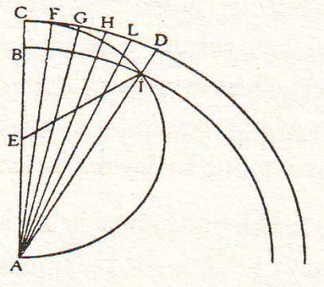
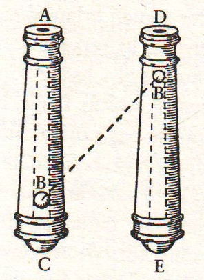

Salviati – Temel konularımızın ana çizgisinden bizi saptıran konuşmalar dün o kadar çok oldu ve öyle gelişti ki bakalım sizin yardımınız olmadan konuların izini bulup ilerleyebilecek miyim?
Sagredo – Konuştuğumuz konular ve ele alınacaklarla epey dolu zihninizin yükü karşısında pek de şaşmadım az önceki sözlerinize; ben sıradan bir dinleyici olmam nedeniyle yalnızca duyduklarımı zihnimde tuttuğumdan, onları anımsayıp düşüncelerimizi belki derleyip toparlayabilirim. Dünkü konuşmalardan benim zihnimde kalanlara göre, iki görüşten hangisinin daha olası ve akla yakın olduğunu asıl temeline bakarak araştırıyorduk: Bu görüşlerden biri, gökcisimlerinin yapısında üreyiş, bozunma, değişme diye bir durum olmadığı, yaratılıştaki durumlarını aynen koruduklarını öne süren, onlara Yerküre’mizden farklı özellikler yakıştıran görüştür. Buna göre gökcisimlerinde, bizim Yerküre’yi bozunur, değişir, üreyişe yatkın kılan elementsel varlıklardan tamamen farklı beşinci bir töz vb. vardır. Diğer görüş, Evren’in kısımları arasında böylesi bir farklılık gözetmeyerek, Yerküre’yi de Evren’in diğer kısımları gibi mükemmellikten yararlanan bir cisim sayar; netice itibariyle hareket eden bir cisim olarak Yerküre’nin harekette Ay’dan geri kalmadığını, Ay gibi, Jüpiter gibi, Venüs ya da başka bir gezegen gibi hareketli olduğunu kabul eder. Bu görüş sonuçta Yerküre ile Ay arasında özel paralellikler kuruyor ve başka bir gezegenden çok Ay’la kurduğu bu paralellikler üzerinde duruyordu. Belki de bunun nedeni Ay’ın bize uzaklığının ötekilere kıyasla daha az oluşu ve böylece bizim de Ay hakkında duyularımıza dayalı daha fazla gözlem yapıyor olmamızdır. Bu ikinci kanaatin, ötekinden daha fazla gerçeğe yatkın olduğu sonucuna vararak konuşmalarımızın gelişimi şu noktada toplandı: Acaba çoğu kimsenin şimdiye kadar inandığı gibi Yerküre hareketsiz, sabit mi duruyor yoksa eski filozoflardan bazılarının inandığı ve bazılarının da kısa bir süredir[67] değerlendirdikleri gibi hareket sahibi mi ve eğer böyleyse hareketi acaba nasıl cereyan etmektedir?
Salviati – İzleyeceğimiz yolu anladım, fakat Yerküre’nin diğer gökcisimlerine ait koşulların aynısına sahip bulunduğunu öne süren görüşün gerçeğe, onun tersi olan görüşten daha yatkın olduğunun benimsendiğine ilişkin sözleriniz üzerinde durup bir iki şey söylemeliyim; çünkü ben böyle bir sonuca varmadım. Bunun tersi olan görüşler konusunda da bir sonuca varmadığım gibi... Ben yalnızca gerek birinci gerekse ikinci görüşle ilgili olarak şimdiye dek öne sürülmüş gerekçeleri ve yanıtları, iddiaları ve çözümleri sıraladım ve bu arada bu konu üzerinde uzun uzadıya kafa yorarken zihnimde uyanan bir iki fikri ekledim, sonra da bunları başkalarının kararına bıraktım.[68]
Sagredo – Ben duygularıma kendimi kaptırarak bana ait özel fikir sanki herkes tarafından aynen paylaşılıyormuşçasına davrandım ve gerçekten yanıldım, özellikle Bay Simplicio’nun bu konuda ne düşündüğünü hesaba katmadan.
Simplicio – İtiraf etmeliyim ki bütün bir gece dünkü konuşmaları zihnimden geçirdim ve doğrusu ya güzel ve cesur epey fikre rastladım. Böylesine büyük ve otorite sahibi yazarların fikirleriyle kendimi kuşatılmış hissediyorum ve özellikle de... Siz başınızı sallıyorsunuz Bay Sagredo ve sanki çok abartılı bir şey söylüyormuşum gibi gülümsüyorsunuz.
Sagredo – Ben yalnızca gülümsüyorum ama inanınız, aklıma öyle bir şey getirdiniz ki kahkaha atmamak için kendimi zor tutuyorum. Aklıma getirdiğiniz şey şu: Birkaç yıl öncesine ait, isimlerini bugün bile sıralayabileceğim ve hepsi de asillerden olan birkaç arkadaşla buluşmuştuk.
Salviati – Olayı anlatsanız iyi olur, böylece Bay Simplicio kendisine güldüğünüz sanısından kurtulmuş olur.
Sagredo – Bana bu fırsatı verdiğinize memnunum. Bir gün Venedik’te çok takdir toplamış bir hekimin evindeydik. Otopsi alanında oldukça deneyimli bir doktordan daha iyi olan bu hekimin evine, bazıları etüd için bazıları da meraktan ötürü kadavra kesme-biçme işleri izlemeye gelirlerdi. O gün de tesadüfen, sinirlerin insan vücudunun hangi bölümünden doğup vücuda yayıldığı konusu araştırılıyordu. Vücuttaki sinirlerin hangi noktadan kaynaklandığı Galen’ci[69] doktorlarla peripatetikçiler arasında anlaşmazlık konusuydu. Sözünü ettiğim ünlü anatomi doktoru, beyinden çıkıp ensemizden geçerek belkemiğimize yayılan sinirler yumağının vücudumuzun her yanına dağıldığını, bu arada kalbimize, kunduracı kaytanı gibi incecik, yalnızca tek bir sinirin ulaştığını gösterdi ve her şeyi inceden inceye anlatabilmek için özenle kesip biçtikten sonra peripatetikçi olduğunu bildiği kişiye dönerek sinirlerin beyinden çıktığına, kalpten kaynaklanmadığına iyice ikna olup olmadığını sordu. Bu soru karşısında doğa felsefecisi epey düşündükten sonra şu cevabı verdi: “Siz bana bu durumu öylesine açık seçik gösterdiniz ki eğer sinirlerin kalpten çıkıp vücuda yayıldığını söyleyen Aristoteles’in kitabı elimizde olmasa sizin söylediklerinizin doğruluğunu itiraf zorunda kalırdım.”
Simplicio – Beyler, vücudumuzdaki sinirlerin nereden çıkıp dağıldığı konusu bazılarının sandığı gibi çözümlenmiş ve karara bağlanmış bir şey değildir.
Sagredo – Böylesi itirazcılar bulundukça karara bağlanacağından pek de emin olamayız. Sizin sözleriniz o peripatetikçinin cevabındaki sorumsuzluğu hiç hafifletmez, çünkü kendisine sunulan böylesine açık seçik bir deney karşısında Aristoteles’in herhangi bir deneyini ve gerekçesini sunacağına, “O dedi”[*4] sözünün hiçbir zaman yadsınmaya cesaret edilmeyen otoriterliği[70] ile cevap vermekle yetindi.
Simplicio – Aristoteles böylesine büyük otorite sahibi olmayı ancak fikirlerinin derinliği ve kanıtlarının gücü sayesinde kazanmış bulunuyor: Fakat ne dediğini anlamak gerekir ve yalnızca anlamak yetmez. Kitaplarıyla öyle haşır neşir olmalısınız ki onun her söyleminin zihninizde hazır bulunması için mükemmel biçimde özümsemelisiniz; çünkü o halk için yazmadı ve fikirlerini de sıradan bir mantık düzeni içinde sunmadı. Hatta düzen dışına çıkma yönteminden yararlanarak önermelerin bazı kanıtlarını sanki başka konuları ele almış izlenimini veren metinlerde sunmuştur. Bu nedenle bir konuyu öbürüyle iç içe geçirmeyi, bir metni bir başka ve epey uzaktaki metinle çift koşmayı bilecek kadar geniş çerçeveli fikirlerin taşıyıcısı olmak gerek. Hiç şüphe yok ki böyle bir pratiğe sahip olan kişi bilinmesi mümkün her şeyi onun kitaplarından çıkarabilir, çünkü hepsi onun kitabında mevcuttur.
Sagredo – Şöyle bir şey var Sayın Bay Simplicio: Madem ki bilgilerin orada burada dağınık durması ve topluca bir arada bulunmayışı sizi rahatsız etmiyor ve bunları devşirip derlemenin zevkine varıyorsunuz, sizlerle diğer felsefecilerin Aristoteles’in fikirleri arasında bağlantılar kurmak, onları bağdaştırmakta kullandığınız yöntemle ben de Virgilius’un ve Ovidio’nun dizelerinden kompozisyonlar çıkararak insanoğlunun tüm sorunlarını ve doğanın sırlarını açıklamaya çalışabilirim. Ne diye Virgilius’dan ya da başka bir şairden söz açıyorum? Benim elimde öylesine küçük bir kitapçık var ki hem Aristoteles’in hem Ovidio’nunkinden küçük olup bu kitapçıkta tüm bilimler mevcuttur ve üzerinde azıcık çalışma yapanlar tam bir fikir edinebilirler: Bunun adı alfabedir ve muhakkak ki şu ve bu sesli harfi şu ya da bu sessiz harflerle birleştirince tüm kuşkuları ortadan kaldıran gerçek cevapları verebilecektir ve tüm bilimlerle sanatların öğrenimini sağlayabilecektir; tıpkı paleti üzerinde ayrı ayrı dizilmiş her biri ayrı renkteki boyalardan ressamın azıcık şundan azıcık da bundan alarak insanlar, ağaçlar, fabrikalar, kuşlar, balıklar kısacası gözlenebilen tüm nesneleri hem de paletinde göz, kuş tüyü, pul, yaprak diye bir nesne bulundurmamasına rağmen resme dökmesi gibi. Hatta resme dökülmesi gereken şeyler ya da bu şeylerin bazı bölümlerinin paletteki renkler arasında bulunmaması gerekir; çünkü zaten bulunsa örneğin kuş tüyleri bulunsa bunlar yalnızca bir kuş ya da şapka tüyü resmetmekten başka bir işe yaramazdı.
Salviati – İsim yapmış bir stüdyoda teleskopun icadıyla ilgili bir açıklamayı duyan, fakat teleskopu daha önce görmeyen bir doktorun, bu icadın[71] Aristoteles’ten alındığını söylemesine tanık olmuşlardır. Bu kişiler halen hayattadırlar. Bu doktor bir kitap getirtip kitap metninin bir yerinde çok derin bir kuyunun dibinden göğe bakıldığında, gündüz vakti de yıldızların gorülebilme nedenine işaret edildiğinden dem vurmuş ve oradakilere şöyle demiştir: “İşte, kuyuyu andıran uzun boru, işte kristalleri andıran buhar taneleri ve nihayet işte ışınlar geçerken görüşü güçlendiren saydam tabaka.”
Sagredo – Bilinenlerin tüm unsurlarını içerircesine bir anlatım olan yukarıdaki ifade, bir mermer parçasından güzel bir heykel, hatta güzel binlerce heykel elde edilebilir demeye benziyor. İşin püf noktası bir mermer parçasından heykel çıkarabilmektir; demek istediğimiz, onun söylediklerinin,
Giovacchino’nun[72] kehanetlerine ya da olay gerçekleştikten sonra putların kerametine uydurulmasına benzediğidir.
Salviati – Peki, astrologların kehanetlerinden neden söz etmiyorsunuz? Olayların gerçekleşmesinin ardından kehanetleri burçların konumunda okuyanları hesaba neden katmıyorsunuz?
Sagredo – Simyacıların da çılgınlığa[73] yaklaşan tutkularının etkisinde, büyük dehaların altın imal etmekten öte hiçbir işle ilgili bir şey yazmadıkları, yazanların da bilgiyi halktan gizlemek için şu ya da bu perdelemelerle konuya karartma getirdikleri hükmüne vardıklarını görüyoruz; onların eski şairler hakkındaki yorumlarını dinlemek de epey eğlenceli. Özellikle onların öyküleri ardında müthiş gizemli olaylar keşfedişleri çok hoş: Ay’ın aşkları, Ay’ın Endimione için yeryüzüne inişi, onun Atteon’a karşı kızgınlığı ve Zeus’un altın yağmuruna ve kızgın alevlere dönüşümü, Merkür’ün sanatında nice gizli taraflar oluşu, Pluto’nun insan kaçırışları ve salkım saçak altın sarkıtan o ağaç dalları.
Simplicio – Ben şuna inanıyorum ve kısmen de biliyorum ki bu dünyada avare zihinli birçok insanın fikirlerindeki saçmalık Aristoteles’e fatura edilmektedir ki siz de Aristoteles’ten pek saygıyla söz etmiyorsunuz. Adının, çağlar boyunca bunca önemli kişinin zihninde yer etmiş olması, okumuş her şahısta ona karşı saygı uyandırmalıdır.
Salviati – Durum sizin sandığınız gibi değil Bay Simplicio. Onun bazı düşüncesiz müritleri var ki onların hafifliklerine biz alkış tutsak Aristoteles’in saygınlığına gölge düşürmüş olurlar. Hem sonra, Sayın Bay Simplicio, söyler misiniz bana, Aristoteles kendisini teleskopun mucidi ilan etmek isteyen doktorun sözlerini duymuş olsaydı acaba doktora mı kızardı yoksa doktorun o sözleriyle dalga geçen kişilere mi? Siz bunu fark edemeyecek kadar saf mısınız? Peki, Aristoteles’e gökyüzünde keşfedilen yenilikler anlatılmış olsaydı onun fikir değiştireceğinden ve deneye dayalı akıl ürünlerine itibar göstereceğinden şüphe mi duyuyorsunuz? Aristoteles’in ağzından çıkan her kelama, aklın süzgecinden geçirmeden korkakça arka çıkanları önemsemeyerek akılcı doktrinlere yanaşmış olacağından kuşkunuz mu var? Eğer Aristoteles bu gibilerin zannettikleri gibi biri olsaydı, inatçı, haşin, tiran huylu, ortalığı kasıp kavuran, herkesi birer koyun misali peşinden sürüklemek isteyen biri olurdu ve ortaya attığı fikirlere, akla dayalı deneylerden, hatta doğanın kendisinden bile öncelik tanınmasını tercih ederdi. Siz bunu idrak edemiyor musunuz Bay Simplicio? Aristoteles’i otorite sahibi yapan, onu otoriteyle donatan müritleridir, bu otoriteyi kendisi gasp etmiş değildir. Ve başkasının kalkanıyla korunmak, korumasız meydana çıkmaktan daha kolaycı bir tutum olduğundan, korku nedeniyle kalkandan bir adım bile uzaklaşma cesareti gösteremiyorlar. Böylece Aristoteles’in gökyüzü tablosunda bir değişiklik yapmaktansa doğanın sunduğu gökyüzünde gördüklerini pervasızca inkâra kalkışıyorlar.
Sagredo – Bunlar bana, kocaman bir mermer parçasını işlemeye koyularak, mermerden haşarı bir Herkül mü yoksa Zeus mu, bilmiyorum, ne heykeli yapıp müthiş bir beceriyle ona inanılmaz bir canlılık ve hareketlilik görünümü kazandırarak hayranlarını korkutarak başka, acaba bu benim elimden çıkmış bir eser mi şüphesiyle heykelden kendisi de korkmaya başlayan heykeltıraşın durumunu anımsattı. Kapıldığı korku öyleymiş ki heykeltıraş, bir daha heykelin önüne çekiç ve iskarpelasıyla yaklaşmaya cesaret edememiş.
Salviati – Ben zaman zaman şuna hayret ediyorum: Nasıl oluyor da Aristoteles’in ağzından çıkan her kelama sadık kalan o kişiler, onun itibarını artırmak yerine eksilttiklerinin, feci halde zedelediklerinin farkına varmıyorlar? Şaşmamın nedeni şu: Elimle dokunurcasına, yakından bildiğim konularda yalan yanlış önermeleri desteklememi ısrarla isteyip ki gerçek bir filozof böyle yapardı, hatta Aristoteles de böyle yapardı demeleri, bilmediğim konularda Aristoteles’in doğru dürüst yargılara varmış olabileceği kuşkusunu bende daha da artırıyor: Eğer ben açık seçik gerçekler karşısında onların geri adım atıp kanaat değiştirdiklerini görseydim, ısrarcı davrandıkları noktalarda, benim anlayamamış ya da daha önce duymamış olduğum açıklamalar karşısında kaldığım inancına kapılabilirdim.
Sagredo – Peki, sonucu bir başkası tarafından bulunmuş şu ya da bu fikirden haberdar olmadıklarını itiraf ederlerse itibarları ya da Aristoteles’in itibarı fazlaca sarsılır sanmaları üzerine, tıpkı Bay Simplicio’nun önermiş bulunduğu yönteme uyarak, Aristoteles’in çeşitli metinleri arasındaki bilgileri çift koşarak birleştirmeyi istemeleri kötü bir yöntem sayılmayabilir; çünkü metinleri içinde her türlü bilgi var deniyorsa bu bilgileri arayıp bulmak mümkün demektir.
Salviati – Lütfen bu yöntemi dilinize dolamayın Bay Sagredo, bu yöntemle alay ediyormuşsunuz gibi geliyor bana. Çünkü fazla eski sayılmayacak bir tarihte, büyük isim yapmış bir filozof,[74] ruh konusunda bir kitap yazarak ruhun ölümsüz olup olmadığına ilişkin Aristoteles’in fikirlerini aktarmak istemiş. Aristoteles’in bu metinleri, Alessandro[75] tarafından zikredilen kitaplardan alınmamış, çünkü Alessandro tarafından zikredilen kitaplarda konuyla ilgili belirgin bir şey bulunmadığı gibi bu konu ele alınmamış. Ün yapmış o filozof, hiç kimsenin daha önce rastlamadığı kitaplar bulduğunu ve bu kitaplarda netameli[76] bir konu olan ruhun ölümsüzlüğü görüşüne ters düşen ifadelere rastladığını dile getirmiş. Bu durumda o ünlü filozofa, kitabı yayınlamakta zorluklarla karşılaşabileceği hatırlatıldığında, ünlü filozof arkadaşına mektup yollayarak metinleri onay için göndermekten vazgeçmeyeceğini, çünkü başka bir engel çıkmadığı takdirde, Aristoteles’in görüşünü değiştirmekte hiç zorluk çekmeyeceğini belirtmiş. Çünkü başka metinlerdeki başka fikirlerle zıt görüşü de savunabileceğini ve bunu bal gibi Aristoteles zihniyeti kılıfına yerleştirebileceğini bildirmiş.
Sagredo – Böyle bir fikir adamına can kurban çünkü işlerine Aristoteles’in burnunu sokmasına izin vermiyor. Üstelik onu burnundan yakalayıp olayları kendi isteğince yorumlatıyor. Görüyorsunuz ya, uygun zamanı yakalamak ne kadar önemli! İnsan Herkül’le kızgınken tartışmaya girişmektense Meonyalı hizmetkârlarla muhabbete daldığında tartışmaya koyulmalı.[77] Ah, uşak ruhlu zekâların akıl erdirilemeyen riyakârlığı! O uşak ruhlu zihinler ki hangi hedef için yazıldıkları belli olmayan ve hangi sonucu ispata yarayacağını bilmedikleri gerekçeleri “güçlü” ve “sonuç belirleyici” diye niteliyorlar, harfiyen uyulacak emirnameler kabul edip onlara kendilerini bağlı sayıyorlar. Fakat onlar için en acı durum şudur: Aynı yazarın bir soruna şöyle mi, böyle mi baktığına kesin kanaat getirememeleri ve şüphe içinde olmalarıdır. Bu durum, tahtadan bir heykeli kâhin kabul ederek ona kehanetlerini öğrenmek için koşmak, ondan korkmak, ona tapmaktan farklı mıdır?
Simplicio – Peki, Aristoteles’ten vazgeçersek felsefe alanında bize rehberlik edecek kim kalıyor ki? Siz bana birkaç düşünür adı verir misiniz?
Salviati – Rehberlere vahşi ve meçhul diyarlarda ihtiyaç vardır; oysa herkesin bildiği beldelerde rehbere yalnızca körlerin ihtiyacı vardır. Gözleri görmeyenin evinde kalması daha doğru olur, ancak göz sahibi ve akıl sahibi olanlardan rehber lik yapmaları istenebilir. Bununla Aristoteles’in dediklerine kulak verilmemeli demek istemiyorum. Tersine Aristoteles’i akıllıca inceleyenleri takdir ediyorum; ben onun her dediğine körü körüne yem olanı ve onun her sözüne, hiç neden sormadan boyun eğip, emir kabul edeni ayıplıyorum. Bu durum, ardından daha kötü bir durum doğuruyor ki bu da başkalarının Aristoteles’in kanıtlarının dayanaklarını artık aramaktan vazgeçmesi durumudur. Şu durumdan daha büyük bir ayıp var mıdır ki genel tartışma sırasında kanıtlanabilecek sonuçlar sunmak varken biri çapraz dalışla ortaya bir metin fırlatarak herhangi bir amaca yönelik yazılmış o metni tartışma konusuna uygulayarak tartışmacının ağzını otla tıkar gibi tıkıyıveriyor. Bundan büyük ayıp mı olur? Ama eğer siz yine de bu minval üzerine incelemelerinizi sürdürmek istiyorsanız o takdirde filozof adını terk ediniz ve kendinizi tarihçi olarak niteleyiniz ya da “Ben sadece bellek uzmanıyım” deyiniz. Çünkü felsefe yapmayanların, çok değerli unvan olan filozof adını taşımaları uygun değildir. Bütün bir gün dolaştığımız deryalardan sahile dönme zamanı geldi artık. Bu nedenle, Bay Simplicio, siz bizim karşımıza kendinize ya da Aristoteles’e ait kanıtlar ve gerekçelerle çıkınız, metinlerle ve boş otoritelerle değil... Çünkü bizim yürüttüğümüz fikirler gözle görülür elle tutulur bir dünyaya ilişkindir, kâğıtlar dünyasına ilişkin değildir. Dünkü sohbetlerimizde, Yerküre’yi gökcisimleri arasında saymak için onu karanlıklardan söküp çıkararak gökyüzünde sergileme çabamız itirazsız kabul görecek kadar ikna edici bulunmadığından şimdi onu, sabit ve tamamen hareketsiz bir küre olarak kabul etme yönünde ne gibi ihtimaller bulunduğunu incelemeye koyulalım. Bu küreyi herhangi bir hareketin sahibi kılmanın ve bu hareketin ne mene bir hareket olduğunu düşünmenin gerçekle bir alakası olabilir mi diye bakacağız. Bu sorun üzerinde ben kararsız olduğum için ve Bay Simplicio, Aristoteles ile birlikte hareketsizlikten yana kararlı olduğundan o kendi kanaati yönünde ufak ufak gerekçelerini sunsun, ben de ona karşı kanaatimi, gerekçelerimi sunayım. Bu arada Bay Sagredo kendi eğilimlerinin ne tarafa kaydığını anlatsın.
Sagredo – Ben bundan memnuniyet duyarım, yeter ki yeri geldikçe aklımın doğaya yakışır yalınlıktaki belirlemelerini açıklama özgürlüğü tanınsın.
Salviati – Böyle davranmanızı ben özellikle rica ediyorum; çünkü işin çözümünü kolaylaştırıcı ve maddi diyelim, pek az fikir yazarlar tarafından günümüze intikal ettirilmiştir, şimdi eksik olan ve aranan, çok ince ve işlenmemiş düşünce ürünleridir. Bunları irdelemek için de Bay Sagredo’nun ince ve derin zekâsına başvurmaktan daha iyi bir fikir var mı?
Sagredo – Ben elbet Bay Salviati’nin sözlerine layık olmak isterim, ama lütfen iltifatlarla zihnimi allak bullak etmeyiniz. Ben şimdi bir filozoftan başka bir şey değilim ve okul sıralarından birinde gibiyim. Karmaşık bir ortama sürüklemeyin beni.
Salviati – Sorunu ele alırken göz önünde tutmamız gereken ilkeyi şöyle belirleyelim: Yerküre’ye hangi hareketi uygun görürsek görelim, bu kürenin sakinleri ve dolayısıyla bu kürenin hareketine dahil olanlar olarak hareket sanki yokmuşçasına ona katıldığımızı ve yalnızca yeryüzünde olup bitenleri izleyişimiz nedeniyle Yerküre’nin hareketinin farkına varamadığımızı bilmeliyiz; fakat buna karşılık şunu da düşünmeliyiz ki benzer hareket, Yerküre’mizin dışında bulunmalarından ötürü bizce gözlenebilen diğer cisimler ve şeyler de çok olağan bir durum olarak sergilenmektedir. Biz gezegenlerin içinde bulunmadığımızdan Yerküre’miz dışındaki cisimlerin ve şeylerin hareketini görebiliyoruz. Öyle ki Yerküre’yi herhangi bir hareketin sahibi kılmak acaba mümkün mü diye girişilecek incelemede ve bu nasıl bir harekettir diye yapılacak araştırmada başvurulacak asıl metod, Yerküre’nin dışındaki cisimler için bunların hepsini eşit olarak içermeye uygun bir hareket söz konusu mudur diyerek soruna bu açıdan bakmak ve hareketi gözlemektir. Örneğin Ay’ın tek başına hareket sahibi olduğunu görmek. Eğer bu hareketin Venüs ya da Jüpiter’le ya da diğer yıldızlarla hiçbir ilişkisi yoksa Yerküre’yle de hiçbir şekilde ilişkisi olamaz ve Ay’dan başkasını da ilgilendirmez. Şimdi, tüm hareketlerin üzerinde genellikle olan bir hareket var ki bu hareket vesilesiyle Güneş, Ay, diğer gezegenler ve sabit yıldızlar, özetle Yerküre hariç, Evren tümden hep beraber doğudan batıya doğru 24 saatlik bir süre içinde hareket ediyor görünüyorlar. İlk bakışta, bu hareket yalnızca Yerküre’ye ait olsa ya da Yerküre hariç, Evren’in geriye kalan tümüne ait olsa insan zihnine ters gelmez; çünkü gerek birinde gerek diğer durumda aynı görünümle karşılaşabiliriz. Şunu söylemeliyiz ki Aristoteles ve Batlamyus bu sorunun derinine girmiş kişiler olarak Yerküre’nin hareketsizliğini ispat etmek isterlerken Yerküre’nin 24 saatte günlük dönüşleri tamamlayışından başka bir fikre karşı çıkmıyorlardı. Fakat Aristoteles’in itiraz ettiği, ne bileyim, bir başka fikir daha var ki eski bir düşünür tarafından Yerküre’yi ayrı bir hareketin daha sahibi sayan bu fikre ileride değineceğiz.
Sagredo – Sizin konuşmanızın peşinden gelecek sonucun gerekliliğini anlıyorum, ama zihnimden söküp atamadığım bir şüphemi açıklamalıyım. O da şudur: Copernicus Yerküre’nin 24 saatlik dönüş hareketinden başka bir hareketi daha Yerküre’ye yakıştırmış; az önce dile getirdiğimiz ilkeden ötürü bu hareket, bizce görünürde algılanamıyor, fakat Evren’in tüm diğer yerlerinden algılanabiliyor. Şunu demek istiyorum, Copernicus ya büyük bir yanlışlık yaparak Yerküre’yi, gökyüzündeki diğer gökcisimlerinin konumuyla mutabakat kurmayan bir hareketin sahibi kılmış ya da şayet mutabakat çerçevesi içindeyse bunu da diğerinin başardığı gibi Batlamyus fark edememiş.
Salviati – Şüphenizi akıllıca düşünmenize borçlusunuz; Copernicus’un Yerküre’ye 24 saatte günlük dönüş hareketinden başka uygun gördüğü diğer hareket konusunu ele aldığımızda göreceksiniz, Copernicus’un Batlamyus’tan ne denli daha sezgili ve derin düşünceli davrandığını, Batlamyus’un göremediğini Copernicus’un nasıl gördüğünü yani bu hareketin diğer tüm gökcisimleriyle hayranlık uyandırıcı bir mutabakat kurmuş olduğunu. Fakat şimdilik işin bu yönünü bırakalım ve ele aldığımız ilk bahse, bu ilk konu etrafında söyleyeceklerime dönelim. Yerküre’nin durduğu değil de döndüğüne itibar ediyor gözüken nedenleri genel olarak ele almak suretiyle başlayacağım, sonra da Bay Simplicio itirazlarını dile getirsin. Önce, biz, yıldızlı kürenin dev cüssesi karşısında Yerküre’nin göreceli minikliğini göz önünde tutarak ve o büyüklüğe bu küçüklüğün milyonlarca defa sığdığını düşünerek yıldızlı kürenin bir gün ve bir gece içinde tam bir tur tamamlamak için hareketinin ne denli hız gerektirdiğini hesaba katarsak, doğrusu ya, dönenin o büyük küre ve dönmeyenin de Yerküre olduğuna[78] beni inandıracak akıllı bir insan bulunacağını sanmam.
Sagredo – Eğer bu hareketlere bağlı olarak, doğanın tümünde kendini belli edecek etkilerle, ister şu pozisyonda ister öbür pozisyonda birbirinden kıl payı kadar bile farksız aynı sonuçlar doğuyorsa, ben, ilk ve genel değerlendirmemde Yerküre’yi hareketsiz kabul etmek için tüm Evren’i hareket ettirmeyi mantıksız bulurum: Sizin kulenizin[79] tepesinden kenti seyretmeye çıkan birinin, başını kımıldatma zahmetine girmemek için karşısındaki tüm kentin döndürülmesini talep etmesi kadar mantıksız. Kanaatimce bu mantıksız pozisyona karşılık diğerinden sağlanacak kolaylıklar ve rahatlıklar o kadar çok ki düşüncem ona itibar ediyor ve onu inanılır kılıyor. Fakat olabilir ki Aristoteles, Batlamyus ve Bay Simplicio bu pozisyonun avantajlarını biliyorlardır ve eğer varsa bizlere de önersinler ya da avantajı yoksa ve olamazsa onu da ifade buyursunlar.
Salviati – Ben epey düşünmüş olmama karşın bir fark bulamadım ve bundan ötürü de bir fark olamayacağına hükmettim. Bu nedenle fark aramanın da boş olduğu kanaatini taşıyorum. Fakat şu noktaya dikkat etmenizi istiyorum: Hareket, netice itibariyle bir harekettir ve bunun varlığı, hareketten yoksun olan şeyler karşısında hüküm ifade eder. Oysa o şeylerin hepsinin eşit olarak katıldıkları bir hareket o şeyler açısından sanki yok gibidir. Şöyle ki bir gemiye yüklenmiş eşyalar, diyelim Venedik’ten Halep ya da Girit Adası’na gitmeleri itibariyle hareket halindeler, çünkü Yunanistan’da Korfu’dan geçiyorlar, Kıbrıs’tan geçiyorlar vb. Ne var ki balyalar, kasalar ve diğer eşya kolileri için, gemideki yolculuk, hepsi de yol boyunca aynı konumda olmaları ve konumların değişmemesi nedeniyle kımıldamazlık ifade eder. Yani bir mal diğer mala göre yer değiştirmemiş, hepsi yerlerini korumuşlardır. Eşyanın tümü bu yolculuğun iştirakçısıdır.[80] Yolculuk hareketinin ortağıdırlar. Şayet yolculuk sırasında kumaş balyalarından biri yalnızca tek parmak kasadan uzaklaşmış olsa bu tek parmaklık uzaklaşma bile o balya için iki bin millik tüm yolculukta diğer eşyalarla kaldığı aynı konuma kıyasla büyük bir hareket oluşturur.
Simplicio – İyi, sağlam ve tamamen peripatetikçilere ait bir görüştür.
Salviati – Ben bu görüşün daha eski olduğunu sanıyordum ve Aristoteles’in bu fikri iyi bir ekolden alırken tam anlamıyla algılayamadığını ve kitaba yanlış geçirmiş olmakla onun her sozünü desteklemek isteyenler yüzünden karışıklığa yol açmış olacağını sanıyorum. Aristoteles, hareket eden her şey sabit bir şey üzerinde hareket eder diye yazınca, korkarım ki hareket eden her şey hareketsiz bir şeye kıyasla hareket ifade eder dememiştir ve bu fikirden uzaklaşma yanlışlığına düşmüştür. Eğer böyle deseydi ortaya hiçbir zorluk çıkmazdı; oysa diğer söylemin sakıncaları çoktur.
Sagredo – Lütfen konuşmamızın seyrini bozmayalım ve başladığımız yerden konuşmayı sürdürelim.
Salviati – Hareketli birçok cismin hepsi birden, ortak olarak sahip bulundukları hareketin, kendi aralarındaki ilişki bakımından sanki yokmuş gibi bir kımıldamazlık ifade ettiği malumdur; çünkü kendi aralarında hiçbir şey değişmemektedir ve ancak bu hareketten yoksun olan diğer cisimlere göre hareket ifade ederler.
Aralarındaki mevcut yoldaşlık hareket açısından bozulmuş demektir ve biz Evren’i ikiye ayırarak birini mecburen hareketli ve diğerini de hareketsiz saydığımızdan bu harekete bağlı olarak ha yalnızca Yerküre’yi hareketli kılmışız ha Evren’in tüm diğer geri kalan kısmını. Çünkü bu hareketin icra edilişi gökcisimleriyle Yerküre arasındaki ilişkiyle görecelidir ve değişen sadece bu ilişkidir. O doğa ki tek bir yoldan elde edilebilecek sonuç için birçok yolu kullanmak istemez;[81] neden çok sayıdaki dev cüsseli cisimleri akıl almayacak müthiş bir hızla döndürsün, tek bir cismi kendi merkezi etrafında mütevazi bir hızla döndürme hareketiyle aynı sonuca ulaşacakken?
Simplicio – Peki ama ben anlamıyorum, Güneş’in, gökyüzünde bir taraftan diğer tarafa devasa hareketi, Ay’ın, diğer gezegenlerin ve sonsuz sayıdaki sabit yıldızların hareketlerinin hepten yok sayılması nasıl mümkün olur? Ve siz Güneş’in bir meridyenden öbür meridyene geçişini, bu ufukta yükselmesini ve diğer ufukta batmasını, gündüzü ve geceyi mümkün kılışını, Ay’ın benzeri hareketleri yapmasını ve diğer gezegenlerin ve sabit yıdızların hareketlerini nasıl yok sayabilirsiniz?
Salviati – Sizin anlattığınız tüm bu durum değişiklikleri eğer Yerküre’nin durumuyla göreceli olarak değerlendirilmezse nedir ki? Hiçtir. Bunun doğru olup olmadığını anlamak için söküp atın hayalinizden Yerküre’yi; Güneş’in ya da Ay’ın ne doğması ne batması, ne ufuk ne meridyen, ne gündüzler ne geceler söz konusu olur. Ne Güneş’le Ay’ın, ne de ister gezegen olsun ister diğerleri olsun ve ne de yıldızların hareketleri arasındaki ilişki bir şey ifade eder.
Tüm değişikliklerin önemi Yerküre’yle olan ilişkileriyle görecelidir. Bu hareketlerin önemi, Güneş’in şimdi Çin’e, sonra İran’a, sonra Mısır’a, sonra Yunanistan’a, Fransa’ya, İspanya’ya, Amerika’ya vs. kendini göstermesiyle belirir. Ay için de gökcisimlerinin tüm diğerleri için de aynı şeyi söyleyebiliriz. Oysa aynı durum, Evren’in büyük bir bölümünü işin içine katmayarak, Yerküre’yi kendi etrafında döndürmek suretiyle aynen geçerli olur. Zorluğu bir kat daha artıran şudur: Bu büyük dönme hareketini gökyüzüne tanıyacak olsak, gezegenlerin kendi yörüngelerindeki kendilerine özgü dönme yönlerinin göğün dönme hareketinin tersine olduğunu kabullenmek zorunda kalırız.
Tartışmasız olarak bu gezegenlerin her birinin batıdan doğuya döndüğünü ve bu hareketi düzgün biçimde ve kendi hallerinde sürdürdüklerini bilirken, biz göğün o müthiş hızlı günlük dönüş hareketinin gezegenleri kulağından tutup tersine yani doğudan batıya doğru döndürdüğünü nasıl kabullenebiliriz? Oysa Yerküre’yi kendi ekseni etrafında döndürürsek hareketlerin zıtlığı ortadan kalkmış olur ve yalnızca Yerküre’nin batıdan doğuya dönme olgusunun kabulüyle gökcisimlerinin sergiledikleri tüm görünümler uyum kazanır.
Simplicio – Hareketlerin zıtlığı fazla sorun çıkarmaz, çünkü Aristoteles, dairesel hareketlerin kendi aralarında zıt olamayacaklarını ve onlar arasındaki zıtlığın gerçek zıtlık olarak nitelenemeyeceğini açıklıyor.
Salviati – Aristoteles açıklığa mı kavuşturmuş yoksa onun zihninde beslediği bir tasarıma uygun düşüyor diye mi böyle demiş bulunuyor? Eğer zıtlar, onun bizzat dediği gibi, karşılıklı olarak birbirlerini yok etmelerinden ötürü bu sıfatı alıyorlarsa dairesel bir hat üzerinde karşı karşıya gelen iki cismin, düz bir hat üzerinde karşı karşıya gelenlere kıyasla neden birbirlerine daha müsamahakâr davranmaları gerektiğine pek de akıl erdiremiyorum.
Sagredo – Lütfen birazcık durunuz. Söylesenize Bay Simplicio, birbirini attan devirmek için iki süvari karşılaştığında ya da iki takım veya denizde iki filo birbirine saldırdığında siz bu çatışmalar için zıt çatışmalardır demez misiniz?
Simplicio – Diyelim ki zıddırlar.
Sagredo – Dairesel hareketlerde zıtlık neden olmazmış? Bu hareketler yerin ya da suyun yüzeyinde olduğuna göre ve bu yüzeyler, sizin de bildiğiniz gibi, bir kürede yer aldığına göre elbet dairesel harekettirler. Siz, Bay Simplicio, biliyor musunuz dairesel hareketlerden hangilerinin birbirine zıt olmadıklarını? Birbirine dıştan değen tekerleklerde söz konusu olanlardır. Şöyle ki tekerleklerden biri dönerken dıştan değdiği diğer tekerleği doğal olarak ters yönde dönmeye zorlar. Fakat tekerleklerin biri diğerine geçmiş olursa bunların farklı kısımlarının birbiriyle zıtlaşmaması imkânsızdır.
Salviati – Zıt veya değiller, bunlar lafügüzaftır ve ben biliyorum ki tümü kurtarmanın en yalın ve doğal yolu, bir tek hareketi kabullenmekle mümkündür, iki hareketi kabullenmekle değil. Bu hareketlere ister zıt deyin ister karşıt deyin. Ama ben, imkânsızdır diye öne sürmüyorum bu fikri, ne de gerekli bir ispata başvurmak için söylüyorum; güçlü bir olasılıktan söz ediyorum.
Gerçeğe uygunsuzluk olarak karşımıza dikilecek bir durum da, gökyüzünde döndüklerinden, kesinlikle emin olduğumuz gökcisimlerinin, sahip oldukları düzene müthiş bir düzensizliği reva görmekle ortaya çıkmış olacaktır. Kastettiğimiz o düzen de şudur: Gökcisminin yörüngesi ne kadar büyükse tur tamamlama süresi o kadar fazla ve yörünge ne kadar küçükse tur tamamlama süresi o denli kısa oluyor. Satürn tüm diğer gezegenlerden daha geniş daire çizdiği için turunu 30 yılda tamamlıyor. Jüpiter daha küçük olan yörüngesinde turunu 12 yılda tamamlıyor. Mars gezegeniyse turunu iki yılda[82] tamamlıyor. Ay daha küçük olan yörüngesinde dönüşünü bir ayda tamamlıyor ve duyularımızın sağladığı imkân sayesinde Jüpiter’in Medicei uydularından Jüpiter’e en yakın olanının, çok kısa sürede yörüngesindeki yolculuğunu tamamladığını yani 42 saatte bir tur yaptığını görüyoruz. Bir sonrakiyse Jüpiter etrafındaki turunu 3.5 günde, üçüncüsü 7 günde ve Jüpiter’in en uzağındaki de 16 günde tamamlıyor; Yerküre’mizin de 24 saatte bir dönüşü tamamladığı görüşüne itibar edilirse uyum içindeki bu işleyişe hiç halel gelmez. Yok eğer Yerküre hareketsiz kabul edilirse şöyle bir gereksinim duyulacaktır: Ay’ın çok kısa süreli periyodundan başlayarak Mars gezegeninin turunu iki yılda tamamlayışı, oradan da Jüpiter’in yörünge turunu 12 yılda tamamlayışına geçersek ve ondan da daha uzun süreli olan Satürn’ün otuz yılda yörünge turunu tamamlaması durumunu göz önünde tutarsak, hepsinden de çok daha büyük ve mukayese bile edilemeyecek cüssedeki bir kürenin[83] tur tamamlayışını yalnızca 24 saatte yapması gibi bir durumu kabullenmek zorunda kalırız. Bu düzensizlik, üstelik düzensizliğin asgarisidir: Çünkü Satürn küresinden sabit yıldızlar küresine geçip de Satürn’ün yörüngesini tembel tembel tamamlayışı gerçeği karşısında, ondan büyük bir kürenin dönüş süresinin mukayese yoluyla binlerce yıl olması gerekir diye değerlendirecekken, Satürn’den daha büyük kürenin yalnızca 24 saatte bir tur tamamlamasını istemek gibi bir olguyla karşı karşıya kalmak zorunluluğu duyulacaktır. Oysa Yerküre’ye dönme hareketi tanınacak olsa periyodlar arası düzen, son derece tembelce dönen Satürn küresinden tam anlamıyla hareketsiz sabit yıldızlara geçilerek gözetilmiş olur ve yıldızlı küreyi hareketli kabul ettiğimiz takdirde kurtulamayacağımız dördüncü bir sakıncayla mecburen karşı karşıya kalırız. Bu sakınca şudur: Yıldızlar kutuplara çok ya da az yakın olmalarına göre, bazıları çok geniş daireler çizerek büyük bir hızla, bazıları da çok küçük daireler çizerek çok yavaş hareket etmiş olacaklardır. Bunun şöyle bir sakıncası daha var: Hareket ettiklerinden kesinlikle emin olduğumuz gezegenler çok geniş yörüngeler çizerlerken merkezden müthiş uzak fakat uzaklık mesafeleri kesin sayılardan yoksun yıldızlar daha küçük daireler çizmiş olacaklardır. Ayrıca çember büyüklükleri ve dolayısıyla hızı fazla yıldızların hareketi, gezegen dediğimiz yıldızların hareketinden farklı olurken, o yıldızlar kendi aralarında çember büyüklüğüne ve hız değiştirerek zamanla hareket farklılığına uğramış olurlar. Şöyle ki iki bin yıl önce ekvatorda olan ve dolayısıyla çok geniş çemberler çizen yıldızlar şimdi, günümüzde, epey derece uzaklaşıp daha küçük çemberler çizecekler ve farklı hızlarda olacaklar (bu da beşinci sakıncadır). Günün birinde şu da olacaktır ki geçmişte hep hareket etmiş yıldızlardan bazılarının hareketleri yavaşlayacak, kutupla aynı hizaya gelerek duraklar duruma girecekler, bir süre bu şekilde vakit geçirdikten sonra kısa istirahatın ardından yine harekete geçmiş olacaklar. Oysa, hareket ettiklerinden emin olduğumuz diğer yıldızlar (gezegenler) kendi yörüngelerinde en geniş çemberde dönmektedirler ve her zaman o yörüngede kalmayı sürdüreceklerdir.[84] Titiz birisi için gerçekle uyuşmayan bu durumu irdelemeyi kamçılayan şey (bu da altıncı sakınca olsun), engin göğün derinliklerine sert ve katı biçimde mıhlanmış kabul edilen yıldızların, kendi aralarında hiç yer değiştirmedikleri fikri benimsendiğine göre, böylesine büyük hareket farklılıklarına rağmen gökyüzünde bir uyum sözleşmesi yapmışçasına kol kola dönmelerinin akla sığmayacak bir durum olmasıdır. Eğer gökyüzünün dokusu katı değil de akışkansa, ki böyle olduğuna inanmak daha uygun düşer ve böylece her yıldız gökyüzünde kendi yolunda gezinirse[85] yeryüzünden bakıldığında hepsinin el ele tutuşmuş gibi tek bir küre oluşturmuş görünmesini sağlamak, hangi kanun sayesinde ve hangi amaçlı kanunla mümkün olacaktır? Bu amacı gerçekleştirmek için kanaatimce yıldızları geziniyor kabul etmektense sabit kabul etmek daha akıllıca ve uygun olur, tıpkı bir meydanın duvarlarını belirlemenin o meydanda koşuşturan çocukların yer değiştirmelerini belirlemekten daha akıllıca ve kolay oluşu gibi. Nihayet, yedinci sakıncalı durum olarak eğer biz göklerin en yüksek katındaki birincil güç ve kuvvet kaynağı primum mobile’ye[86] 24 saatlik günlük bir dönüş tanıyacak olursak, ona, öylesine büyük bir güç ve özellik tanımış oluruz ki o birincil güç, sayısız sabit yıldız çokluğunu hem de her biri Yerküre’mizden büyük olan yıldızlar çokluğunu sürüklemek zorunda kalmanın dışında gezegen kürelerini de sürüklemek zorunda kalmış olur; kaldı ki primum mobile ile gezegenlerin birbirlerine ters yönde dönüyor olmaları icap eder. Bütün bunlardan başka kabullenmek gerekecek ki bu dönme hareketinin gücü, ateş elementini ve havanın büyük bir bölümünü de sürükleyecektir; bu müthiş ve muazzam güce yalnızca küçücük Yerküre’miz boyun eğmeyip, karşı gelecek. Doğrusu ya bu bana anlaşılması epey zor geliyor ve kendi merkezi üstünde terazi dengesi kurmuşçasına, harekete ve durağanlığa aldırmaz bir durumdaki Yerküre’nin akışkan bir ortamda dönme eyleminden kurtulabileceğine aklım ermiyor. Biz, Yerküre’nin dönmesi için bunları engel olarak görmüyoruz. Evren’in içinde ve ona kıyasla küçücük ve devede kulak kabilinden olan Yerküre’nin, Evren’in tümüne ayak diremek gücünde olduğu kanısında değiliz.
Sagredo – Yapılan konuşmalar, zihnimde hayal kurar gibi öyle karışık fikirler doğurdu ki bunları aktarmak istiyorsam bir düzene sokmaya çalışmalıyım öncelikle ve konuşmaların içindeki örgüyü kurmalıyım; eğer kurabilirsem elbet. Belki de sorular yöneltmek suretiyle ilerlemek kendimi anlatabilmem için daha çok yardımcı olur. Bu nedenle Bay Simplicio’ya önce sormak istiyorum: Doğa, hareket sahibi yalın bir cisme, birden fazla hareketi mi uygun görmüştür, yoksa bu cisim doğal ve kendine özgü tek bir hareketin mi sahibidir?
Simplicio – Hareket sahibi yalın bir cisme doğadan kaynaklanan, yalnızca tek bir hareket uygun görülmüştür; başkaca hiçbir hareket uygun değildir. Doğa kaynaklı olanın dışındaki başkaca hareketler rastlantısal ve iştirak yoluyladır; öyle ki bir geminin güvertesinde gezinen birinin gezintisi kendine ait olan harekettir ve onu limana götüren hareketse iştirak dolayısıyla harekettir. Gemi eğer o limana gitmese o kişi kendi hareketinin sonucu olarak hiçbir zaman limana gidemezdi.
Sagredo – İkinci olarak da şunu sormak istiyorum: Hareket sahibi bir cisme iştirak yoluyla sağlanan hareket, o cisim, iştiraklı hareketten başka bir hareketle kımıldarken, bu kımıltının herhangi bir öznenin kendisinde mi mevcut bulunması gerekir yoksa herhangi bir desteğe ihtiyaç duyulmadan doğa tarafından bahşedilmiş olabilir mi?
Simplicio – Bütün bu sorulara Aristoteles cevap veriyor ve hareketli bir cisim tek bir harekete sahip bulunduğundan, bir harekete de tek bir cisim sahiptir ve bunun sonucu olarak da öznenin rolü olmadan bir hareket ne var olabilir ne de hayal edilebilir.
Sagredo – Üçüncü olarak da şunu yanıtlamanızı istiyorum: Ay’ın, diğer gezegenlerin ve gökcisimlerinin kendilerine ait hareketleri mi vardır ve bu hareketler hangileridir?
Simplicio – Elbet vardır. Bu hareketlerle gökyüzünde burçları tarayarak yol alırlar: Ay bir aylık sürede, Güneş bir yılda, Mars iki yılda, yıldızlı küre binlerce yılda; işte bunlar, onların kendilerine ait ve doğal hareketlerdir.
Sagredo – Peki, sabit yıldızları ve onlarla birlikte tüm gezegenleri hep beraber doğudan batıya doğru gidiyor ve 24 saatte onları yeniden doğuya geliyor gösteren harekete ne diyorsunuz? Bu hareket nasıl onlara ait oluyor?
Simplicio – İştirak dolayısıyla o hareketin içinde bulunuyorlar.
Sagredo – Demek ki bu hareket bizatihi onların kendilerine ait bir hareket değil. Onlarda kendiliğinden var olan bir hareket de olmadığına göre ve hareketin sahibi bir özne var olmadan hareket de var olamayacağından ötürü ortaya çıkan gereksinim, bu harekete bir başka küreyi sahip kılmak ve onun doğasından kaynaklanıyor diye kabul etmektir.
Simplicio – Bundan ötürüdür ki astronomlar ve doğa filozofları gökyüzünün en yüksek katında yıldızsız bir küre kabul etmiş olup 24 saatteki günlük dönüşlerin doğal sahipliğini bu küreye tanımışlardır. Bu küreye de primum mobile (birincil küre) adını vermişlerdir. Bu küredir ki daha aşağıdaki küreleri enselerine yapışmışçasına kendi hareketine iştirak ettirir.
Sagredo – Bilinmeyen ve işin içine engin küreler karıştırmadan, başka hareketlere ya da enseden sürükleme gibi iştirak hareketlerine gereksinim duymadan, her küreye kendi yalın hareketini tanımak suretiyle zıt hareketleri karıştırmadan ve fakat hepsini tek bir ilke çerçevesinde aynı yöne sevk ederek her şeyi mükemmel bir uyum içinde gösterecekken ve işler düzgün yürüyecekken buna kulak asmamak niye? Bunu reddedip garip ve meşakkatli koşullara kulak vermek niye?
Simplicio – Bütün sorun da bu açık seçik ve kısa yoldan sonuca götüren noktayı bulmakta yatıyor.
Sagredo – Bu nokta pek güzel bulunmuş gibi geliyor bana. Yerküre’yi primum mobile kabul edin yani 24 saatte kendi etrafında döndürün ve diğer kürelerle birlikte aynı yönde dönüyor olarak görün ve hiçbir gezegeni ya da yıldızı bu hareketin iştirakçisi saymayınız. Böylece hepsinin doğusu, batısı belirlenmiş olur ve diğer görünümler de açıklığa kavuşur.
Simplicio – Önemli olan onu gereksiz bin bir çareye başvurmadan döndürebilmektir.
Salviati – Tüm gereksiz çareler sizin onlara getireceğiniz önermelere göre giderileceklerdir: Şu ana kadar söylenenler, günlük dönüş hareketinin Yerküre’ye ait olduğunu, Evren’in geri kalan kısmına ait oluşuna kıyasla hiç de ihtimal dışı saymamak gerektiğine ilişkin sadece birincil ve genel nedenlerden ibarettir. Bu nedenleri ben size, zinhar dokunulmaz kanunlarmış gibi sunmuyorum, fakat böyle görünüyor dedirtecek durumlar olarak sunuyorum. Bu duruma ters bir tek deney ya da ikna edici bir kanıt bile bu ve bunun gibi yüz bin tane muhtemel iddiayı yere sermeye yeterli olacağından, bu noktaya saplanıp duraksamamalıyız ve konumuzda ilerleyerek Bay Simplicio’nun vereceği cevapları dinlemeliyiz. Bakalım aleyhte daha iyi ihtimaller ya da daha sağlam nedenler sunacak mı?
Simplicio – Ben önce tüm bu görüşlere genel olarak toptan bir şeyler söyleyeceğim, sonra da özel bazı durumlardan söz açacağım. Yerküre dışında tüm Evren’i dönüyor kabul etmektense sadece Yerküre’ye dönme hareketi tanımanın aynı sonuçları elde etmek açısından daha sade ve kolay bir yol olduğu genel görüşü üstünde duruyor gibisiniz. Aynı sonuçlar elde ediliyor diye iki neden arasındaki farka aldırmıyorsunuz, fakat olgunun cereyan edişi açısından Yerküre’nin dönmesini daha kolay ve sade bir yol gibi görüyorsunuz. Buna cevap olarak bana da öyle geliyor derim, kendi sınırlı ve cılız gücümü göz önünde tutarsam; sonsuz gücün sahibi muharrik kuvvet (motor) için, tüm Evren’i kımıldatmak Yerküre’yi ya da bir saman parçasını kımıldatmaktan daha zor değildir. Eğer söz konusu güç sonsuz bir güçse neden Evren’in küçücük bir kısmını harekete geçirmekle yetiniyor büyük kısmını da harekete geçirebilecekken? Bu açıdan öne sürdüğünüz neden genelde pek geçerli değil.
Salviati – Eğer ben motor (muharrik kuvvet) gücündeki zaaftan ötürü Evren’in dönmediğini söylemiş olsaydım hata etmiş olurdum ve sizin düzeltmeniz yerinde bir konuşma olurdu; sonsuz bir güç için bir yerine yüz bin cismi kımıldatması fark etmez. Benim söylediğimin muharrik güç ile (motor) ilgisi yoktur, fakat sadece hareket eden cisimlerle ilgilidir sözlerim ve bu cisimlerdeki karşı koyma hareketine ilişkindir. Bu direnç, Evren’de Yerküre’de olduğundan daha az değildir. Benim söylediğim daha önce ele aldığımız hareketli cisimlerin birçok özelliğine ilişkindir. Sonsuz bir gücün birazını kullanmak yerine daha büyük bir kısmını kullanmak sorununa gelince; cevabım şu ki sonsuz bir şeyin bir kısmı diğer kısmından daha büyük diye bir şey olamaz, her ikisi de sınırlı güçte olduğuna göre. Ne de sonsuz sayısının yanında yüz bin sayısı iki sayısından daha büyüktür diyemeyiz, onun elli bin defa diğerinden fazla olmasına rağmen. Evren’i kımıldatmak için Yerküre’yi kımıldatmaya kıyasla sınırlı bir güce sahip olunması gerekiyor dendiği takdirde sonsuz gücün büyük bir kısmını kullanmaya gerek yoktur, her ne kadar Yerküre’yi kımıldatmaya yetecek olana kıyasla Evren’i kımıldatmak için gerekli olan güç daha fazlaysa da kullanılmayan kısmının da sonsuzdan daha küçük olduğu söylenemez. Böylece özel bir etki elde etmek için az ya da çok güç uygulamak arasında bir fark yoktur: Kaldı ki bu gücün kullanılmasının nihai amacı sadece Yerküre’nin günlük hareketini sağlamak değildir, Evren’de var olduğunu bildiğimiz cisimleri de hareket ettirme amacını taşımaktadır; bilmediğimiz daha da başka cisimler dahil olmak üzere. Hareketli cisimler konusuna gelince, Yerküre’yi döndürmenin Evren’i hareket ettirmeye kıyasla hantallıktan uzak kıvrak bir uygulamaya ihtiyaç göstereceğinden şüphe etmiyor olmamız dolayısıyla Aristoteles’in “bir tek yoldan elde edilmesi mümkün şeyi birçok yoldan elde etmeye çalışmanın gereksizliği” deyişini hatırlarsak, bizce şu ihtimal daha doğru görünüyor: Günlük hareket, Yerküre’yi bu hareketten yoksun kılarak Evren’e uygun görüleceğine, Yerküre’nin günlük hareketine uygun görülmelidir.
Simplicio – Siz Aristoteles’in belitine dayanırken sorunun tümüne ilişkin ve özellikle hedefimizle ilgili olan bir hükmü es geçtiniz. Es geçtiğiniz hüküm “equo bene” hükmü olup şu ya da bu yoldan sorunun tümüne eşit derecede iyi hizmet (equo bene eşit derecede hizmet ilkesinin Latince’sidir) edilip edilmeyeceği şartını getirir.
Salviati – Tutumlardan birinin ya da diğerinin eşit derecede işe yarayıp yaramadığı, tatmin edici cevap bekleyen görünümlerin özel sınamalardan geçmesinden sonra anlaşılacaktır, çünkü şu ana kadar tartıştıklarımız ve bundan sonra tartışacaklarımız, görünümleri cevaplamaya her iki tutumun da eşit derecede uygun düştüğü varsayımına dayanmaktadır. Benim ihmalim sonucu Aristoteles’te atladığımı söylediğiniz kısım boşu boşuna tarafınızdan eklenmiş gibi geldi bana. Çünkü “eşit derecede iyi” demek mecburen iki kavram arasında kurulan bir bağıntıdır. Örneğin, durağanlığın durağanlık kadar iyi olduğunu söylemek diye bir şey olamaz; bir kavramın kendisiyle mukayese edilmesi imkânsızdır. “Bir tek gereçle yapılabilecek şeyi birden çok gereçle yapmak boşunadır” denildiğinde, yapılması gereken şeyin aynı şey olması gerektiği, farklı iki şey olmadığı anlaşılmaktadır. Aynı şeyin, kendisi kadar iyi yapıldığı bir şeydir diye bir mukayese abes olacağına göre “eşit derecede iyi” hükmüne başvurulması fuzuli olup tek kavramın kendisiyle ilişkiye sokulması gibi bir durumu yaratmaktadır.
Sagredo – Dünkü gibi bir çıkmaza girmemiz istenmiyorsa lütfen sadede gelelim ve Bay Simplicio Evren’in yapısı hakkındaki yeni görüşümüze karşı sunmayı gerekli gördüğü itirazları çıkarıp döksün ortaya.
Simplicio – Sizin yeni dediğiniz görüş yeni değildir, hatta çok eski çağlara aittir.[87] Bunun eski olduğu şuradan belli, Aristoteles bu fikri şu nedenlerle reddediyor: “Her şeyden önce, eğer Yerküre kendi merkezi etrafında dönseydi ya da merkezin dışında dairenin çevresinde dönseydi zorlama bir hareket olarak dönerdi, çünkü doğasında dönme hareketi yoktur. Eğer Yerküre doğal olarak böyle bir hareketin sahibi olsaydı onun her parçasının da böyle bir harekete sahip olması icap ederdi; oysa onun her parçası doğrusal hat izleyerek merkeze doğru gidiyor. Zorlama hareket doğada mevcut olmadığı için ve zorlama hareket şiddet içerdiğinden süreklilik gösteremez. Buna karşılık Dünya’nın düzeni ebedidir. İkinci olarak da şu var: Dairesel harekete sahip tüm diğer hareketli cisimlerin (gezegenler) yörüngelerindeki yolculukta geri kaldıkları[88] oluyor. Bu ikinci hareket yalnızca primum mobile’de yoktur, böylece Yerküre’nin de iki harekete sahip bulunarak dönüyor olması gerekirdi; şayet böyle bir durum olsaydı sabit yıldızların Yerküre’ye göre konumunda bizce görünür bir değişiklik muhakkak belli olurdu.[89] Oysa böyle bir şey gözlenmiyor, bilakis, yıldızlar hiçbir değişiklik olmadan hep aynı yerden doğuyorlar ve aynı yere batıyorlar. Üçüncüsü kısımların ve tümün hareketinin Evren’in merkezine doğru olduğudur ve zaten bu nedenle Evren’e dahil bulunuyoruz. Sonra, Aristoteles kısımların yöneldiği yerin doğal olarak Evren’in merkezine doğru mu yoksa Yerküre’nin merkezine doğru mu olduğu şüphesini gideriyor ve bu yönelimin, içgüdüsel olarak Evren’in merkezine doğru olduğunu ve Yerküre’nin merkezine rastlantısal olduğunu ifade ediyor; bu şüphe üzerinde dün uzun uzadıya duruldu. Aynı durumu dördüncü gerekçeyle teyit ediyor ve bunu, ağırlık sahibi cisimlere ait deneylerden çıkardığını, bu cisimlerin yukarıdan aşağıya, Yer’in yüzeyine düşey indiklerini ifade ediyor ve aynı şekilde yukarıya dikey olarak fırlatılan cisimlerin çok yükseğe atıldıklarında da aynı hatlar boyunca aşağıya dikey olarak döndüklerini söylüyor. Bütün bunlar, bu cisimlerin hareketinin Yer’in merkezine doğru olduğu sonucunu kaçınılmaz olarak ortaya koyuyor ki Yerküre’miz de hiç kımıldamadan cisimleri kucaklamak için bekliyor. Ardından son olarak, aynı sonuçlara yönelik teyit niteliğinde, astronomların başka gerekçeler öne sürdüklerini yani Yerküre’nin, Evren’in merkezinde bulunduğu ve sabit durduğuna ilişkin gerekçeler öne sürdüklerini söylüyor ve ortaya attığı bir fikir var ki bunu şöyle açıklıyor: Yıldızların hareketlerine ait tüm görünümler, Yerküre’nin merkezde yer işgal etmesi durumuyla uygunluk gösteriyor ki şayet Yerküre Evren’in merkezinde bulunmasaydı yıldızların konumu bu mutabakatı sergilemezdi. Başka gerekçeler de var Batlamyus ve diğer astronomlar tarafından öne sürülen; bunları söyleyebilirim ama isterseniz Aristoteles’in fikirlerine vereceğiniz cevaplara göre sonra açıklayayım.
Salviati – Bu sorun hakkında öne sürülen fikirlerin iki tür olduğunu görüyorum: Fikirlerin bir kısmı yeryüzündeki olgulara ait olup yıldızlarla bir ilişkisi yoktur; bir kısmıysa gökyüzü cisimlerinin görünüm ve gözlemlerine dayanıyor. Aristoteles’in öne sürdüğü fikirler daha çok burada bizim çevremizde olup bitenlere dayanıyor ve diğer konuları da
astronomlara bırakıyor. Bu nedenle eğer size de uygunsa önce yeryüzündeki deneyimlerden çıkarılmış olanları inceleyelim, daha sonra da diğer türden olgulara geçeriz. Aynı sorunlara ya da benzer sorunlara iki defa cevap vermemek için Aristoteles’in fikirlerini alan, onaylayan ve güçlendiren Batlamyus’un, Tycho Brahe’nin ve diğer astronomlarla filozofların kanaatlerinin tümünü birleştirelim. Acaba bunları siz mi dile getirmek istersiniz yoksa sizi bu zahmetten kurtarmamı mı tercih edersiniz?
Simplicio – Sizin ortaya koymanız daha iyi olur, çünkü iyice incelediğiniz için onları etraflıca toparlamışsınızdır.
Salviati – En çarpıcı gerekçe olarak hepsi tarafından gururla öne sürülen şey, ağırlık sahibi her cismin yüksekten aşağıya düşerken Yer’in yüzeyine doğrusal bir hat boyunca indiğidir. Bu, Yerküre’nin hareketsiz durduğuna dair hiç kimsenin bozamayacağı bir gerekçe olarak öne sürülüyor; çünkü diyorlar, Yerküre 24 saatlik günlük dönme hareketine sahip olsa tepesinden bir taş bırakılan kule, Yerküre’nin dönmesi nedeniyle, o taş yeryüzüne ulaşıncaya dek birkaç yüz arşın doğuya kaymış olurdu. Taşın yere vuracağı nokta da kulenin dibinden o kadar mesafe uzağa rastlardı. Bu sonucu bir deneyle daha da güçlendirmeye çalışıyorlar: Duran bir geminin direğinden düşmeye bırakılan bir kurşun gülle direğin tam dibinde bir yere isabet ediyor; fakat direğin tepesindeki bir gülle, hareket halindeki gemiden düşmeye bırakılsa aynı gülle düşüş boyunca geçen zaman içinde geminin ilerleyiş mesafesi kadar geriye düşerdi diyorlar. Bunun nedenini de güllenin doğal düşme hareketinin, doğrusal hat boyunca, Yer’in merkezine doğru olmasına bağlıyorlar. Bu görüşe destek olsun diye yükseğe, epey yükseğe atılmış bir top mermisi deneyine değiniyorlar. Ufuk çizgisine dikey fırlatılan top mermisinin, yukarı çıkış ve aşağı inişte geçirdiği uzun süre boyunca, topçu bataryasının ve bizim bulunduğumuz enlemde Yerküre’nin bizi birkaç mil doğuya doğru götürürken merminin de bu mesafe kadar geriye düşmesi ve düştüğünde bataryayı yerinde bulmaması gerekir fikrini savunuyorlar. Bu örneğe, çarpıcı üçüncü örnek olarak şunu ekliyorlar: Doğuya doğru ufka paralel bir top mermisi atsak sonra da aynı açıyla batıya doğru bir top atsak, batıya yapılan atışta merminin doğuya yapılandan çok daha fazla mesafe kat edecek gibi hedeflenmesi gerekir; şöyle ki mermi batıya doğru gittiği sırada topçu bataryası da Yerküre’yle birlikte doğuya doğru taşındığından, mermi yeryüzüne düştüğü anda iki yolculuk mesafesinin toplamı kadar yani biri merminin batıya doğru yolculuk mesafesi kadar, diğeri de bataryanın Yerküre’yle birlikte doğuya yaptığı yolculuk mesafesi kadar yolculuğun hesaba katılması gerekirdi. Buna karşılık doğuya atılan merminin yolculuk mesafesinden, batarya da doğuya doğru seyrederek merminin peşinden gitmiş olduğu için, indirim yapılması gerektiğini söylüyorlar.
Örneğin, atılan merminin kendisi 5 millik bir yolculuk yapıyorsa ve mermi yeryüzüne düşünceye dek Yerküre’nin de o enlemde dönüş hızı dolayısıyla kat ettiği mesafe 3 milse batıya yapılan atışta mermi, bataryanın 8 mil uzağındaki bir yeri vurmalıdır. Başka deyişle mermi batıya doğru 5 mil gitti, 3 mil de Yerküre’nin dönmesi nedeniyle batarya doğuya taşındı; fakat doğuya yapılan atışta merminin iki millik yolculuğu yeterlidir. Çünkü batarya Yerküre’yle beraber doğuya doğru 3 mil ilerlediğinde merminin peşinden gitmiş olacaktır. Böylece merminin 5 millik mesafesinden 3 mil çıkarılınca doğuya doğru atışta merminin 2 milden fazla yolculuk etmemiş olması gerekir. Oysa deney, her iki atışta da merminin eşit mesafe yolculuğu yaptığını ortaya koyuyor. Demek ki batarya olduğu yerde kalıyor ve bundan çıkan sonuç olarak Yerküre dönmüyor, yerinde sabit kalıyor deniyor. Bu atışların, daha zayıf bir gerekçe olmamak üzere, güneye ya da kuzeye doğru yapılanları da gösteriliyor. Nitekim Yerküre doğuya doğru döndüğünden, meridyenler boyunca yapılan atışlarda mermi havadayken geçen sürede merminin batıya doğru kayması gerekir ve böylece ayağımızın altından kayan hedefe nişan almamız hiçbir zaman mümkün olmazdı. Yalnızca meridyenler boyunca yapılan atışlar yerini tam bulamamakla kalmazdı, doğuya ya da batıya doğru yapılan atışlar da yerini tam bulamazdı; ufuk çizgisini yalar gibi ufka paralel atışlar teğet gittiğinden Yerküre’yi dönüyor kabul ettiğimiz takdirde ufkun doğuya doğru hep alçalıyor ve batıdan yükseliyor gözükmesi gerekirdi (Bu yüzdendir ki doğudaki yıldızlar yükseliyor, batıdaki yıldızlar alçalıyor gözükür). Böylece doğudaki hedef, atışa göre alçalır ve mermi hedefin yükseğinden geçer giderdi; batıdaki hedefin yükselmesi de batıya doğru yapılan mermi atışını alçağa düşürürdü. Artık hiçbir yöne doğru top mermisi isabet kaydedemezdi. Deney bu durumun tersini ortaya koyduğundan demek oluyor ki Yerküre sabit ve hareketsizdir.
Simplicio – Evet, bunlar öyle önemli fikirler ki karşılarına dikilebilecek cevaplar bulmak zordur.
Salviati – Bunlara ekleyeceğiniz yeni fikirler geliyor mu aklınıza?
Simplicio – Evet, gerçekten geliyor. Bakıyorum da gerçeği öğrenmemize yardımcı olmak için doğa, nice güzel deneylerle bizi donatmış, iyi ki bir gerçek diğeriyle uyuşuyor da tümü birden artık reddedilemez olarak hep bir arada elbirliği yapıyorlar.
Sagredo – Aristoteles zamanında topçu bataryalarının henüz olmayışına üzülüyorum, ne yazık! Toçu atışları sayesinde cehaleti ortadan siler ve Evren’in sorunları hakkında tereddüte yer vermeden konuşabilirdi.
Salviati – Bu fikirlerin size henüz şimdi ulaşmış bulunmasına seviniyorum, çünkü böylece Aristoteles’in fikirlerini ve gösterimlerini anlayamamış ve nüfuz edememiş de bundan ötürü onun öğretilerinden vazgeçtikleri inancını taşıyan çoğu peripatetikçiden biri sayılmayacaksınız. Ne var ki siz daha başka yenilikler de duyacaksınız yeni sistemin taraftarlarından ve yeni sistemin taraftarlarının, bu duruma karşı çıkan Aristoteles’in, Batlamyus’un ve diğer itirazcıların öne sürdüklerinden daha şiddetli itirazları kendilerine gözlemler, deneyler ve muhakeme açısından yönelttiklerini görünce. Yenilikçilerin, yeni fikir akımına cehaletten ya da deneyimsizlikten sapmadıklarına inanacaksınız.
Sagredo – Bu fikir akımının konuşulmaya başladığını duyduğumdan beri, başımdan geçen bazı olayları bu vesileyle anlatma fırsatı bulmuş oluyorum. Felsefe kurslarını yeni bitirmiş bir gençtim ve başka işlerle meşgul olmak için tahsilime devam etmemiştim. Bu sırada bizim oralara
Rostok’tan, Alpler ötesi ülkelerden bir yabancı gelmişti. Copernicus’un fikrini paylaşanlardan biri olan bu kişinin adı, sanıyorum, Cristiano Vurstisio idi.[90] Bir akademide bu konu üzerinde iki ya da üç ders verdi, elbet dinleyiciler de vardı. Sanıyorum bu konuşmaları başka bir nedenden ötürü değil de daha çok konunun yeni olmasından ötürü izliyorlardı; fakat ben katılmadım, çünkü bu fikrin düpedüz delilikten başka bir şey olmadığı izlenimini kesin olarak edinmiştim. Orada hazır bulunanların fikrini sorduğumda hepsinin alaycı cevaplar verdiklerini duydum, yalnızca bir kişi bana durumun hiç de gülünç olmadığını söyledi; bu kişiyi çok akıllı bildiğimden ve sözlerini tedbirli kullanan biri olarak tanıdığımdan konferansa gitmediğime üzüldüm ve gitmediğime pişman olarak o günden bu yana Copernicus’un görüşünde olanlardan birilerine rastladığımda, eskiden beri bu fikirde mi olduklarını soruşturmaya başladım. Kaç kişiye sordumsa aralarından biri çıkmadı ki uzun süre karşıt fikri beslemediğini söylesin. O fikrin dayandığı nedenleri iyice biliyorlar mı diye teker teker sordum ve gördüm ki hepsi de okumuştu ve hazırlıklıydılar. Bu durum karşısında onların bu yeni fikre cehalet yüzünden ya da övünmek için ya da hani derler ya gösteriş ve değişik görünme hevesiyle balıklama atıldıklarını söyleyemem. Buna karşılık ne kadar peripatetikçiye ve Batlamyusçuya (ki meraktan ötürü epey kişiye sordum), Copernicus’un kitabından neler okuduklarını ve neler incelediklerini sordumsa pek azı kitabı henüz yeni görmüş bulunuyordu; fakat Copernicus’un kitabını anladıklarına inanan kimi gördün diye sorsanız hiç kimseyi yanıtını verirdim. Bu arada yine peripatetik doktrini müritlerinden herhangi birinin diğer fikri destekleyip desteklemediklerini öğrenmek istedim, ama aralarında böyle birine rastlamadım.
Bundan ötürü, daha önce Copernicus’un fikrinin karşıtı fikirde olmadan ve Aristoteles ile Batlamyus’un fikirlerinden iyice haberdar bulunmadan, Copernicus’un fikrini izleyemeyeceklerini göz önünde tutarak ve buna karşılık Batlamyus ile Aristoteles’in müritleri arasında daha önce Copernicus’un fikrinde olan birinin bulunamayacağını ve Aristoteles’in fikrine dönmek için Copernicus’tan vazgeçmiş kimse olamayacağını da göz önünde tutarak şuna inanmaya başladım: Birinin süte, bala batırılmış ve herkes tarafından benimsenmiş bir fikri terk edip çok az kişi tarafından benimsenen ve tüm ekoller tarafından reddedilen, üstelik müthiş bir paradoksa benzeyen fikre itibar göstermesi için, hani, zor kullanılarak demeyeyim ama daha üstün etkideki bir fikir tarafından harekete geçirilmiş olması gerekir. Bu nedenle ben bu olayın perde arkasında neler olup bittiğini öğrenme ateşiyle yanıp tutuşuyorum ve karşımda sizin ikinizin bir arada bulunmasını şans kabul ederek bu konu üzerinde bugüne dek söylenmiş olan ve belki de söylenebilecek olan her şeyi kolayca duyabileceğimi sanıyorum. Sizin yürüteceğiniz fikirlerin irdelenmesi sayesinde de şüphelerimin giderilip kesinlik mevkiine terfi edeceğinden eminim.
Simplicio – Yeter ki fikriniz ve umudunuz boş çıkmasın ve sonunda da zihniniz öncekinden daha çok karışmış olmasın.
Sagredo – Böyle bir şeyin hiçbir şekilde başıma gelmeyeceğine eminim.
Simplicio – Neden olmasın? Ben kendi kendimin tanığıyım ve şunu söyleyeyim ki ilerledikçe zihnim daha da karışıyor.
Sagredo – Bu şuna işarettir: Şimdiye dek kesin saydığınız ve kanaatinizin doğru olduğundan sizi emin kılan fikirler, zihninizde görünüm değiştirmeye başlıyor ve sizi yavaş yavaş karşıt kanaate geçmeye değilse de en azından meyletmeye sevk ediyorlar. Fakat ben, şu ana dek o ya da bu yana meyletmemiş biri olarak, kendimi huzura ve güvene terk etmem gerektiğine inanıyorum ve eğer beni böyle umutlanmaya sevk eden şeyin ne olduğunu merak edip kulak verirseniz, kavuştuğum huzuru siz de anlayışla karşılarsınız.
Simplicio – Memnuniyetle dinlerim ve bende de aynı etkiyi yaparsa sizden daha az minnettar olmayacağım.
Sagredo – Öyleyse sorularıma lütfen cevap veriniz Bay Simplicio: Önce, bizim karara varmaya çalıştığımız şey şu değil mi? Aristoteles ve Batlamyus gibi düşünerek, Yerküre’yi Evren’in merkezinde hareketsiz sayıp, gökcisimlerinin hepsinin döndüğünü mü kabul edeceğiz; yoksa yıldızlı küreyi duruyor ve Güneş’i de merkezde kabul ederek, Yerküre’yi bunlardan ayrı tutup, Güneş’e ve sabit yıldızlara görünürde ait sanılan hareketleri Yerküre’nin hareketleri mi sayacağız?
Simplicio – Bunlar karara bağlamak üzere tartıştığımız konulardır.
Sagredo – Peki, karara bağlanması istenen bu iki sonuçtan birinin, zorunlu olarak doğru, diğerinin de sahte olması gerekmiyor mu?
Simplicio – Evet, öyle. Biz bir ikilemle karşı karşıyayız ve zorunlu olarak bunun biri doğru diğeri sahtedir. Çünkü birbirinin zıddı olan hareket ve durağanlık arasında üçüncü bir yol yoktur ki şu denebilsin: “Yerküre hareketsizdir ve durağan da değildir; Güneş ve yıldızlar hareket etmiyorlar ne de hareketsizdirler.”
Sagredo – Yerküre, Güneş ve yıldızlar doğada ne ifade eder? Önemsiz şeyler midir yoksa önemleri büyük müdür?
Simplicio – Başlıca cisimlerdir, soylu cisimlerdir. Evren’i oluşturan, müthiş büyüklükte ve hesaba katılmamaları imkânsız şeylerdir.
Sagredo – Peki hareket ve durağanlık doğada nasıl olgulardır?
Simplicio – Doğadaki yerleri öylesine önemli ve belirleyicidir ki doğanın tanımlanması bu unsurlara dayanılarak yapılır.
Sagredo – Demek ki ebedi olarak hareket etmek ve hepten hareketsiz kalmak, doğada hesaba katılmaması imkânsız öğeler olup birbirine zıtlığın tam ifadesidirler. Hareket ve hareketsizlik Evren’in en belli başlı cisimlerine özgü haller olup sonuçta da birbirine aykırı olgular doğurmaktadırlar.
Simplicio – Muhakkak ki öyledir.
Sagredo – Şimdi bir noktayı daha yanıtlayın: Siz diyalektikte, fizikte, retorikte, metafizikte, matematikte ve nihayet mantıklı konuşmaların tümünde doğruları olduğu kadar sahteleri de anlatmaya, inandırmaya yarayan gerekçeler bulunabildiğine inanıyor musunuz?
Simplicio – Hiç de öyle değil. Şunu söyleyebiliriz ancak: Gerçek ve gerekli bir sonucun kanıtlanması için doğada çok güçlü bir tane değil birçok yol vardır ve bu sonuç etrafında binlerce ve binlerce fikir gelip buluştuğu halde herhangi bir terslik yaşanmaz ve biri suyu ne denli bulandırmak isterse o sonucun kesinliği daha berrak olarak ortaya çıkar. Buna karşılık sahte bir önermeyi doğruymuş gibi göstermek ve ona ikna olmak için yalan dolandan, mantıksızlıktan, safsatadan, boş ve tutarsız zıtlıklarla dolu konuşmalardan başka bir şey üretilemez.
Sagredo – Şimdi, diyorum ki eğer ebedi hareketlilik ve ebedi durağanlık doğanın böylesine birincil öğeleriyse; böylesine birbirinden farklı oldukları için de bu iki öğeden, birbirinden tamamen farklı sonuçlardan başka şey çıkmayacaktır ve bu iki öğe Evren’in müthiş büyük ve belirgin cisimleri olan Güneş’e ve Yerküre’ye uygulandığına göre, çelişen iki önermeden birinin gerçek diğerinin sahte olmasından başka bir çıkar yol mümkün değilse, sahte önerme uğruna yalan dolandan başka şey sunulamaması itibariyle ve gerçek önerme de öne sürülen kanıtlayıcı muhakeme yoluyla ikna edici karara ulaştırdığından ötürü, doğru önermeye beni ikna etmeyi aranızdan biri üstlendiği takdirde neden ikna edemesin ki? İkna olmam için benim geri zekâlı, budalaca karar veren, salak, konuşması tutarsız biri olmam gerekir ki aydınlığı karanlıktan ayırt edemeyeyim ve elması karbondan, gerçeği de sahteden ayıramayayım.
Simplicio – Size söylüyorum ve daha önce de söyledim ki mantıksız kanaatleri, safsataya dayalı fikirleri teşhis etmeyi bize öğreten en büyük öğretmen Aristoteles olmuştur ve bu açıdan hiçbir zaman aldanmış olamaz.
Sagredo – Bir Aristoteles’tir tutturdunuz gidiyorsunuz; oysa o şimdi aramızda değil ki konuşabilsin. Eğer Aristoteles burada olsaydı size söylüyorum, tarafımızdan ikna edilirdi ya da muhakeme yollarımızı bozar ve daha iyi yollar göstererek bizi ikna ederdi. Hem sonra unuttunuz mu? Top atışı deneylerine ilişkin olarak anlatılanları siz şahsen dinlerken Aristoteles’in öne sürdüğü fikirlerden daha çok takdir etmediniz mi ve anlatılanları Aristoteles’in fikirlerinden daha ikna edici bulduğunuzu itiraf etmediniz mi? Bütün bunlara rağmen Bay Salviati’nin, ki tüm bu deney anlatılarını kendisi sundu ve sunmadan önce muhakkak bunları noktası noktasına incelemiştir, bu deneylerden ikna olmuşa benzediğini gösteren bir sözünü duymadığım gibi kendisinin değinmek üzere olduğunu söylediği ve öne sürdüklerinden daha etkili olacağına işaret ettiği deneylerden de ikna olduğuna dair bir itiraf sözü duymadım. Ne yani? Siz doğayı yeni bir gözle incelemeye alırken hangi temele dayanarak onu, saçı sakalı epeyce karışmış ve bu nedenle de kafası çalışan zekâlar yaratmayı unutmuş olarak görüyorsunuz; zihinlerini Aristoteles’e rehin bıraktıkları için olguları onun beyniyle algılayan ve onun duyuları aracılığıyla hisseden, eleştirmeyi, araştırmayı unutmuş insanlardan başka insan yaratamaz kabul ediyorsunuz? Fakat biz şimdi onun kendi kanaatine uygun düşen diğer gerekçelere kulak verelim, sonra da onların dayanaklarına bakalım ve ardından çekiçle örs arasında işleyerek kuyumcu terazisinde tartalım.
Salviati – Konumuzda daha fazla ilerlemeden Bay Sagredo’ya şunu söylemeliyim ki bizim bu konuşmalarımızda ben, Copernicusçu olacağım ve sanki onun maskesini takmışçasına onu taklit edeceğim; beni onun lehinde gerekçeler ortaya koyuyormuşum durumuna sokan gerekçelerin bende, benim içimde yaptığı etkiyi, öykü anlatımının ateşli anında ağzımdan çıkan sözler üzerine değerlendirmeyiniz; temsilden sonra elbiselerimi çıkardığımda değerlendiriniz; çünkü belki de beni sahnede[91] izlediğinizden farklı bulacaksınız. Şimdi konumuzla ilgili olarak yolumuza devam edelim. Batlamyus ve müritleri, topçu mermileri örneğine benzer bir örnek daha öne sürüyorlar. Bu örnek yeryüzünden ayrı duran ve ayrı durdukları zaman uzun süre havada kalan kuşlar ve bulutlar gibi şeylerle ilgili; bunları Yerküre taşımadığından ve Yerküre’nin sakinleri oldukları da iddia edilemeyeceğinden, Yerküre’nin dönme hızıyla onu peşi sıra izleyebilmeleri mümkün olmayacaktır, bilakis, hepsinin büyük bir hızla batıya doğru uçuyor görünmeleri gerekir ve eğer biz Yerküre tarafından nakledilerek, üzerinde yaşadığımız paraleli 24 saatte geçiyorsak, ki paralelimizin çevresi en azından 16 bin mildir, kuşların böylesine bir hız peşinden koşmaları ne mümkün? Oysa görüyoruz, onlar için hiç fark etmiyor, keyiflerince ister doğuya doğru ister batıya doğru, istedikleri tarafa farksızca uçuşuyorlar.
Bir şey daha var, eğer at üstünde giderken yüzümüze rüzgârın sertçe çarptığını hissediyorsak, biz Yerküre tarafından büyük bir hızla nakledilirken doğudan yüzümüze gelen rüzgârın nice hışımla çarpması gerekmez miydi? Ama böyle bir etkiyi hissetmiyoruz; işte size bir deneyden çıkagelmiş müthiş bir gerekçe daha. O da şudur ki dairesel hareket, hareket eden cisme ait parçaları merkezden dışa doğru fırlatma, parçalama sonucunu doğurur, tabii eğer hareket tembel denecek derecede yavaş değilse ya da fırlamaya müsait parçalar bir arada sağlamca cisme kakılmamış durumdalarsa. Şöyle ki çok ağır yük taşıyabilmek için kullanılan ayak değirmenleri vardır; iç taraflarında bir ya da iki kişinin yürüyerek döndürdükleri kocaman tekerleklerdir bunlar. Tekerleğin döndürülmesi sayesinde taş gülleler taşınabiliyor bu ayak değirmenleriyle ya da bir su yolundan diğerine karadan çekilmesi icap eden tekneler nakledilebiliyor. İşçilerin ayaklarıyla hızla döndürdükleri tekerlekleri oluşturan parçalar rabıtalı biçimde aralarında bağlanmış olmasalar, hepsi yerinden ayrılır fırlardı. Tekerleklerin dış yüzeyine, bağlanmış taşlar ya da ağır diğer cisimler konsa da dönme hızına karşı koyamayıp tekerlekten fırlayıp giderlerdi. Tekerlekten fırlayıp gitmek demek merkezden kaçıp gitmek demektir. Yerküre çok ama çok büyük hızla döndüğü zaman yeryüzündeki taşların, yapıların ve kentlerin tümden göğe doğru fırlamalarını hangi kum ve kireç harcı önleyebilir? Sonra, yeryüzüne yapışık olmayan panayır çadırları ve insanlar böylesine bir şiddete nasıl dayanabilir? Hele bunlardan daha az karşı koyabilecek küçüklükteki taş parçaları, kum taneleri, yapraklar, bunların yerde bir güzel dinlenir gibi sere serpe kaldıkları ve hatta yere doğru ağırca düşerek yüzeyin cisimlerini oluşturduklarını görüyoruz. İşte Bay Simplicio, size söz gelimi yersel şeylerden esinlenmiş çok güçlü gerekçeler. Yersel diyorum çünkü şimdi geriye, diğer türden gerekçeler kalıyor yani göksel görünümlere ilişkin olanlar. Bu görünümler, Yerküre’yi sahiden Evren’in merkezinde göstermeye uyan durumlar olup bunun sonucu olarak da Copernicus’un Yerküre’yi Evren çevresinde yıl boyunca dönüyor olarak kabul ettiği hareketten mahrum bırakan görünümlerdir. Epey değişik bir konu olarak bu son hususu, şu ana dek öne sürülen sorunları ince eleyip sık dokuduktan sonra irdeleyelim.
Sagredo – Ne dersiniz, Bay Simplicio? Bay Salviati, Batlamyus’un ve Aristoteles’in görüşlerini anlatacak kadar onlara hakim mi? Copernicus’un fikirlerini Bay Salviati gibi anlatacak kadar konuya hakim hiçbir peripatetikçi yok mudur sizce?
Simplicio – Buraya kadar Bay Salviati’nin görüşlerinin sağlamlığı ve Bay Sagredo’nun zekâ inceliği hakkında bir fikir edinmemiş olsaydım, böylesi açık seçik deneyimlere karşı bir itiraz olamaz artık diye başkaca bir tek kelime bile dinlemeden buradan, izninizle çeker giderdim ve başka hiçbir şeye kulak asmadan eski kanaatimin çatısı altına sığınırdım. Çünkü, diyelim ki benim kanaatim yanlış, iyi ama böylesine gerçekle tıpatıp uyuşan örneklerin varlığı beni kanaatimden ötürü affettirmeye yeterlidir; peki eğer bunlar yanlış ve sahteyseler hangi kanıtlar bunlara üstün olabilirler?
Sagredo – Biz yine de Bay Salviati’nin cevaplarını hele bir dinleyelim. Eğer bunlar doğru çıkarsa mecburen daha güzel olmaları ve sonsuz derecede daha güzel olmaları gerekir ve eğer metafizik bir önerme olan gerçekle güzelin aynı şeyler oldukları deyimi doğruysa tıpkı sahte ile çirkinin aynı şeyler olması gibi, Bay Salviati’nin dedikleri çirkin olarak ortaya dökülecektir, hatta müthiş derecede çirkin şeyler olarak... Bu nedenle Bay Salviati, daha fazla vakit kaybetmeyelim.
Salviati – İyi hatırlıyorsam eğer, Bay Simplicio tarafından ortaya sunulan ilk fikir şuydu: Yerküre dairesel hareketle kımıldıyor olamaz; çünkü bu, zorlama hareketler kategorisine girer, bundan ötürü de ebedi bir sürekliliğe sahip olamaz. Zorlama hareket oluşunun nedenine gelince, eğer doğadan kaynaklanan bir hareket olsaydı Yerküre’nin kısımları da doğa gereği dairesel harekete sahip olurlardı ki bu imkânsızdır, çünkü kısımların doğal hareketi, doğrusal hat boyunca düşmeleridir. Burada vermek istediğim cevap şu ki Aristoteles buraya aktardığım açıklamasını yaptığında daha tedbirli davranmalıydı ve “Kısımlar da dairesel olarak hareket ederler” ifadesini kullanmalıydı. Daha tedbirli davranmalıydı diyorum, çünkü onun sözleri iki anlama gelebilir. Çıkarılacak anlamlardan biri, Yerküre’nin her küçük kısmı, bütününden ayrıldığında, kendi merkezi etrafında dairesel olarak hareket eder ve kendine ait küçücük dairesel hareketler çizerek devinir. Diğeri de Yerküre’nin tümden kendi merkezi etrafında 24 saatte dönerken kısımların da aynı merkez etrafında 24 saat dönmeleri durumudur. Bu şıklardan birincisini anlayacak olursak bu az buz bir saçmalık değildir, çünkü bu şu demeye gelir: Bir daire çevresinin her kısmının bir daire olması gereklidir ya da Yerküre bir küre olduğundan onun her kısmının bir yuvarlak top şeklinde olması şarttır; çünkü belit, “Bütünün ve kısımlarının davranışı aynıdır” der. Eğer Aristoteles diğer ikinci anlamı kastetmişse yani kısımlar bütünü taklit ederek Yerküre’nin merkezi etrafında 24 saatlik dönüşlerini doğa gereği tamamlarlar demek istemişse evet, bunu icra ettiklerini ben ifade ediyorum. Ben böyle söyleyince Aristoteles’in bunu kastetmediğini kanıtlamak size düşecek Bay Simplicio.
Simplicio – Aristoteles bu hususu, aynı bahiste, kısımların hareketi doğrusal hat boyunca Evren’in merkezine doğru inmekten ibarettir, bundan ötürü de dairesel hareket kısımların doğal hareketi değildir, diye dile getirmekle zaten ispatını ortaya koymuş oluyor.
Salviati – Bu cevabın inkârının da aynı sözler içinde var olduğunu fark etmiyor musunuz siz?
Simplicio – Neresinde var inkâr? Ne şekilde?
Salviati – Yerküre dairesel harekete sahip olsaydı bu, zorlama hareket kategorisine girdiğinden ebedi bir hareket olmazdı demiyor mu? Bu saçma, çünkü Evren’in düzeni ebedi değil midir? Öyle demiyor mu Aristoteles?
Simplicio – Diyor.
Salviati – Zorlama hareket ebedi hareketlerden değilse bunun tersinden çıkan anlam, ebedi olmayan hareketin doğa kaynaklı bir hareket olamayacağıdır; oysa Yerküre’deki aşağıya doğru iniş hareketi ebedi olamaz, böylece doğa kaynaklı bir hareket olamaz ve aynı zamanda ebedi olmayan hiçbir hareket Yerküre’de doğal olamaz. Ama eğer biz Yerküre’yi dairesel hareket sahibi kabul edersek, bu Yerküre’yi ebedi bir hareket sahibi kıldığı gibi parçalarını da aynen ebedi kılar ve bundan ötürü de doğa kaynaklı, doğal bir harekete sahip olmuş olur.
Simplicio – Yerküre’nin kısımlarına yaraşan hareket doğrusal hat boyunca harekettir ve bu Yerküre için ebedidir; kısımların böyle hareket etmedikleri hiçbir zaman söz konusu olmayacaktır ve bir doğru boyunca hareket edeceklerdir. Elbet hareketi engelleyici haller hariç olmak üzere...
Salviati – Siz çelişkili fikir yürütüyorsunuz Bay Simplicio ve ben yine de sizi bu çelişkiden kurtulmuş görmek istiyorum. Bu nedenle şuna cevap vermenizi istiyorum: Cebelitarık Boğazı’ndan Filistin’e doğru giden bir gemi hep aynı rotayı izleyerek Filistin sahillerinden öteye gidebilir mi? Böyle bir şey olacağına inanıyor musunuz?
Simplicio – Elbet gidemez.
Salviati – Peki, neden gidemez?
Simplicio – Çünkü o geminin yolculuğu Filistin sahillerinde sona erer ve gideceği mesafenin bir sonu geleceğinden, belirli bir sürede yolculuk bitecektir. Eğer gerisingeri bir yolculuğu tersine bir hareketle yapmak ve sonra aynı yolculuğu yinelemek isterse bu da sürekli bir yolculuk olmaz, kopuk bir yolculuk olur.
Salviati – Çok doğru bir cevap. Fakat Macellan Boğazı’ndan Pasifik Okyanusu’na çıkarak Moluk Boğazı’ndan geçip Ümit Burnu’nu aşarak ve oradan da yine aynı boğazdan geçip yeniden Pasifik Okyanusu’na çıkmak mükün müdür? Bu yolculuk kesintisiz hep sürdürülebilir mi?
Simplicio – Sürdürülebilir, çünkü bu bir turu tamamlamaktır ve aynı yoldan yeniden geçilebilir. Sonsuz defalar hiçbir inkıtaya uğramadan sürdürülebilir.
Salviati – Demek ki bu yolculuğu gemi ebediyen sürdürebilir.
Simplicio – Sürdürebilir, eğer geminin kendisi aşınmaz ve bozunmazsa. Eğer gemi bozunur ve paraçalanırsa yolculuk mecburen sona erer.
Salviati – Fakat Akdeniz’de gemi bozulmasa ve parçalanmasa bile Filistin yolculuğu sürdürülemez, çünkü sonsuz değildir. Demek oluyor ki iki şart aranıyor bir hareketli cismin inkıtasız ebediyen sürmesi için: Bunlardan biri hareketin, doğa gereği, bitimsiz ve sonsuz olması; diğeri de hareketli cismin kendisinin de hiç bozunmaz ve ebedi olması.
Simplicio – Tüm bunlar gereklidir, evet.
Salviati – Böylece siz kendiniz itiraf etmiş oluyorsunuz ki doğrusal harekete sahip bir cismin ebediyen hareketi mümkün değildir; çünkü doğrusal hareket, ister yukarıya doğru ister aşağıya doğru olsun, siz kendiniz söylediğiniz gibi çevre ve merkez tarafından kesintiye uğrar. Hareketli cisim yani Yerküre ebedi olunca ve doğrusal hareket doğa gereği ebedi olmadığından fakat sonlu, bitimli olduğundan doğal olarak Yerküre’ye yaraşmaz hatta dünkü konuşmamızda ifade edildiği gibi Aristoteles de bizzat Yerküre’yi ebediyen istikrarlı kılmak zorunluğunu hissetmiştir. Siz Yerküre’nin kısımları, engeller kaldırılınca hep aşağıya doğru hareket ederler demekle ayan beyan çelişkili konuşmuş oluyorsunuz. Çünkü bilakis, hareket etmelerini sağlamak için onların önüne engel çıkarmalısınız, onların hareketine ters hareketle karşı çıkmalısınız. Onlara hareket empoze etmeniz gerekir, çünkü yere bir kez indiler miydi onları yukarıya yeniden çıkarmak için zorlayıcı güç uygulamak gerekir ki ikinci defa aşağıya, yere inebilsinler. Engeller konusuna gelince, bunlar cisimleri yalnızca merkeze ulaşmaktan alıkoyuyorlar; nitekim merkezin ötesine geçmek üzere bir kuyu açılmış olsa bir yumru toprak bile merkezden öteye geçmezdi; meğer ki o toprak yumrusu bir itme gücünün etkisiyle öteye geçsin. Bir itme gücünün etkisiyle merkezden öteye geçen cisim, sonra merkeze döner ve sonuçta orada durur. Evren mükemmel düzenini korurken doğrusal hareket, Yerküre ya da başka bir hareketli cisim için, doğa gereği uygun düşer mi ya da düşebilir mi noktasını savunma işine gelince: Şayet bundan kuşku duyuyorsanız her şeye boşverin ve kendinizi ha bire zorlayın (şayet ona dairesel hareket bahşetmek istemiyorsanız) onu hareketsiz ve sabit bir cisim olarak kabullenmeye.
Simplicio – Yerküre’nin hareketsiz durduğu konusunda Aristoteles’in fikirleri ve sizler tarafından öne sürülen fikirler, bana öyle geliyor ki konuyu şu ana kadar mecburi bir sonuca ulaştırmış oluyor ve kanaatimce bunu reddetmek için büyük çabalar harcamanız gerekecektir.
Salviati – Şimdi ikinci fikre geliyoruz: Bu fikir, dairesel hareketle döndüklerinden emin olduğumuz o cisimlerin, göğün en üst bölümündeki primum mobile (arş-ı âlâ) hariç olmak üzere, birden fazla harekete sahip bulunduklarına ilişkindir. Bu nedene dayalı olarak, eğer Yerküre dairesel hareketle dönüyorsa onun da iki hareketin sahibi olması gerekecektir: Bu takdirde Yerküre’den gözlemlenen sabit yıldızların konumunda doğusu batısı itibariyle değişikliğe rastlamak gerekir, oysa böyle bir değişiklik görülmüyor vb. söylemlerle karşılaşıyoruz. Bu iddiaya verilecek yalın ve has cevap, iddianın içinde mevcut ve bunu tüm kolaylığıyla bize sunan bizzat Aristoteles’tir. Aristoteles bunu bize böyle sunduğu halde, siz Bay Simplicio, nasıl olur da fark etmemiş olabilirsiniz?
Simplicio – Ne gördüm ne de şu anda görebiliyorum.
Salviati – Olamaz, çünkü açık seçik sunmuş bulunuyor.
Simplicio – İzninizle ben metne bir göz atmak istiyorum.
Sagredo – Metni hemencecik getirtelim.
Simplicio – Ben onu zaten hep cebimde taşıyorum. İşte burada, buyurun, yerini ezbere biliyorum. Gökyüzü (Cielo) adlı kitabının 14. bölümünde, metin 97; doğrusu ya, ben bu metni okuduktan sonra yanlış bir şey görmüyorum bunda ve konu tam olarak sonuca bağlanmış görünüyor benim açımdan.
Salviati – Sizin yeniden okuduğunuz bu bölüm, fikir silsilesindeki yanlışlığı ortaya koyduğu gibi bir başka yanlışlığın daha ortaya saçılmasına yol açtı. Bu nedenle söyleyeceklerimi not ediniz. Aristoteles’in karşı koymak istediği iki durum var, daha doğrusu iki sonuca karşı çıkıyor: Bunlardan birincisi Yerküre’yi merkeze koyarak onu kendi ekseni etrafında dönüyor kabul eden görüştür; ikincisi de onu merkezin uzağına yerleştirip dairesel hareketle merkez çevresinde dönüyor kabul eden görüştür. Bu her iki duruma da aynı gerekçeyle karşı çıkıyor. Şimdi ben diyorum ki o her iki itirazında da yanılıyor ve birinci duruma itirazı bir çelişki ve yanlış mantıktan ibarettir ve ikinci itirazı da birincinin yanlış sonucudur.
Gelelim ilk duruma. Bu ilk durum, Yerküre’yi merkeze koyup onu kendi ekseni etrafında dönme hareketine kavuşturan görüştür; bunu Aristoteles’in gerekçesine dayanarak göğüsleyelim: Siz diyorsunuz ki dairesel hareketle devinen tüm cisimlerin ilerlerken geri gittikleri de oluyor ve birden çok hareketin sahibi bulunuyorlar; primum mobile küresini bunlardan hariç tutuyoruz. Demek ki kendi ekseni etrafında dönen Yerküre merkeze yerleştirilirse iki hareketin sahibi olması gerekiyor ve gezegenlerin yörüngelerindeki hareketlerinde zaman zaman geri kalmaları gibi Yerküre’nin de geri kalma hareketine sahip olması gerekli. Ne var ki durum böyle olsaydı, sabit yıldızların konumlarında, doğusu batısı itibariyle değişikliğe uğramış olmaları gerekirdi ki böyle bir şey görülmüyor. Demek oluyor ki Yerküre dönmüyor vb. İşte yanlış mantık burada; yanlış mantığı ortaya koymak için Aristoteles ile şöyle tartışıyorum şimdi. Sen, ey Aristoteles, diyorsun ki Evren’in merkezindeki Yerküre kendi etrafında dönemez, çünkü dönüyor olsa ona iki hareket tanınmalıdır. Demek ki Yerküre’ye bir tek hareketten başka bir hareket tanımak gerekli olmasa sen, o tek hareketin sahipliğini Yerküre’ye tanımayı imkânsız görmeyeceksin. Öyle ya, tek bir hareketin bile sahibi olmayan bir cisme, hareket çokluğunun eksikliği gerekçesine dayanarak imkânsızlık öne sürmen abes olur. Ve sen Evren’deki tüm hareketli cisimlerden yalnız birini hariç tutarak tüm diğerlerine iki hareket sahipliği tanıyorsun ve hariç tuttuğun bu hareketli cismi primum mobile küresi olarak niteliyorsun: Yani tüm sabit yıldızların ve gezegen adı verdiğimiz yıldızların doğudan batıya dönüyor görünmeleri etkisini bizde uyandıran arş-ı âlâdaki primum mobile küresi.
Şayet yalnızca tek bir harekete sahip olarak bu tek hareketle yıldızları doğudan batıya döner gösteren “primum mobile” olma işlevini Yerküre’ye versek sen bunu reddetmezdin. Merkezdeki Yerküre’nin kendi etrafında döndüğünü kabul eden bir kimse, tüm yıldızları doğudan batıya dönüyor gösteren hareketten başka bir hareket tanımış olmuyor Yerküre’ye ve böylece sen, yalnızca bir tek hareketin sahibi olarak kabul ettiğin primum mobile’nin rolünü Yerküre’ye vermiş oluyorsun: Demek ki Sayın Aristoteles, eğer bir sonuca ulaşmaya niyetin varsa senin, merkeze yerleşmiş bir Yerküre’nin tek bir hareketin sahibi olarak bile yerinden kımıldayamadığını ispat etmen gerekir ya da primum mobile’nin de yalnızca bir tek hareketin sahibi olamayacağını kabul etmen icap eder. Aksi halde mantık silsilende hataya düşmüş ve aynı şeyi hem reddederek hem de kabul ederek hatanı açıkça ortaya koymuş oluyorsun.
Şimdi de ikinci soruna geldi sıra. Bu da Yerküre’yi merkezin uzağına yerleştirerek o merkezin etrafında dönüyor kabul edenler ki bunlar Yerküre’yi bir gezegen yani gezgin bir yıldız yapıyorlar. Burada da paralaks sorunu ortaya çıkıyor: Düşünce, şekil olarak doğru da özünde eksiklik yatıyor; şöyle ki Yerküre bu minval üzerine dönüyor kabul edilse ve her iki hareketin de sahipliği tanınsa sabit yıldızların konumlarında doğusu-batısı itibariyle değişiklik gözlemlenmesi gereği ortaya çıkmaktadır ki bu paralaks durumu ille de belirlenebilir diye bir şey yok: Paralaks olsa da muhakkak belirlenebilir diye bir şey olmadığını ilerki bahislerde anlatacağım. Bu noktada Aristoteles’i affetmek istiyorum, hatta bu konudaki Copernicus’un tutumuna zıt olarak ortaya konabilecek zekâ ürünü çok ince fikrinden ötürü övmek bile istiyorum; eğer Aristoteles’in itirazı ince bir düşüncenin ürünüyse ve çok ikna edici gibi görünüyorsa da çözümün çok daha ince, zekice ve Copernicus’unkinden daha az ince olmayan bir zekânın ürünü olduğunu ilerki bahislerde göreceksiniz ve çözümü anlamanın zorluğundan asıl zorluğu fark edeceksiniz: Elbet çözümü bulmanın zorluğuna da tanık olacaksınız.
Şimdilik bunun cevabını askıya alalım ve sırası gelince size bu da anlatılacaktır, bizzat Aristoteles’in iddiası tarafımızdan cevaplanarak ve onun lehine de kuvvetlendirilerek. Şimdi yine Aristoteles’e ait olan üçüncü iddiaya geçelim. Aslında buna cevap vermeye gerek yok, çünkü dünkü ve bugünkü konuşmalar sırasında epey yanıt verildi. Onun bu iddiası, ağırlık sahibi cisimlerin, doğa gereği, doğrusal hat boyunca merkeze doğru hareket ettikleridir ve ardından Yerküre’nin merkezine mi yoksa Evren’in merkezine doğru mu diye araştırıyorken vardığı sonuç; bu cisimlerin, doğa gereği, Evren’in merkezine doğru gittikleri fakat bilvesile yani Yerküre’nin Evren’in merkezinde bulunması nedeniyle, Yerküre’nin merkezine gittikleridir. Bu nedenle dördüncü iddiaya geçebiliriz ve bu dördüncü üzerinde epey uzunca bir süre duracağız, çünkü geri kalan sorunların büyük bir bölümü o deneye dayanmaktadır.
Aristoteles diyor ki Yerküre’nin hareketsiz durduğunun çok kesin gerekçesi, yukarıya doğru dikey olarak fırlatılan cisimlerin, hatta çok yükseğe fırlatılanların bile, fırlatıldıkları yere aynı hat boyunca geri gelmeleridir. Eğer Yerküre dönüyor olsa böyle bir durumla karşılaşmayız diyor ve ekliyor: Fırlatılan cismin yukarıya gidiş ve yere iniş için harcadığı sürede Yerküre, eğer dönse doğuya doğru epey kaymış olurdu, böylece yukarıya fırlatılan cisim geri geldiğinde, fırlatıldığı kendi yerini bulamazdı ve fırlatıldığı yerin uzağına düşerdi. Verdiği bu örneğe, topçu bataryası tarafından merminin yukarıya fırlatılması deneyi uyduğu gibi Aristoteles ve Batlamyus’un ifade ettikleri, cisimlerin çok yükseklerden bir doğru boyunca düşey olarak yeryüzüne indiklerine ilişkin deney de uyuyor. Şimdi çözülmeyi bekleyen bu düğümleri çözmeye başlamak için Bay Simplicio’ya şunu soruyorum: Ağırlığı olan cisimlerin, yüksekten düşmeye bırakıldıklarında, doğrusal hat boyunca düşey olarak yani merkeze doğru indiklerini söyleyen Batlamyus ve Aristoteles’in bu fikrini reddeden olsa onlar iddialarını nasıl kanıtlayabilirlerdi?
Simplicio – Duyuları aracılığıyla kanıtlayabilirler, çünkü duyularımız bize gösteriyor ki o kule düz ve dikeydir ve görüyoruz ki kulenin tepesinden düşmeye bırakılan taş, kuleyi yalayarak, o ya da bu yana milim şaşmadan düşüyor ve düşmeye bırakıldığı noktanın tam altındaki noktaya gelip yere güm diye vuruyor.
Salviati – Fakat kazara Yerküre dönüyor olsa ve bunun sonucu olarak kuleyi beraberinde nakletse ve yine de taşın kule duvarını yalayarak düştüğü görülse taşın hareketinin izlediği yol nasıl bir hat olmalıdır?
Simplicio – Bu durumda hareket değil “hareketleri” demek gerekir, çünkü bu hareketlerden biri yüksekten aşağıya doğru olan harekettir diğeri de kulenin gidişini izlemek için yapacağı harekettir.
Salviati – Taşın hareketi iki hareketin bileşimi olmalıdır; yani biri kule boyunca iniş hareketi diğeri de kuleyi izleme hareketi: Bu bileşik hareketin doğuracağı sonuç taşın artık o yalın düz ve düşey hattı izlemeyeceği ve fakat transversal (çapraz) bir eğri hat izleyeceğidir ki bu da belki düşey olmayacaktır yani düz hat olmayacaktır.
Simplicio – Düz bir hat olmayacağını bilemem fakat mecburen transversal bir hat olacağını ve Yerküre’nin hareketsiz durması halinde taşın çizdiği düşey hattan farklı olacağını anlayabiliyorum.
Salviati – Öyleyse taşın kuleyi yalayarak düşmesinden onun kesin olarak düşey hat çizerek indiğine hükmedemezsiniz; meğer ki Yerküre’nin dönmediği varsayımını peşinen kabullenmiş olasınız.
Simplicio – Evet, öyle. Çünkü Yerküre dönüyor olsa taşın hareketi transversal hareket olurdu ve düşey olmazdı.
Salviati – İşte Aristoteles ve Batlamyus’un paralojizmi, açık ve seçik olarak mantığa aykırı düşünüşleri. Bu paralojizmi siz kendiniz keşfetmiş oldunuz ve böylece ispat edilmesi gereken şeyi malum bir şeymiş gibi alıyorsunuz.
Simplicio – Ne gibi? Bana pekâlâ bir silojizm gibi görünüyor ve ilkeden sapma gibi gelmiyor.
Salviati – Bakın nasıl: Söylesenize bana, ispatladım dediği şeyin içine bilinmeyen bir sonucu katmış olmuyor mu?
Simplicio – Bilinmeyen mi dediniz? İyi de ayrıca ispata gerek duyulmayan şey, sizin bilinmeyen dediğiniz şeydir.
Salviati – Silojizm yoluyla uslamlamada, orta bölümdeki terimin malum olması gerekmez mi?
Simplicio – Evet, gerekir. Aksi halde bilinmeyenle bilinmeyeni ispatlamaya kalkışmış olursunuz.
Salviati – Bizim ispatlamak istediğimiz ve bilinmeyen olan şey Yerküre’nin hareketsizliği değil mi?
Simplicio – Evet, bunu kanıtlamak istiyoruz.
Salviati – Tasımlamanın biliniyor olması gereken orta terimi, taşın doğrusal hat boyunca düşey inmesi değil mi?
Simplicio – Evet.
Salviati – Peki, az önce demedik mi ki eğer Yerküre’nin hareketsiz durduğu peşinen bilinmezse taşın düşüşünün dikey olduğunu bilemeyiz? Bu durumda sizin tasımlamanızdaki orta terimin kesinliği, sonucun kesinsizliğinden çıkarımlanıyor. İşte bu paralojizm yani yanlış mantık uslamlaması değil mi?
Sagredo – Ben, Bay Simplicio’ya yardımcı olmak için Aristoteles’i, şayet mümkünse savunmak isterdim ya da en azından sizin önermelerinizin anlamından daha emin olmak isterdim. Siz diyorsunuz ki taşın kuleyi yalayarak düşmesi, taşın hareketinin düşey olduğuna bizi emin kılmaya yeterli değildir. Bu dediğimiz, tasımlamanın orta terimidir. Bu orta terimin geçerli olması için Yerküre’yi hareketsiz duruyor diye peşinen kabul etmek gerekir. Ne var ki sonuçta ispatlamak istediğimiz de Yerküre’nin hareketsiz durduğudur. Çünkü kule Yerküre’yle birlikte hareket ettiği takdirde, taş kuleyi yalayarak düşerse taşın hareketi transversal olurdu, dikey olmazdı. Ama ben de bütün bunlardan sonra diyorum ki eğer kule dönüyorsa taşın kuleyi yalayarak düşmesi imkânsızdır ve bundan ötürü de yalayarak düşmesi Yerküre’nin hareket etmeyip duruyor olduğu anlamına geliyor.
Simplicio – Evet, öyle. Çünkü kule eğer Yerküre tarafından taşınıyorsa taşın kuleyi yalayarak düştüğünü söylemek için taşın doğadan kaynaklanan iki harekete sahip olduğunu kabul etmemiz gerekir: Bu hareketlerden biri merkeze doğrusal hat ve diğeri de merkez etrafında dairesel harekettir ki bu imkânsızdır.
Salviati – Aristoteles’in savunmasını oluşturan nokta, taşın, biri düz diğeri dairesel iki hareketin bileşiği olarak hareket edebileceğini imkânsız sayması ya da en azından imkânsız sanmasından ibarettir. Çünkü, taşın merkeze doğru ve merkez etrafında aynı anda iki hareketin birleşmesiyle bileşik harekete göre düşmesini imkânsız bulmasaydı, düşen taşın, kule hareket etse de dursa da kuleyi yalayarak düşebileceğini düşünmüş olurdu ve bunun getirdiği sonuç olarak taşın kuleyi yalayarak düşmesinden Yerküre’nin dönmesi ya da durmasına ilişkin bir çıkarsamaya varılamayacağını fark ederdi. Fakat bu, Aristoteles’i affetmemizi katiyen gerektirmez; çünkü böyle bir kavramın sahibi idiyse birincil bir kavram olması nedeniyle, bunu söylemiş olması gerekirdi diye kabahat yüklemekle yetinmiyoruz; kabahati daha da büyük, çünkü sonuçta öylesi bir etki ne imkânsızdır ne de Aristoteles öyle bir etkiyi imkânsız saymıştır. İlk şıkkı kabul edemeyiz, çünkü bunun yalnızca mümkün olduğunu değil fakat gerekli de olduğunu ortaya koyacağım. İkinci şıkkı da kabul etmiyoruz, çünkü Aristoteles’in kendisi ateşe, doğa gereği, yukarıya doğrusal hat boyunca çıkma hareketi tanıyor ve göğün ateş elementiyle birlikte ve havanın da büyük bir kısmıyla bir arada günlük dönme hareketine katılmasına rıza gösteriyor; demek ki Aristoteles şayet yukarıya doğrusal hat boyunca çıkış hareketini Ay kubbesi oyuğu tarafından ateşe ve havaya aktarılmış dairesel hareketle meczetmeyi imkânsız bulmuyorsa taşın aşağı doğru düz iniş hareketiyle tüm Yerküre’nin doğal hareket olarak sahip bulunduğu dairesel hareketi meczetmeyi imkânsız saymamalıdır.
Simplicio – Bana pek öyle gelmiyor, çünkü ateş elementi havayla birlikte dönme hareketine katılıyorsa yerden yükseğe doğru çıkan ateş parçacığının hareketli olan havadan geçerken, hafif ve kolay kımıldayan bir cisim olması dolayısıyla, havanın aynı hareketine katılması çok kolaydır hatta çok gereklidir. Ama epey ağır bir taşın ya da topçu güllesinin yükseklerden aşağıya doğru almış başını giderken havanın emrine girmesi ve taşıması için kendini ona bırakması diye bir şey olamaz. Kaldı ki gemi direği tepesinden düşmeye bırakılmış taşa ilişkin deney örneği var. Gemi dururken direğin dibine düşüyor fakat gemi yürürken düşmeye bırakılan taş, düşüş süresi içinde gemi ne kadar ilerlemişse o mesafe kadar direğin dibinin uzağına düşüyor; ki geminin hızı fazlaysa taşın düştüğü mesafe epey arşın boyu geride kalır.
Salviati – Geminin durumuyla kulenin durumu arasında büyük fark vardır, şayet Yerküre’yi günlük dönme hareketine sahiptir diye kabul edersek. Açıkça belli ki geminin hareketi, doğadan kaynaklanan bir hareket olmadığından, rastlantısal bir harekettir; gemi içindeki her şey için de öyle olduğu gibi. Bu nedenle gemi direğinin tepesinden taş düşmeye bırakılınca, geminin hareketini takip etmeye “eli mahkûm” olmayışından ötürü, geminin hareketine katılıp onu izlemek zorunda değildir; hiç de hayret edilecek bir şey yok bunda. Oysa Yerküre’nin 24 saatlik günlük dönüş hareketi doğadan kaynaklandığı için bu doğal hareket, Yerküre’nin kendine özgü hareketidir ve bu nedenle tüm kısımlarına doğa tarafından “eli mahkûm” aktarılmış olup bu hareket, silinmez bir damga gibidir; işte bu nedenledir ki kulenin tepesindeki o taşın birincil içgüdüsü, ait bulunduğu cismin tümünün 24 saatlik günlük dönüşünde merkezine doğru olan akına dahil olmaktır ve merkeze doğru akın etme doğal yetisini taş ebediyen yürürlükte bulunduracaktır: Taş nerede olursa olsun bu yetisini ebediyen kullanır. Bu durumdan ikna olmanız için zihninize yerleşmiş bulunan eski bir izlenimi değiştirmekten ve şöyle demekten başka çareniz yok: “Nasıl ki ben bugüne kadar, Yerküre’nin durağanlığını ve merkezi etrafında dönmeyişini onun özelliği olarak belledimse ve Yerküre’nin herhangi bir parçasının da doğal durağanlık halini yaşamasını benimsemekte hiç zorluk çekmedimse ve itiraza kalkışmadımsa; şimdi de yeryüzünün 24 saatte günlük turunu icra etmesini doğasının içgüdüsü sayarak, onun her parçasının da doğal ve içsel eğiliminin durağanlık olmayıp hepsinin birden Yerküre’nin hareketine uygun adım dönmek olduğunu düşünmeliyim”. Böylece hiçbir engele takılmadan şu sonuca varılabilir ki kürek gücüyle tekneye sağlanan hareket, doğa kaynaklı olmayıp doğaya bağlı bulunmayan yabancı bir kaynaktan yani küreklerden sağlandığından ve gemi içindeki her şeye de hareket bu yabancı kaynaktan sağlandığından, taş, gemi direği tepesinden ayrılır ayrılmaz doğal işlevine sarılacaktır ve katışıksız, saf ve yalın yeteneğini icra etme görevine dönecektir. Şunu eklemek gerekir ki havanın, en azından dağların büyük yükseltilerinin alt bölümlerindeki yeryüzü engebeleri ve sarplıkları tarafından tutuklanıp dolaştırılan bölümü, Yerküre’nin günlük dönüş hareketini uygun adım izlemeyi sürdürmektedir. Havanın belirttiğimiz bu bölümüne yeryüzünden yükselen buhar ve kokularla karışmış hava dahil olmaktadır; oysa küreklerin ittiği tekne çevresindeki hava için böyle bir şey söz konusu olmadığından, geminin durumuyla kulenin durumu arasında bir illiyet rabıtası kurmaya kalkışmak yanlıştır. Çünkü direğin tepesinden düşen taş, geminin kürek kaynaklı hareketini içermeyen bir ortama giriyor ve bu ortamda gemi hareketinin kımıldattığı hava rol oynamıyor; fakat kulenin tepesindeki taş düşmeye bırakılınca Yerküre’nin sahip bulunduğu hareketi içeren aynı ortama girmektedir; böylece bırakın havanın engeliyle karşılaşmasını, bilakis, havanın hareketinden nasiplenerek Yerküre’nin Evren içindeki doğal dönme hareketinin seyrine uygun adım gitmektedir taş.
Simplicio – Havanın, kendisini kımıldatan bir hareketi, kocaman bir taşa ya da örneğin iki yüz libreyi aşan ağırlıktaki demirden veya kurşundan bir gülleye iletebileceğini anlamakta zorluk çekiyorum. Tüy, kar tanecikleri ve bunlar gibi çok hafif cisimlere hava kendi hareketini aktarıyor olabilir, fakat iki yüz libre ağırlığındaki cisme aktarışını anlayamıyorum. Hatta benim gördüğüm kadarıyla, o dediğim ağırlıktaki bir cisim, istediğiniz kadar şiddetli bir rüzgâra maruz kalsın, bir parmak bile yerinden oynamayacaktır. Bu durumda, düşünün bakalım, hava o taşı beraberinde nasıl sürükleyebilir?
Salviati – Sizin düşündüğünüzle bizim söylediğimiz durum arasında çok büyük fark var. Siz istirahat halindeki taşa rüzgâr eklemek istiyorsunuz; oysa biz, zaten hareket etmekte olan havaya, kendisi de havanın aynı hızına sahip bulunarak hareket eden taşı salıvermiş oluyoruz ve öyle ki hava, taşa yeni bir hareket iletmek zorunda değil. Havanın işlevi, taşın kendisinin zaten sahip bulunduğu harekete tarafsız kalmaktır ya da daha doğru bir ifadeyle taşın doğadan kaynaklanan hareketini engellememektir. Siz taşı, doğası dışında ve yabancısı bulunduğu bir hareketle itelemek istiyorsunuz; oysa biz, taşın, sahipliği doğa tarafından sağlanmış olan hareketi korumasını istiyoruz. Siz, eğer daha sağlam bir deneyle ortaya atılmak istiyorsanız, esmekte olan rüzgârın şiddetiyle savrulan bir kartalın pençesindeki taşın kartal tarafından salıverilince neler gözleneceğini, gözlerimizle değilse bile hiç olmazsa aklımızın gözüyle görmeye çalışmalıyız diye bir öneri getirmeliydiniz: Şöyle ki taş kartalın pençesinden bırakıldığı anda zaten rüzgârın şiddetine eş hızla uçmaktadır; taş pençeden kurtulduktan sonra hızın her cisim için eşit olduğu bir ortama giriyor. Böylece kanaatim şu ki taş dikey bir hat boyunca düşmeyecektir, fakat rüzgârın seyrini izleyerek ve buna kendi ağırlığının neden olduğu seyri ekleyerek transversal bir hat çizmek suretiyle yere inecektir.
Simplicio – Böyle bir deneyi yapabilmek gerek, sonra da duruma göre hüküm vermeli; bu arada gemi deneyi sonucunun şu ana kadar bizim kanaatimizi desteklediği görülüyor.
Salviati – Buraya kadar demekle isabet buyurdunuz, çünkü bundan sonra değişime uğrayabilir söyledikleriniz ve yerleşmiş bir deyişi tekrarlayarak, sizi diken üstünde tutmamak için sorayım: Şu gemi deneyi, o deneyde karşılaşılan durum, gemideki her olgunun Yerküre’de de olmasının gerekliliğine bizi inandıracak kadar amacımıza uyuyor mu dersiniz?
Simplicio – Buraya kadar öyle gözüktü ve her ne kadar siz bazı küçük farklar öne sürdünüzse de kanaatimi değiştirecek kadar önemli olduklarını sanmıyorum.
Salviati – Bilakis, sizin devam etmenizi arzuluyorum ve Yerküre’deki etkinin gemidekine uygun olduğu görüşünüzü avucunuzun içinde sıkıca saklar gibi özenle tutmaya devam etmenizi istiyorum; yeter ki bu görüşünüz sizin amacınıza hizmet etmiyor diye, açıklanınca fikir değiştirme isteğine kapılmayasınız. Siz şunu diyorsunuz: “Gemi durduğu için, taş gemi direğinin dibine düşer ve gemi hareket halindeyken direğin dibinden uzağa düşer; demek ki bu fikri tersyüz edersek, taşın direk dibine düşmesi geminin durduğunu anlatır, taşın gemi direği dibinden uzağa düşmesi hareket halinde olduğunu anlatmış olur: Gemi için geçerli olan bir durumun Yerküre’ye de uyması gerektiğinden, taşın kule dibine düşmesinden mecburen Yerküre’nin hareketsiz durduğu sonucuna varıyorsunuz.” Siz bunu söylüyorsunuz değil mi?
Simplicio – Evet, aynen öyle; özeti budur ve anlaşılması da epey kolay.
Salviati – Şimdi söyleyin bana, gemi büyük bir hızla ilerlerken eğer gemi direğinin tepesinden düşmeye bırakılan taş, gemi durduğu zamanki gibi tam aynı yere, direğin dibine düşse bu iki iniş, geminin duruyor ya da yürüyor olduğuna sizi inandırması açısından bir işe yarar mı?
Simplicio – Hiçbir yararı olmaz: Örneğin, tıpkı nabız atışından insanın uyuyor mu yoksa uyanık mı olduğunun anlaşılamaması gibi. Çünkü uyuyan birisinde de uyumayan birisinde de nabız aynen atar.
Salviati – Pekâlâ. Siz gemi deneyini hiç yaptınız mı?
Simplicio – Hayır, yapmadım. Fakat bu deney sorununu ortaya atan düşünürlerin bunu titizlikle gözlemlemiş olduklarına inanıyorum: Kaldı ki farkın nedeni açık seçik bilindiğinden şüphe etmek gereksiz.
Salviati – O düşünürler deney yapmadan bu fikri sunuyor olabilirler. Bunun bir örneği de sizsiniz, çünkü deneyi yapmadan emin olarak konuşuyorsunuz ve onların sözünü güvenle naklediyorsunuz. Aynı şekilde, diğerlerinin de kendilerinden öncekilerin sözlerine güvenerek bu fikri aktarıyor olmaları olasılığı hatta gerekliliği söz konusu: Öyle ki gide gide bu deneyi yapmış birini bulmak belki de mümkün değildir. Çünkü bu deneyi her kim yapsa yazılanların tamamen tersi bir olguyla karşılaşacaktır; yani gemi duruyor ya da istediğiniz hızda hareket halinde olsa da taşın hep geminin aynı yerine, direğin dibine düştüğünü göreceklerdir. Böylece Yerküre ile geminin durumunu aynı nedene bağlayarak taşın hep kulenin dibine dikey olarak düşmesinden ötürü Yerküre dönüyor ya da hareketsizdir sonucu çıkarılamaz.
Simplicio – Siz beni deneyden başka bir çareye havale edecek olsaydınız tartışmalarımızın sonu pek gelmezdi sanırım; çünkü söyledikleriniz insan düşüncesine öyle ters ki inanmaya ya da ihtimal dahilinde görmeye en ufak bir pay bırakmıyor.
Salviati – Ama bende bırakıyor.
Simplicio – Peki siz yüzlerce kez değil, belki bir kez bile deneye başvurmadan nasıl böylesine emin konuşuyorsunuz? Ben inanamıyorum ve eski düşüncemden vazgeçmemiş olarak önemli düşünürler tarafından deney yapılmış olduğu inancıyla onların beyanlarına güveniyorum: Bence deneyler onların ifadesini muhakkak doğrular niteliktedir.
Salviati – Ben hiç deney yapmadan, sonucun söylediğim gibi çıkacağından eminim: Çünkü böyle bir sonuç vermesi gerekiyor.[92] Üstelik şunu ekleyeyim ki siz de sonucun başka türlü olmayacağını biliyorsunuz, bilmiyor gibi yapsanız da veya bilmezlikten gelseniz de. Fakat ben öyle bir beyin sarrafıyım ki zihninizi okuyarak sizi itirafa zorlayacağım. Fakat bu arada Bay Sagredo sükûnet içinde izliyor: Evet ama bir şeyler söylemek ister gibi bir işaret yapmıştı.
Sagredo – Bir şeyler söylemek istemiştim ama sizin Bay Simplicio’ya bildiklerini saklamaktan[93] vazgeçmesi için yaptığınız sert çıkış bendeki diğer istekleri unutturdu, bu nedenle insiyatifinizi lütfen sürdürünüz.
Salviati – Bay Simplicio benim sorularımı yanıtlamaya razı olursa ben de insiyatifimi sürdüreceğim.
Simplicio – Bildiklerimi söylerim, fakat konuşmamın fazla parlak olmayacağını biliyorum, çünkü yanlış bulduğum fikirler hakkında fazla bilgi sahibi olabileceğime inanmıyorum: Zaten bilim gerçekleri içerir, yanlışları değil.
Salviati – Tam olarak bilmediğiniz hiçbir şey hakkında bana bir şey söylemenizi ya da cevap vermenizi istemiyorum. Bu nedenle şimdi soruyorum: Önünüzde dümdüz, ayna misali çok temiz ve çelikten yapılmış gibi sert bir yüzey var. Yüzey ufka paralel olmasın, birazcık eğimli olsun. Üzerine, mükemmel bir küre şekilli, sert ve ağır malzemeden, örneğin tunçtan bir bilyeyi bırakırsam bilye ne yapar? Siz bilyenin o eğik yüzeyde durmuş vaziyette kalacağına inanmıyorsunuz (oysa ben inanıyorum) değil mi?
Simplicio – Yüzey eğimli olduğu takdirde mi?
Salviati – Evet, zaten öyle demiştim.
Simplicio – Bilyenin bir an için bile duracağını sanmam, eğim boyunca inmek üzere birdenbire harekete geçer.
Salviati – Söylediklerinize dikkat edin Bay Simplicio, çünkü bilyeyi konduracağınız herhangi bir noktada duracağından eminim.
Simplicio – Siz, Bay Salviati, bu gibi vasayımlara bel bağladığınıza göre sizin çok yanlış sonuçlara varacağınıza hiç şaşmam artık.
Salviati – Bilyenin eğimli yüzeyde birdenbire harekete geçeceğinden çok mu eminsiniz?
Simplicio – Ona ne şüphe?
Salviati – Ve siz bu fikre sıkı sıkıya bağlı kalın, ama ben size öğrettiğim için değil (çünkü ben sizi tersine iknaya çalışıyordum), siz kendiniz kendi iradenizle karar verdiğiniz için.
Simplicio – Şimdi oynadığınız oyunu anladım. Sizin öyle konuşmanız beni sınamak ve halk dilindeki deyimle beni mat etmek içinmiş, yoksa gerçekten inandığınız için değil.
Salviati – Evet öyle ve ne kadar hareket etmeyi sürdürürdü o bilye ve hangi hızla? Dikkat edin, ben tam anlamıyla yuvarlak bir bilyeden söz ettim ve çok iyi temizlenmiş bir yüzeyden: Öyle ki dıştan ve rastlantısal tüm engeller giderilmiş olsun. Aynı şekilde havayı, geçit vermeye muhalefet olarak beliren direnişinden soyutlanmış, tüm rastlantısal ve olabilecek engeller ortadan kaldırılmış bulunuyor diye düşününüz.
Simplicio – Her şeyi çok iyi anladım. Sizin sorunuza gelince, o bilyenin yüzeyin eğimi boyunca ve eğim sürdüğü kadar, sonsuz olarak hareketini sürdüreceği cevabını veriyorum ve hızını artırarak hareketini sürdürecektir, çünkü ağır cisimlerin doğasında bu vardır: Giderek güç kazanırlar. Eğim ne kadar dikse hız da o kadar fazlalaşır.
Salviati – O bilyenin aynı yüzeyde yukarıya doğru hareket etmesi istenilse yukarıya çıkacağını sanır mısınız?
Simplicio – Kendiliğinden birdenbire olmaz, fakat iteklenirse ya da zorlama hareketle yukarıya doğru fırlatılırsa olur.
Salviati – Peki, zorlama sonucu hareket aktarılsa onun hareketi nasıl olur ve ne kadar sürer?
Simplicio – Hareket, giderek tembelleşir ve yavaşlar. Çünkü doğasına aykırı bir gidiştir yukarıya çıkış ve mesafenin kısalığı ya da uzunluğu itme gücünün büyük ya da küçük ve eğimin de az ya da fazla oluşuna bağlıdır.
Salviati – Siz buraya kadar bana bir cismin iki ayrı düzlem üzerindeki hareketlerini anlattınız ve eğimli yüzeyde ağırlık sahibi cismin kendiliğinden indiğini, hızının sürekli arttığını ve cismi sakin duruma getirmek için kuvvet kullanmak gerektiğini; fakat yukarıya doğru olan eğik düzlemde itmek için kuvvet gerektiğini ve hatta durdurmak için de kuvvet gerektiğini, yukarı çıkış için uygulanan gücün giderek eksildiğini ve nihayet sıfırlandığını söylüyorsunuz. Ayrıca düzlem eğiminin iniş ya da çıkış için az ya da fazla oluşunun ikisi arasında farklılık yarattığını; eğim fazla olursa daha hızlı gittiğini ve tersine, yukarı doğru çıkışta aynı cismin aynı kuvvet tarafından itilmesi halinde eğimin az olması oranında daha büyük mesafe kat ettiğini söylüyorsunuz. Şimdi bana söyleyin bakalım, aynı cisim ne aşağı doğru ne de yukarı doğru eğimli olmayan bir yüzeyde ne yapardı?
Simplicio – Buna cevap vermek için biraz düşünmem gerek. Aşağı doğru eğim olmadığına göre hareket etmenin doğal eğiliminden yoksun demektir; yukarı doğru eğim de olmadığından hareket ettirilmeye karşı direnme de yok demektir. Böylece her iki duruma karşı duyarsız demektir: Doğal olarak duruyor vaziyette olması gerekir sanıyorum. Ah, belleğim ne kadar da zayıf, az önceydi, Bay Sagredo bunun böyle olması gerektiğini anlatmak istemişti.
Salviati – Öyle olacağına inanıyorum, şayet duruyor vaziyette kondurulduysa; peki, bir yöne doğru zorlama hareket aktarılmışsa ne olur acaba?
Simplicio – O yöne doğru hareketini sürdürmesi söz konusu olur.
Salviati – Bu hareket, hızı sürekli artan bir hareket mi olur, yoksa eğik yüzeyi tırmanışta olduğu gibi, giderek hızı kesilen hareket mi olur?
Simplicio – İniş ve tırmanış eğimi olmadığına göre ben hız artışı ya da azalışı diye bir şey olacağını sanmıyorum.
Salviati – Evet, eğer hızın azalması için bir neden yoksa durağanlık için hiç neden olmaması gerekir: Cisim hareketini ne kadar sürdürebilir dersiniz?
Simplicio – Ne aşağıya ne de yukarıya eğimi olmayan o yüzeyin uzunluğu kadar sürer.
Salviati – Demek ki bu mesafe sonsuz olsa o uzamda, hareket, sonu gelmeyen bir hareket yani ebedi olurdu.
Simplicio – Bana öyle geliyor; eğer bilyenin malzemesi dayanıklı bir maddedense.
Salviati – Bunun böyle olduğu zaten kabul edilmişti, önceden tüm rastlantısal ve dış engellerin[94] giderilmesi gerekir denildiğinde. Bilye malzemesinin kırılganlığı bizim örneğimizde rastlantısal engellerdendir. Şimdi bana şunu söyleyin: Sizce o bilyenin eğik yüzeyde kendiliğinden hareket edişinin ve tırmanış eğiminde itme şiddeti kullanılmadan hareket etmeyişinin nedeni nedir?
Simplicio – Çünkü ağırlık sahibi cisimlerin eğilimi, Yerküre’nin merkezine doğru hareket etmektir ve yukarıya, kürenin çevresine doğru tırmanış ancak zorlamayla mümkündür ve eğik yüzey merkeze yaklaşma kazandırandır, tırmanıştaki eğik yüzey de merkezden uzaklaştıran yüzeydir.
Salviati – Demek, ne iniş eğimi ne de tırmanış eğimi olmayan bir yüzeyin her kısmı merkezden eşit miktarda uzaktır. Ama böylesi bir yüzey dünyada var mı acaba?
Simplicio – Eksikliği yok böylesi yüzeylerin: İşte bizim Yerküre’ninki eğer iyice temiz olsa ve kaba saba, engebeli, dağlık olmasa; ama su yüzeyi var, durgun ve sakin durumdaki su yüzeyi.
Salviati – Öyleyse sakin bir denizde yolculuk eden bir gemi, ne aşağı ne de yukarı doğru eğimi olmayan yüzeylerden birinde giden bir cisim olması itibariyle, kendisi bir defacık bir hareket gücüne sahip kılındı mıydı kesintisiz ve hep aynı hızla[95] hareket etmeye müsaittir, elbet rastlantısal ve dış kaynaklı tüm engellerin giderilmiş olması şartıyla.
Simplicio – Öyle olması gerekiyor.
Salviati – Gemi direği tepesindeki taş da gemi tarafından taşınarak bir dairenin çevresi boyunca, dairenin merkezi etrafında hareket etmiyor mu? Bunun sonucu olarak o taş, tüm dış engeller giderilmiş olmak şartıyla, mahrum edilemeyecek ve sahipliği kendisinden alınamayacak bir hareketin sahibi değil mi? Ve bu hareket, teknenin hareketi kadar hıza sahip değil mi?
Simplicio – Buraya kadar her şey düzgün. Ya gerisi?
Salviati – Sonuç olarak çıkarsamak gereken fikri bir an önce siz kendiniz bulun; eğer daha önce sıraladığımız fikirlerin peşinde iz sürdünüzse.
Simplicio – Siz, netice itibariyle demek istiyorsunuz ki o taş, mahrum edilemeyeceği, her zaman üzerinde taşıyacağı gibi bir hareketin sahipliğiyle donanmıştır ve bu hareketten vazgeçmek niyetinde değildir; bilakis, geminin peşi sıra onu izlemektedir ve sonuçta taşın düşeceği yer gemi duruyorken düştüğü yerin aynısıdır. Ben de yine öyle olurdu diyorum eğer taş düşmeye bırakıldığında, dış engeller taşın hareketini rahatsız etmezlerse. Bu engeller iki tanedir: Biri, taşın direk tepesindeyken kürek gücünün tekneye verdiği hareketin iştirakçisi olarak sahip bulunduğu güçten yoksun kalınca havayı sırf kendi gücüyle yarma kudretinden mahrum kalmasıdır. Diğer engel de taşın aşağı doğru düşmesi hareketi olup, bunun da taşın ileriye doğru gidiş hareketine engel oluşturması gerekir.
Salviati – Bakın, havanın engel oluşturmasına bir şey demiyorum, bunu inkâr etmiyorum; eğer düşen cisim hafif madde olsa tüy ya da yün kırpıntıları gibi, gecikme süresi daha uzun olurdu; fakat taş gibi ağır bir cisim için engelleme pek azdır. Siz az önce bizzat demediniz mi en şiddetli rüzgârın gücü bile büyük bir taşı yerinden oynatmaya yetmez diye; şimdi düşünün, taş geminin seyir hızından daha hızlı olmayan sakin bir havayla karşılaşmış, bu hava taşa ne etki yapabilir? Yine de söylediğim gibi söz konusu engellemenin yapabileceği bu minicik etkiyi tanımaya razı oluyorum, sizin de bana şunu tanıyacağınızı umut ederek: Hava, eğer geminin ve taşın sahip bulunduğu aynı hızla hareket ediyorsa engel sıfırlanmış demektir. Diğer engele, aşağı doğru iniş hareketinin oluşturduğu engele gelince: Önce şurası bellidir ki bu ikisi yani merkez etrafındaki dairesel hareket ve merkeze doğru düşey olan hareket birbirine zıt değillerdir, birbirini imha edici olmadıkları gibi birbiriyle uyuşmaz da değildirler; çünkü cismin böyle bir harekete muhalefeti yoktur. Zaten siz bizzat kabul etmiştiniz muhalefetin merkezden uzaklaştıran harekete karşı olduğunu ve merkeze yakınlaştıran harekete doğru taşın muhalefet etmediğini. Bundan ister istemez çıkan sonuç şu ki merkeze yakınlaşma, merkezden uzaklaşma diye bir durumun söz konusu olmadığı bir harekete cisim ne muhalefet gösterir ne de eğilim ve bunun sonucu olarak da cisme verilmiş hareket yetisinin eksilmesi için neden yoktur: Yeni eylemin takattan düşmesini gerektirecek neden yalnızca bir tane değil fakat birbirinden farklı iki tane olduğu için, ki bunlardan biri cismi aşağı doğru çeken güçtür diğeri de cismi merkez etrafında döndürmek için cisme verilmiş yetidir, herhangi bir engele meydan yoktur artık.
Simplicio – Gerçekten de konuşmanıza bakılırsa epey olasılık içeriyor gibi, fakat esasta, açılması pek de kolay olmayan, uğraştırıcı sorunlar getiriyor. Konuşmalarınızda yürüttüğünüz tüm fikir silsilesi Aristoteles’in fikrine ters düştüğünden, peripatetikçi ekolün kolayca hoş görmeyeceği bir varsayımla ortaya çıktınız ve size göre fırlatıcısı tarafından atılan cismin hareketini sürdürmesi, fırlatıcı tarafından aktarılan güç sayesinde mümkündür. Oysa güç aktarımı fikrine peripatetikçi felsefede, rastlantısal bir olgunun bir özneden diğer bir özneye aktarımı ne kadar kabul görmez bir fıkirse güç aktarımı da makbul sayılmaz: Bu felsefe, bildiğinizi sandığım üzere, fırlatılan cismin, ortam tarafından, ki bizim konumuzda havadır[96], nakledildiğini kabul eder. Bundan ötürü gemi direği tepesinden düşmeye bırakılan o taş, eğer geminin hareketini izleyecek olsa bu etkinin havanın marifeti sayılması gerekir; taşa aktarılmış gücün marifeti olamaz. Fakat siz hava geminin hareketini izlemez, hava sakin durur görüşündesiniz. Üstelik taşı düşmeye bırakan kişinin fırlatma yapmasına, kolundan taşa fırlatma gücü aktarmasına gerek olmadığını söylüyorsunuz, avucunu açıp taşı boşlaması yeterlidir diyorsunuz. Bu durumda taş, ne fırlatıcı tarafından sağlanmış bir güçle geminin hareketini izliyor ne de hava sayesinde geminin hareketini izleyebiliyor: Bundan ötürü taş geride kalır.
Salviati – Sizin konuşmanızdan anladığım kadarıyla taş, o kişinin kolu tarafından savrulmadıkça, elinden taşı sadece düşmeye bırakması bir fırlatma sayılmıyor.
Simplicio – Tam bir fırlatma hareketi denemez.
Salviati – Demek Aristoteles’in hareket hakkında, hareketli cisim ve fırlatmanın hareket sağlayıcı (motor) gücü hakkında söylediklerinin bizim sorunumuzla bir ilgisi yok; peki ilgisi yoksa ne diye sözünü ediyorsunuz?
Simplicio – Sizin tarafınızdan öne sürülen ve isimlendirilen o güç aktarımı fikri uğruna söz açmış bulunuyorum. O güç ki öyle bir güç Dünya’da yok ve yok olduğu için de etkisi diye bir şey olamaz. Bundan ötürü hareketin nedenini ortamın rolüne bağlamak gerektiği fikri kabul görmeli: Yalnızca fırlatılan cisimlerin hareketi için değil fakat doğadan kaynaklı olmayan tüm diğer hareketlerin nedeni olarak da ortamı[97] kabul etmek gerekir. Ne yazık ki hak ettiği önem verilmedi benim bu dediklerime ve bu yüzden de şu ana kadar söylediklerimin bir etkisi olmadı.
Salviati – Şikâyet etmeyin, sabredin, zamanı gelince anlaşılacaktır. Söylesenize, sizin iddianız güç aktarımı olgusunun reddi üstüne kurulduğuna göre, ben size, fırlatılan cisimlerin fırlatıcıdan ayrıldıktan sonraki hareketlerinin devamı için ortamın hiçbir rol oynamadığını kanıtlarsam, güç aktarımı diye bir şeyin varlığını kabul edecek misiniz? Ya da o gücü yok etme yönünde başkaca bir saldırıya girişecek misiniz?
Simplicio – Ortamın işlevini aradan kaldırınca, fırlatıcı tarafından aktarılan hareket yetisinden başka bir şey kalmıyor ortada.
Salviati – Tartışmaların nedenlerini sonsuza dek sürdürmeyi mümkün olduğunca ortadan kaldırmak için, fırlatılan bir cismin hareketini sürdürmesinde ortamın işlevinin ne olduğunu açık seçik anlatınız lütfen.
Simplicio – Fırlatan kişi taşı elinde tutuyor, kolunu hızla ve kuvvetlice hareket ettiriyor ve bu hareket taştan çok çevredeki havayı devindiriyor; bundan ötürü de taş, eli terk ettiği anda, zaten hızla hareket eden havada buluyor kendini ve o havadır ki cismi taşıyor. Hava faaliyete geçmese taş, fırlatıcının onu elinden bırakmasıyla ayağının dibine düşerdi.
Salviati – Ve siz bu boş iddiaların sizi ikna etmesine izin verecek kadar saf davrandınız; oysa bunları reddedecek ve gerçeği anlayacak duyulara bizzat sahipsiniz. Bu nedenle söyleyiniz: O kocaman taş ve topçu güllesi tek başlarına masanın üstüne konulduklarında, sizin az önceki ifadeniz gereğince, en şiddetli rüzgâra rağmen hareketsiz durduklarına göre, eğer sünger ya da pamuktan birer top olsaydılar rüzgâr acaba bunları yerinden oynatır mıydı?
Simplicio – Rüzgârın onları alıp götüreceğine eminim ve madde ne kadar hafif olursa o kadar hızla götürür; zaten biz bu yüzden bulutların, onları iten rüzgârın hızına eş hızla uçtuklarına tanık oluyoruz.
Salviati – Rüzgâr nedir?
Simplicio – Rüzgâr, kımıldatılan havadan başka bir şey değildir; böyle tanımlanıyor.
Salviati – Çok daha hızlı kımıldatılan hava, hafif maddeyi ağır maddeden daha mı fazla uzağa taşıyor?
Simplicio – Elbet öyle.
Salviati – Peki siz, kolunuzla bir taş ve sonra da bir bez kırpıntısı fırlatacak olsanız hangisi daha büyük hızla ve daha uzağa gider?
Simplicio – Taş çok daha fazla giderdi; hatta bez parçası ayağıma bile düşerdi.
Salviati – Elden bırakılan cisme hareket sağlayan şayet kolun kımıldattığı ve devindirdiği havaysa ve eğer kımıldatılmış hava, hafif maddeyi ağır maddeden daha kolay itiyorsa nasıl oluyor da fırlatılmış bez taştan daha uzağa ve daha hızlı gitmiyor? Taşa havanın hareketinden başka bir şeyin etki ediyor olması gerekir. Ayrıca şu da var: eğer şu kalastan ikisi de eşit uzunlukta iki ip sallandırılsa birinin ucuna kurşun bir bilye diğerine de pamuktan bir top bağlansa ve her ikisi de dikey çizgiden uzaklaştırılıp salıverilseler ikisinin de dikey durum mevkiine doğru gideceklerine şüphe yok; edindikleri hızın şiddeti tarafından itilerek dikey çizgi mevkiini bir miktar aşacak, sonra yine döneceklerdir. Fakat bu iki sarkaçtan hangisinin sallanması daha çok sürerdi tam dikey çizgi mevkiinde duruncaya dek?
Simplicio – Kurşun bilye bin kez sağa sola gider gelirken bezden yapılmış top en çok iki ya da üç defa gider gelirdi.
Salviati – Böylece nedeni ne olursa olsun, itiş gücünün verdiği hareket, ağır maddede hafif maddeden daha çok kalıcı oluyor. Şimdi başka bir noktaya geliyorum ve size soruyorum: Neden hava şimdi masanın üstünde duran limonu ya da turuncu alıp götürmüyor?
Simplicio – Çünkü hava kımıltı halinde değil.
Salviati – Fırlatıcının hareketi havaya aktarması, havanın da sonra bu hareketle cismi hareket ettirmesi gerekiyor demek. Fakat bir olgu, bir özneden başka bir özneye geçirilemediği için söz konusu güç aktarması yapılamazsa hareket koldan havaya nasıl geçebilir? Acaba hava koldan ayrı bir nesne değil mi dersiniz?
Simplicio – Bunun cevabı, havanın ne ağır ne hafif cisim oluşu nedeniyle her itiş gücünü kolaylıkla algılamaya ve ayrıca onu korumaya müsait olmasıdır.
Salviati – Fakat eğer sarkaçlar az önce bize, hareket eden bir cismin ne kadar az ağırlıklı olursa hareketi sürdürmeye o denli daha az müsait olduğunu ortaya koyduysa nasıl olur da ağırlıktan yoksun hava hareketi sürdürebilir? Sizin şuna inandığınıza inanıyorum: salladığınız kolunuzu durdurur durdurmaz kolun çevresindeki hava duruverir. Bir odaya girelim ve bir havluyla havayı mümkün olduğunca hareketlendirelim ve havluyu sallamayı durdurduktan sonra yanan bir mumu odaya getirelim ya da havada uçurulabilecek incelikte bir altın yaprak salıverelim havaya; gerek birinin gerekse diğerinin cansız dalgalanışından hareketlendirmeye çalıştığınız havanın hemencecik durulduğunu anlayabilirsiniz. Bu konuda binlerce deney örneği sunabilirim ama bu verdiğim örnekleri yeterli bulmayanları tedaviye kalkışmak fiilen umutsuz vaka oluşturur.
Sagredo – Rüzgâra karşı bir ok fırlatıldığında ip tarafından itilen serçe parmaktan da ince hacimli bir hava miktarının, kadere meydan okurcasına oka refakat etmesi ne inanılmaz bir mucize! Fakat ben Aristoteles’ten bir özel şey daha öğrenmek istiyorum ve buna Bay Simplicio’nun yardımcı olmasını rica ediyorum. Aynı yayla iki ok fırlatılsa biri alışık olduğumuz gibi okun ucu ileri dönük olarak, diğeri de ok ipe yanlamasına yerleştirilerek atılsa bunlardan hangisinin daha uzağa gideceğini merak ediyorum. Ne olur, bunun cevabını bekliyorum, soru biraz gülünç görünse de özür dilerim benim kafam biraz kalın olduğundan ben kendim fikir yürütemiyorum.
Simplicio – Okun yay ipine yanlamasına yerleştirilerek fırlatılması haline hiç tanık olmadım; ama yine de sanıyorum ki dikine değil de enine fırlatılan bir ok, ucu öne bakan okun yirmide biri kadar bile mesafe kat etmez.
Sagredo – Benim tahminim de öyleydi; ne var ki Aristoteles’in sözleriyle deneyi karşılaştırınca içime bir şüphe düştü. Çünkü, iş deneye gelince şu durum ortaya çıkar: Eğer ben şu masanın üstüne epey şiddetli rüzgâr estiği sırada iki ok koysam, biri ucu öne bakan diğeri de yan duran, rüzgâr hemencecik bunu götürürdü ve diğerini götüremezdi. Fırlatılan iki ok için de aynı şeyin olması gerekirdi, eğer Aristoteles’in öğretileri doğru olsaydı; çünkü enine yerleştirilmiş olarak fırlatılan ok, yayın ipi ile boydan boya kımıldatılan geniş hava dilimi tarafından itiliyor. Oysa diğeri, okun küçücük çapı kadar bir hava miktarı tarafından itiliyor ve ben bu farkın nedenini bir türlü anlayamıyorum. Öğrenmek isterdim doğrusu...
Simplicio – Bunun nedeni bence çok açık, çünkü fırlatılan düz okun yaracağı az miktarda bir havadır, oysa yanlamasına fırlatılan ok tüm uzunluğu kadar hava yarmak zorundadır.
Sagredo – Fırlatılan oklar havayı yarmak zorundalar demek, öyle mi? İyi de eğer hava onlarla birlikte gidiyorsa hatta onları götüren havaysa ne gibi bir yarma eylemi olabilir? Görmüyor musunuz ki bu şekilde okun havadan daha hızlı ilerlemesi gerekiyor ve oka bu daha büyük hızı kim sağlıyor? Yoksa hava, sahip olduğundan daha fazla mı hız veriyor oklara demek istiyorsunuz? Dava, Bay Simplicio, Aristoteles’in dediklerinin noktası noktasına tersine cereyan ediyor, bunun farkında mısınız ve fırlatılan cisme ortamın hareket aktardığı ne kadar yanlış biliyor musunuz? Fırlatılan cisme ortamın yalnızca engel oluşturduğu olgusunun doğru olması kadar. Böylece bu husus algılandıktan sonra hiç zorluk çekmeden şunu da anlayacaksınız ki hava gerçekten hareketli olduğu zaman enine duran oku dikine durandan daha hızlı üfürüp sürükler. Fakat okun fırlatılması söz konusu olduğunda, hava durağan olduğundan, enine fırlatılan ok fazla miktarda hava taciz ettiğinden fazla engele toslar; oysa ucu ileri dönük okun fırlatılışında ok karşısına çıkan asgari miktarda bir havayı aşmak zorunda kalır.
Salviati – Ben Aristoteles’ten nice önermelere (doğa felsefesi alanında elbet) rastladım ki yalnızca yanlış olmakla kalmıyor, fakat aynı zamanda o fikrin yüz seksen derece aksi bile doğruluğunu koruyor; az önceki konuda olduğu gibi! Biz hedefimize doğru ilerlemeyi sürdürerek Bay Simplicio’ya, taşı her zaman aynı yere düşüyor görmenin, gemi ilerliyor mu yoksa duruyor mu diye fark saptamaya yaramadığını anlatmış olalım ve buraya kadar söylenenler yetmiyorsa ortamın rolüne ilişkin deney onu bu konuda ikna etmeye yeter herhalde: Bu deneyde Bay Simplicio’ya sunulan öneri şudur ki düşen cisim eğer hafif bir cisimse geriye düşer, elbet bu, hava gemiyi izlemez söylemi geçerliyse. Oysa havanın gemiyle eşit hızda ilerlemesi halinde, az sonra anlatacağım üzere hiçbir farka rastlanmaz, ne bu deneyde ne de başkaca yapılacak bir deneyde. Şimdi, bu deneyde herhangi bir fark belirmediğine göre taşın kule tepesinden düşüşünde yani dönme hareketine taşın katılmasının rastlantısal ve eklenti hareket olmayıp fakat doğal ve ebedi olduğu ve havanın birebir, pundu punduna kuleyi takip ettiği ve kulenin de Yerküre’nin dönme hareketini takip ettiği düşüşte fark belirleniyor iddiası beklenebilir mi? Siz Bay Simplicio, bu sorun üzerinde başkaca fikir yürütmek ister misiniz?
Simplicio – Hayır, başka bir şey eklemeyeceğim, Yerküre’nin döndüğünün şu ana kadar ispatlanamamış bulunduğunu söylemekten başka.
Salviati – Ben de ispat ettiğim iddiasında değilim zaten. Yerküre’nin hareketsiz durduğu iddiasına muhalefet edenler tarafından sunulan deneyden bir sonuç elde edilemediğini gösterdim yalnızca. Başka örnekler de öne sürebilecek durumdayım.
Sagredo – Ne olur Bay Salviati, başka konuya geçmeden, siz gemiye ilişkin deneyi Bay Simplicio’ya inceden inceye, hararetle anlatırken zihnime takılan bir zorluğu ortaya koymama izin verin.
Salviati – Biz burada fikirlerimizi ortaya koyup tartışmak için varız. Bu nedenle herkesin aklına gelen zorlukları ortaya dökmesi iyi olur, çünkü gerçeğe ulaşmanın yolu budur. Bu nedenle söyleyin söyleyeceklerinizi.
Sagredo – Hareket halindeki geminin hızının, taş direğin tepesinden ayrıldıktan sonra da taşta silinmemecesine muhafaza edildiği şayet doğruysa ve bu hareketin, taşın doğadan kaynaklanmış olarak sahip bulunduğu düşey iniş hareketini engellemediği ya da geciktirmediği de doğru olduğu takdirde, doğada hayret verici bir etki gözler önüne serilmiş oluyor. Bu müthiş etki şudur: Gemi dururken direğin tepesinden düşüşü iki nabız arası kadar sürüyor olsun; sonra gemi harekete geçirilmiş durumdayken aynı noktadan düşmeye bırakılan taş, anlatılan nedenlerden ötürü yine iki nabız atışlık sürede aşağı inmiş oluyor ve bu süre içinde gemi, diyelim 20 arşınlık yol yapmış bulunsun; böylece taşın hareketinin izlediği gerçek yol transversal bir çizgide ifadesini bulur ki bu transversal yol ilk düşey çizgiden epey daha uzun bir yoldur, çünkü düşey çizgi gemi direğinin yüksekliği kadar bir uzunluktan ibarettir. Buna rağmen taş transversal düşüş mesafesini yine aynı sürede kat etmiş olacaktır. Diyelim gemi yeniden hızlandı; o takdirde düşen taşın çizeceği transversal yolun uzunluğu daha da artacaktır. Özet olarak, geminin hızı ne kadar artırılırsa düşmeye bırakılan taşın çizeceği kavisler daha da uzun olacaktır, buna rağmen taş hepsini de aynen iki nabızlık sürede tamamlayacaktır. Buna benzer şekilde, bir kulenin tepesindeki bir topla sıfır derece yükseltilmiş yatay yani ufka paralel atış yapılsa ve gülle 1.000 arşın ya da 4 mil veya 6 mil ya da 10 mil vb. öteye düşecek gibi barutla ateşlense bu güllelerin tümünün yere varış süresi kendi aralarında hep aynı olurdu ve bu süre topun ağzından, gülle sadece düşmeye bırakılarak başka bir ateşleme falan yapmadan düşse bu dikey düşüş süresi ne kadarsa diğer tüm atışların yere varış süresi de hep aynıdır. Hayret verici bir şeydir, bir güllenin, diyelim 100 arşınlık bir yükseklikten düşey yere varması için geçen süreyle aynı güllenin ateşlenen toptan 400, 1.000, 4.000 ya da 10 bin arşın ötede yere iniş sürenin aynı olması: Yönü yatay namluyla yapılan atışların hepsinin de havada hep aynı süre kalması hayret vericidir.
Salviati – Böyle bir şey ilk kez açıklandığı için yeniliği bakımından müthiş güzel ve sonuç gerçekse müthiş hayret verici bir şey: Doğru olduğundan da hiç şüphem yok. Havanın rastlantısal engellemesi olmasa ben şuna kesinlikle inanıyorum, topun namlusundan gülle çıkış yaparken bir gülle de düşey olarak aşağıya düşmeye bırakılsa her iki güllenin yere varış süresi aynı olurdu, biri 10 bin arşın diğeri de yalnızca 100 arşınlık yol yapmış olmasına rağmen. Elbet, yer yüzeyi düz olmalı ve bu nedenle emin olmak için bir göl üzerinden atış yapılabilir. Havanın neden olabileceği engelleme, atışın hızını engellemekten ibaret olacaktır. Bay Simplicio (sandığım kadarıyla) havanın engellemesinin gerçekliğini kabul etmediğine göre şimdi, isterseniz diğer sorunların çözümüne dönelim, cisimlerin yukarıdan aşağı düşmesine ilişkin sorunu inceleyelim.
Simplicio – Ben zihnimi kurcalayan bazı dikenli sorunlardan kurtulmuş gibi hissetmiyorum kendimi; belki kusur benimdir, Bay Sagredo gibi çabuk ve kolay algılamadığım için olacak. Bana öyle geliyor ki taşın, gemi direği tepesindeyken düşmek üzere gemiden ayrılmasına rağmen, sinesinde gemi hareketinin iştirakçisi olarak taşıdığı ve vazgeçmemecesine sahip bulunduğunu söylediğiniz hareket söz konusuysa benzer biçimde at üstünde hızla koşan birinin elinden düşmeye bırakacağı bir topun yere düştükten sonra hareketi sürdürmesi ve atın gidişini izlemesi ve attan geride kalmaması gerekir, oysa ben böyle bir etkinin görüldüğünü sanmıyorum meğer ki at üstündeki kişi topu gidiş yönünde kuvvetlice fırlatmış olsun. Böyle bir şey yapılmazsa sanırım top düştüğü yerde kalır.
Salviati – Ben iyice aldandığınızı sanıyorum ve eminim ki deney bunun tersini gösterecektir ve top yere varınca atla birlikte koşar ve geride kalmaz, eğer yolun kaba sabalığı engel oluşturmazsa ve bunun nedeni de epey açık sanırım. Şöyle ki siz duruyor olsanız ve aynı topu fırlatsanız, top sizin elinizden çıktıktan sonra hareketine devam etmeyecek mi? Eder ve yer yüzeyi ne denli düzgünse topun gidiş hareketi o denli uzar. Öyle ki yüzey buzdan olsa top, çok daha uzağa gider.
Simplicio – Orası muhakkak, ben kolumla ittiğim için gider, fakat diğer örnekte at üstünde olan kişinin sadece topu elinden düşmeye bırakması söz konusu.
Salviati – Evet ben de başka bir şey demedim. Peki ama siz kolunuzla fırlattığınızda, top elinizden çıktıktan sonra topta kalan nedir? Kolunuzun verdiği, onun aldığı ve sinesinde koruduğu hareket onun ileriye doğru hareketini sürdürmesini sağlar. Peki ama o itme gücünün, sizin kolunuz tarafından sağlanmasıyla at tarafından sağlanmasının ne önemi var? Siz at üstündeyken sizin kolunuz da koşuya katılıyor değil mi ve kolunuzla birlikte top da katılmıyor mu koşuya? Ve bunun sonucu olarak top da atın kendisi kadar hızlı koşuyor değil mi? Elbet öyle. Demek ki avucunuzdan topu yalnızca boşlamakla top, kolunuzun özel bir hareketiyle ayrılmış olmuyor ve fakat atın kendisinden menkul bir hareket size aktarılmış oluyor; kolunuza, elinize ve nihayet topa aktarılıyor. Dahasını söylemek istiyorum, şöyle ki at sürücüsü, koşarken topu koluyla gittiği yönün tersine doğru atsa top yere vardıktan sonra, ters yönde fırlatılmış olmasına rağmen, bazen atın ilerlediği yönde gitmeyi sürdürecektir ve bazen de kolun verdiği hareketin gücü, atın hızını aşıyorsa top yere vardıktan sonra yerde durağanlaşacak ve ata ters yönde hareketini sürdürecektir. At üstündekinin gidiş yönünde bir cirit atıp atla ciriti izleyerek onu nihayet yakalayabiliyor diyenler var ya, onların bu söylencesi boş bir övgüdür. Boş bir övgü diyorum çünkü fırlatılan cismin yeniden elinize dönmesi için ciriti yukarıya doğru fırlatmak gerekir, tıpkı hareketsiz dururken atmanız gibi; koşu ne kadar hızlı olursa olsun yeter ki sabit hız olsun ve fırlatılan cisim de çok hafif bir madde olmasın, cisim her zaman fırlatanın eline düşecektir; ne kadar yükseğe atılırsa atılsın.
Sagredo – Bu görüşleri edindikten sonra fırlatılan cisimler hakkında, epey merak uyandırıcı bazı problemlerin açıklandığını görüyorum. Bunlardan ilki Bay Simplicio’ya çok garip gelecektir. Açıklık kazanan problem şudur: Ben diyorum ki ne şekilde olursa olsun hızlı koşan biri elindeki topu sadece düşmeye bıraktıktan sonra, top yere vardığında, top yalnızca koşucu yönünde gitmekle kalmayıp koşucunun önüne de geçer; koşucunun bir hayli önüne geçmesi durumu şu sorunla bağlantılıdır: Fırlatıcı tarafından ufuk düzleminde fırlatılan cisim, fırlatanın sağladığı hızdan daha büyük yeni hız kazanabilir. Ben bu duruma tahta çember (ruzzola) fırlatma yarışlarında kendi gözlerimle tanık oldum ve hayranlıkla seyrettim. Bu çemberler elle fırlatıldıklarında belirli bir hızla havada yuvarlanarak gittikten sonra yere indiklerinde hızları artıyor. Yerde yuvarlanırlarken onları sıçratan bir tümseğe rastlarlarsa havada epey yavaş döndükleri görülüyor ve tekrar yere düşünce havadakinden daha büyük hız kazanıyorlar. Daha da şaşırtıcı olan, yerde havadan daha hızlı gitmeleri olmayıp yerde kat ettikleri iki mesafeden ikincisindeki hareketin ilk mesafeden daha süratli oluşudur. Şimdi buna ne der acaba Bay Simplicio?
Simplicio – Önce şunu söylerim, ben böyle bir gözlemde bulunmadım. İkincisi inanmıyorum derim. Üçüncü olarak da siz bundan emin olarak bana göstermeye kalkışsanız bile sizin büyük bir şeytan olduğunuzu söylerim.
Sagredo – Şeytan derseniz, Sokrates’in[98] şeytanlarından olsun, cehennem şeytanlarından değil. Fakat siz şu öğretme konusuna dönseniz iyi edersiniz; ben diyorum ki bir insan gerçeği kendiliğinden bilmezse başkalarının gerçeği bilmesini sağlaması imkânsızdır; gerçek olmayan ve sahte de olmayan şeyleri pekâlâ öğretebilirim size fakat gerçek olan yani gerekli olan şeyleri yani başka türlü olmaları imkânsız şeyleri orta halli akıl sahibi herkes kendiliğinden bilir ya da kendiliğinden bilmezse zaten onun bilmesi hiçbir zaman mümkün değildir: Sanıyorum Bay Salviati de bu fikirdedir. Bu nedenle de diyorum ki üzerinde konuştuğumuz sorunların nedenleri tarafımızdan bilinmektedir, fakat belki dürtüden eksik kalmıştır.
Simplicio – Şimdilik bu tartışmayı bırakalım ve ele alınan bu sorunları ne anladığımı ne de bildiğimi söylememe izin verin ve konuları anlamayı sürdürmemi sağlayın.
Sagredo – Bu birinci sorun bir başka sorundan kaynaklanıyor; şöyle ki sözünü ettiğim tahta çemberle oynanan oyunda ip sararak fırlatılan disk, sadece elle fırlatılandan daha uzağa varıyor yani sonuçta daha büyük güçle gidiyor.
Simplicio – Aristoteles de fırlatılan cisimler hakkında epey probleme değinmiştir.
Salviati – Evet ve çok zekice değiniyor ve özellikle yuvarlak disklerin karelerden daha iyi gittiğine ilişkin olanı ilginç.
Sagredo – Ve bu son söylenen hakkında, Bay Simplicio, içinizden bunun nedenini başkasının öğretmesine gerek duymadan bilme isteği gelmiyor mu?
Simplicio – Peki peki anladık; bırakalım şimdi dalga geçmeyi.
Sagredo – Öyleyse şimdi söyleyeceğim şeyin nedenini de biliyor olmalısın. Söylesenize bana, hareket halindeki bir şeyin engellenince durduğunu biliyor musunuz?
Simplicio – Biliyorum, engelin cismi durdurmaya yetecek kadar olması halinde elbet.
Sagredo – Bir cismin havada değil de yerde hareket etmesi cisme daha büyük bir engel oluşturur, çünkü yeryüzü daha kaba saba ve serttir. Oysa hava yumuşaktır ve sinesini kolayca açar, bunu biliyorsunuz.
Simplicio – Bunu bildiğim için tahta çemberin havada yerden daha hızlı gideceğini biliyorum; böylece benim bilgim sizin söylediklerinizin tamamen tersini söylüyor.
Sagredo – Bir dakika, Bay Simplicio. Merkezi etrafında dönen hareket halindeki bir cismin kısımlarında her yöne doğru devinimler olduğunu biliyor musunuz? Öyle ki bazı kısımların yukarı doğru bazılarının aşağı, bazılarının öne doğru bazılarının ise geriye olmak üzere hareket ettiklerini bilir misiniz?
Simplicio – Biliyorum ve bunu Aristoteles öğretti.
Sagredo – Hangi deneyle gösterdi? Ne olur hemen söyleyin.
Simplicio – Duyularım aracılığıyla.
Sagredo – Aristoteles o olmadan göremeyeceğiniz şeyleri mi gösterdi size? Acaba size gözlerini mi ödünç verdi? Herhalde şunu demek istediniz: Aristoteles size söylemişti, sizi uyarmıştı, size hatırlatmıştı fakat öğretmemişti. Demek ki bir tahta çember hiç yer değiştirmeden, kendi etrafında, ufka paralel olarak değil de ufka dikey olarak döndüğü sırada, bazı kısımları yukarı doğru gider bazı kısımları aşağı doğru; üst kısımları bir yöne alt kısımları karşıt yöne gider. Şimdi siz düşünün, bir tahta disk kendi etrafında hızla ve havada boşlukta hiç yer değiştirmeden dönüyor ve böyle döndüğü sırada yere düşey olarak bırakılıyor: Yere vardığında, kendi ekseni etrafında dönmeyi, hiç yer değiştirmeden, eskisi gibi sürdüreceğine inanıyor musunuz?
Simplicio – Elbet, hayır.
Sagredo – Peki, ne yapar?
Simplicio – Hızla koşmaya koyulur.
Sagredo – Hangi yöne doğru?
Simplicio – Dönme yönü nereye ise oraya doğru.
Sagredo – Onun dönme deviniminde kısımlar vardır yani üst kısımlar alt kısımlara göre ters yönde dönerler; diskin hangi kısımlarına itaat edeceğini bilmek gerekir: Çünkü yukarıya doğru gidenlerle aşağı doğru gidenlerden hiçbiri öbür tarafa boyun eğmeyecektir; ne tümü aşağıya gidecektir toprağın engellemesi nedeniyle ne de yukarıya gidecektir ağırlık sahibi cisim olması nedeniyle.
Simplicio – Disk yerde, üst kısımlarının eğilimi olan yöne doğru gidecektir.
Sagredo – Peki neden diğerlerinin yani yerle temas eden kısımlarının eğilim duydukları yöne doğru değil?
Simplicio – Çünkü yerdekiler temastaki sertlikten yani yerin kaba saba yüzeyinden ötürü engelleniyorlar; oysa üsttekiler yumuşak ve sinesini kolay açan havada bulunduklarından çok az engelleniyorlar, hatta hiçbir engelle karşılaşmıyorlar, bundan ötürü disk onların yönüne doğru gidecektir.
Sagredo – Demek alt bölümler, söz gelimi yere tutunduklarından ötürü durağanlaşıyorlar ve yalnızca üst kısımlar öne doğru itilmiş oluyor.
Salviati – Ve bundan ötürü disk buz üzerine ya da yüzeyi çok temiz bir zemine düşse öne doğru pek de öyle iyi koşamazdı; belki de ileri doğru başka bir hareket edinemeden öylece dönerdi kendi etrafında.
Sagredo – Böyle bir hareketin olması beklenir; akla kolayca gelen bir şey fakat en azından epey kaba saba, engebeli bir yüzeye düştüğü zamanki gibi hızı hareket kazanamaz. Bu arada Bay Simplicio’nun şunu cevaplamasını istiyorum: Disk kendi etrafında hızla dönerken düşmeye bırakılınca neden toprak üzerindeki gibi havada da ileri doğru gitmiyor?
Simplicio – Çünkü üstte de altta da hava bulunduğundan, ne bu kısımlar ne de o kısımlar tutunacak bir zemin buluyorlar ve ileri ya da geri gitme fırsatı bulamadıklarından küt diye düşüyorlar.
Sagredo – Demek, yalnızca sahip bulunduğu dönme gücü, diski, yere vardığında başka bir güce ihtiyaç duymadan epey hızlı itebilmektedir. Şimdi gelelim sorunun diğer yanlarına. Çember oyuncusunun koluna bağladığı ve diskin etrafını bir güzel sardığı ipi çekince, bunun çemberdeki etkisi ne oluyor?
Simplicio – Çemberi kendi etrafında dönmeye zorlar, ipten kurtulsun diye.
Sagredo – Böylece çember yere vardığında ip sayesinde kendi etrafında dönüyor vaziyete ulaşmış oluyor. Öyleyse çemberin kendisinde, yerde, havadayken olduğundan daha hızlı hareket etmesi için bir neden mevcut değil midir?
Simplicio – Evet, kesinlikle öyle. Çünkü havadayken çember fırlatanın kolunun verdiği itme gücünden başka bir güce sahip değildi; havada dönme hızına sahiptir ama bu dönüş gücü (ifade edildiği üzere) havada bir itişi gerçekleştirmiyor; oysa yere indiğinde kolun verdiği hareket gücüne dönme gücü ekleniyor, böylece hız iki katına çıkıyor. Şunu da anlıyorum ki çember yerden havaya sıçrayınca hızı azalıyor, çünkü dönmesi için yardım gelmiyor; fakat yere yeniden inince yeniden hız kazanıyor ve bu nedenle havadakinden daha hızlı dönüyor. Yalnız şunu anlamak istiyorum: İkinci, yerdeki bu ikinci hareket neden yerdeki birinci hareketten daha hızlı olsun? Böylece çember, giderek hep hızlanarak sonsuz bir yolculuğa girişirdi.
Sagredo – Ben mutlak olarak ikinci hareketin birinciden hızlı olacağını söylemedim, ikinci bazen birinciden hızlı olabilir dedim.
Simplicio – İşte ben de bunu anlamıyorum ve öğrenmek isterdim.
Sagredo – Siz bunu da kendiliğinizden biliyorsunuz muhakkak. Söylesenize bana: Tahta disk kendi etrafında dönmezken siz onu düşmeye bırakırsanız yere vardığında ne yapacaktır?
Simplicio – Hiçbir şey, oracıkta kalırdı.
Sagredo – Yere vurunca acaba hareket kazanması diye bir şey olamaz mı? Biraz daha iyi düşünün.
Simplicio – Biz onu eğime sahip bir taş üzerine düşmeye bırakmazsak; hani çocukların kurşun paralarla oynarken taşa yanlamasına çarptırma oyunları var ya, eğimli taşa tahta diskimizi yandan çarptırıp ona kendi etrafında dönme hareketi kazandırarak bu suretle, yerde tedricen hareketini sürdürmesini mümkün kılmadığımız takdirde, bilmem ki yere vurduğu zaman durmaktan başka bir çaresi var mıdır acaba?
Sagredo – İşte, tahta diskin dönme hızı kazanabileceği bir yöntem yine de var. Öyleyse tahta disk yukarıya doğru sıçradıktan sonra yere yeniden düştüğünde yerde çakılı ve hareketin yönünde eğimi olan bir taşa neden rastlamasın? Böyle bir düşüşle kazandığı dönme hızına ipin salıverilmesinden kaynaklanan diğer ilk hız eklenince tahta diskin hareketi iki misline çıkar ve yere vurduğu andaki ilk hızından daha hızlı gider.
Simplicio – Şimdi anlıyorum bunun mümkün olabileceğini. Şimdi şunu da göz önünde tutuyorum ki tahta disk, tersine döndürülse yere vurduğunda karşıt etki yapacaktır yani dönme yönünün hareketi, diski fırlatanın hareketine obstrüksiyon yaparak onu geciktirir.
Sagredo – Geciktirir ve bazen de tamamen engeller, eğer diskin dönme hızı çok fazlaysa ve işte, bundan ötürüdür ki tecrübeli tenis oyuncuları oyunu kendi lehlerine sonuçlandırabiliyorlar. Şöyle ki rakibin gönderdiği topu eğik raketle yanlamasına keserek iade edince, topun ters yönde kendi etrafında dönmesini sağlamış oluyorlar. Bunun sonucu olarak top, filenin öbür yanına rakibin alanına indiğinde, sıçrayan top, kesme hareketi yüzünden sıçramayacak ve ölü top olacaktır. Eğer kesme hareketiyle ters yönde hareket kazandırılmasaydı, top olağan seyrini izleyecek ve rakip topa, yetişme imkânına kavuşacaktı.
Benzer bir duruma, tahtadan toplarla işaretlenmiş bir hedefe, hedefin en yakınına atış yapma oyununda rastlıyoruz. İşaretli yere topu en çok yaklaştırma esasına dayanan bu oyun bazen taşlı ve engellerle dolu sokaklarda oynandığından bu engelleri bin bir şekilde aşmak gerekir. Böyle durumlarda, topu hedefe ulaştırma zorluğu karşısında, yerde yuvarlayarak değil de topa daha çok havada vakit geçirtecek şekilde vuruluyor; tıpkı madeni bir parayı fırlatır gibi. Bunu yapmak için top avuçtan çıkarılırken, verilen hıza ters yönde de bir hız verilmek amacıyla, avucun içi yere bakar durumda bir fırlatma yapılıyor. Böylece topu avuç altı bir kavramayla elden çıkarırken, topa fırlatıldığı yönün tersine de bir hareket kazandırılmış oluyor; bu sayede top yere düştüğünde hedefi kolay buluyor ya da hedefin az ötesinde duruyor. Fakat biz asıl problemimize, tüm bu anlattıklarımıza yol açmış olan asıl probleme dönelim.
Çözüm bekleyen bu problem çok hızla hareket eden birinin elinden düşmeye bırakılan bir topun yere vardığında sadece fırlatıcı kişiyi takip etmesi değil onun önüne bile geçmesidir, fırlatanın hızını aşarak. Böyle bir etkiyi ortaya koymak amacıyla, bir atlı araba koşuyor olsun, arabanın kenar tarafına eğimli duran bir tahta levha yerleştirmiş olalım. Eğimli yerleştirilmiş bu levhanın aşağıya eğik alt bölümü atlara doğru, üst bölümü de arabanın arka tekerleklerine doğru kalkık durumda olsun. Şimdi şöyle düşünelim: Araba hızla koşarken arabanın içinde olan biri, levhanın eğiminden aşağıya doğru bir topu düşmeye bırakacak olursa bu top aşağı doğru yuvarlanarak kendi etrafında dönme hızı kazanacak, bu hıza arabanın kendisi tarafından sağlanan hız da eklenince, top yere indiğinde arabanın hızından daha büyük bir hızla gidecektir.
Atlı arabaya, bu defa tersine eğimli bir levha yerleştirirsek arabanın verdiği hareket hızını traşlamış oluruz: Öyle ki levhadan aşağı inen top yere vardığında hareketsiz kalır, hatta bazen arabanın ters yönünde bile gidebilir. Biz bu arada ana konumuzdan epey uzaklaşmış bulunduk ve eğer Bay Simplicio cisimlerin yere düşey inmeleri olgusuna dayanarak Yerküre’nin dönmesine itiraz eden görüşün incelenmesinden tatmin olduysa başka konulara geçebiliriz.
Salviati – Konumuzdan uzaklaşmalar oldu diyorsunuz ama pek de öyle değil; ele aldığımız konudan tamamen uzakta sayılmayız. Kaldı ki bizim fikir yürüttüğümüz şeyler zihnimizde dolaşan fantezilerden besleniyor. Yalnızca bir kişinin de değil, üç kişinin zihninde dolaşan fantezi fikirler bunlar; üstelik biz burada bu konuları zevkle tartışıyoruz ve ele aldığımız bir konuyu profesyonelce irdeleyerek bir de yayınlama amacı taşıyanların mecbur oldukları titizliği göstermek zorunda da değiliz. Bizim manzum destanımız, bütünlük uğruna serüvenlere serbesti tanımayacak kadar dar ve kapalı olmamalı ve bu serüvenlere yer vermemiz için en ufak bir bağlantı yetmeli, sanki buraya biz, birbirimize hikâye anlatmaya gelmiş gibi olalım. Bu açıklama bende, sizin hikâyelerinizi de dinleme isteği yarattı.
Sagredo – Bu dedikleriniz benim çok hoşuma gitti, madem ki böyle bir hoşgörü havası içindeyiz, daha fazla ilerlemeden size Bay Salviati, şunu sorma hakkını kendimizde görelim: Kulenin tepesinden aşağıya doğa gereği düşen ağırlık sahibi bir cismin düşüş çizgisinin nasıl bir çizgi olduğuna inanmamız gerektiği konusunu hiç aklınızdan geçirdiniz mi? Eğer bu konu üzerinde düşündünüzse lütfen bana düşüncenizi söyleyiniz.
Salviati – Zaman zaman düşünüyorum: Bir ağır cismin, Yerküre’nin merkezine varmak üzere giriştiği hareketin doğadan kaynaklandığından emin olan biri, bu iniş hareketini Yerküre’nin 24 saatlik günlük dönüşlerinin olağan dairesel hareketiyle meczetse bu iki hareketin birleşmesinden cismin ağırlık merkezinin nasıl bir hat çizerek iniş yaptığını tam olarak bulabilir.
Sagredo – Cismin ağırlık sahibi olmasından ileri gelen merkeze doğru gitmesini sağlayıcı yalın hareketin, hiçbir kuşkuya meydan vermeden, bir doğru boyunca olduğuna kesinlikle inanabiliriz; ki eğer Yerküre hareketsiz, yerinde duruyor kabul edilse de söz konusu hareket yine bir doğru boyuncadır.
Salviati – İşin bu yanına bakarsak yalnızca akıl yürüterek değil, deneyin de bize bunu kesinlikle sunduğunu görürüz.
Sagredo – Deney bizi nasıl emin kılabilir ki eğer biz,
dairesel ve aşağıya doğru olan iki hareketin birleşmesinden başka bir hareket görmüyorsak?
Salviati – Hatta, Bay Sagredo, biz aşağı doğru olan yalın hareketten başkasını görmüyoruz bile; nitekim Yerküre’ye ve kuleye beraberce ait olan dairesel diğer hareket bizce sanki namevcut bir hareketmiş gibidir. Fark edilmez bir hareket, bize fark edilir hareket olarak kalan, taşın düşmesine ait ve bizim iştirakçisi olmadığımız harekettir. Duyularımız bize bu inişi doğrusal bir hat olarak gösteriyor, çünkü taş yukarıdan aşağı kuleye paralel düşüyor ve kule de Yerküre yüzeyine dikey olarak ve dümdüz inşa edilmiş bulunuyor.
Sagredo – Haklısınız, böylesine kolay bir şeyi düşünemediğim için fazla akıllı davranmış sayılmam. Peki, bu dedikleriniz çok bilinen şeylerse söz konusu aşağı iniş hareketinin doğasında ne olduğunu öğrenmeye neden bu kadar arzulu olduğunuzu söyler misiniz?
Salviati – Yalnızca doğrusal hat boyunca indiğini bilmek yeterli değildir, fakat hareketin düzgün hızla mı sürdüğünü yoksa ivme mi kazandığını yani hep aynı hızı mı koruduğunu, hızını artırdığını mı ya da yavaşladığını mı bilmek gerekir.
Sagredo – Hızının giderek arttığı açıkça belli.
Salviati – Bunu bilmek de yeterli değil, hız kazanımının hangi oranda olduğunu bilmek gerek:[99] Bu öyle bir problem ki, şimdiye kadar ne bir doğa filozofu tarafından ne de bir matematikçi tarafından çözülebildi. Oysa bu hareket hakkında doğa filozofları ve özellikle peripatetikçiler ciltler dolusu ve kocaman kitaplar yazıldı.
Simplicio – Filozoflar esas itibariyle genel kurallar çıkarsamakla ilgilenirler; tanımlamaları bulurlar ve en ortak belirginlikleri birleştirirler, sorunların incelikleriyle kırıntılarını, ki bunlar artık meraktan öte geçen şeyler değildirler, matematikçilere bırakırlar. Aristoteles, Evren boyutunda hareket nedir konusunu, onu fevkalade olarak tanımlamakla yetinmiştir ve Evren’in bizim bölgemizdeki hareketinin ne demek olduğunu, temel niteliklerini belirleyerek göstermiştir. Şöyle ki cisimlere doğanın bahşettiği doğal hareketi tanımlamıştır, şiddet uygulanarak yapılan zorlama hareketleri tanımlamıştır, yalın hareket nedir, bileşik hareket nedir, eşit hızla hareket nedir, ivme nedir tüm bunları tanımlamıştır. Sonra da bu hızlanmanın oranını ve diğer daha özel olguları araştırma işini mekanikçi ya da daha alt düzeydeki bir zanaatkâra bırakmıştır.[100]
Sagredo – Bu söylediklerinize bir şey demiyoruz Bay Simplicio. Peki siz, Bay Salviati, bazen peripatetikçilerin tahtının yüksekliklerinden aşağılara inmeye tenezzül edip, ağırlık sahibi cisimlerin aşağı inişte kazandıkları ivmenin oranı hakkındaki fikirleriyle flört ettiniz mi?
Salviati – Bunun üstünde düşünmeye ihtiyaç kalmadı, nitekim bizim ortak dostumuz akademili, hareket hakkında yazdığı bir tezini gösterdi bana ve bu tezde bu oran diğer birçok olguyla birlikte açıklanıyordu; fakat şimdi bunu anlatmak için başladığımız konuşmamızdan bir sapma yaparsak, zaten bu konuşmamız da bir sapmaya dayandığından, söz gelimi, komedi içinde komediye girişmiş oluruz.
Sagredo – Bunu anlatmaktan sizi şimdilik kurtarmış oluyorum, fakat başka bir oturumda bunu incelemek üzere yerinin ayırtılmasını isteyeceğim çünkü ben bunu öğrenmeye can atıyorum. Biz bu arada, ağırlık sahibi cismin kulenin tepesinden kule dibine kadar inişte çizdiği hatta dönelim.
Salviati – Yerküre’nin merkezine doğru düşey iniş hareketinin hızı eğer düzgün hız olsaydı, batıdan doğuya olan dairesel hareket de düzgün hıza sahip olduğundan, bunların ikisinin bileşiminden spiral hatlı bir hareket oluşurdu Arşimet’in (Archimedes) Spiraller Kitabı’nda tanımladığı gibi: İki ucundan birisi etrafında düzgün hızla dönen bir doğru parçası üzerinde yine düzgün hızla hareket eden bir noktanın çizdiği eğri, spiral oluşturur. Fakat doğrusal hat boyunca düşen cismin hareketi giderek hız kazandığından, iki hareketin birleşmesinden doğan hattın o dairenin çevresinden, giderek daha büyük oranda sürekli uzaklaşması gerçekleşecektir. Bu uzaklaşmayı, taşın ağırlık merkezinin, bu taşın kule tepesinde kalmış haliyle, çizmiş olacağı daireden uzaklaşmasına göre değerlendirmek gerekir. Bu uzaklaşmanın düşüş hareketi başladığında küçük olması gerekir, hatta pek az olmalı, hatta azın da azı diyecek kadar küçük olmalı: Şöyle ki inişe geçen cisim durağanlık anından, başka bir deyişle aşağı iniş hareketi başlangıcından henüz mahrumken, sıyrılıp aşağı doğru, doğrusal inişe başladığında, istirahat haliyle herhangi bir hız arasındaki tüm yavaşlık derecelerinden geçmesi gerekir. Bu derecelerin de sonsuz sayıda oldukları uzun uzadıya daha önce anlatılmış ve bir sonuca bağlanmış bulunuyor. Hızlanma sürecinin böyle olduğu ve ayrıca inişe başlayan ağırlık sahibi cismin varacağı yerin, Yerküre’nin merkezinde son bulacağı gerçeği de bilinerek, cismin bileşik hareketinin çizeceği hattın, kulenin tepesinden giderek daha fazla oranda uzaklaşacağıdır. Kulenin tepesinden demektense kulenin tepesinin Yerküre’nin dönüyor olması nedeniyle çizdiği daire çevresinden giderek daha fazla oranda uzaklaşacağıdır, demek daha doğru. Cisim, istirahat halinde olduğu kule tepesindeki noktanın ne kadar ve ne kadar daha az miktarda uzağında bulunuyorsa sözünü ettiğimiz daire çevresinden uzaklaşması da o kadar küçüktür. Bundan başka, bileşik hareketin çizdiği o hat Yerküre’nin merkezinde son buluyor olmalıdır. Bu iki varsayımı ortaya koyduktan sonra A merkezi etrafında AB yarıçapıyla BI dairesini çizdim; BI dairesi Yerküre’yi ifade ediyor; AB yarıçapını C’ye uzatarak BC kulesini göstermiş oldum. Bu kule, BI ile ifade edilen Yerküre tarafından taşındığından, tepe noktasıyla CD yayını çiziyor. Daha sonra CA çizgisini ortasından E harfiyle bölüyorum. E merkezinden EC mesafesiyle CIA yarıdairesini çiziyorum. CIA’yı çizdikten sonra diyorum ki büyük bir olasılıkla kulenin tepesindeki C’den düşen bir taş, hem dairesel hareketin, hem kendine ait doğrusal inişli hareketin ortak sahibi durumundaki çizgiden oluşan bileşik CIA hattı boyunca düşecektir. Nitekim CD dairesi çevresi üzerinde birbirine eşit CF, FG, GH, HL, parçaları çiziyorum ve F, G, H, L, noktalarından A merkezine doğru düz çizgiler çekiyorum. Bu çizgiler CD
dairesiyle BI dairesinin çevrelerince kesişmiş bulunuyor. Böylece CB kulesi, Yerküre tarafından DI’ya taşınmış oluyor. Bu çizgilerde CI yarıdairesi tarafından kesilen noktalar, düşmekte olan taşın anbean bulunduğu noktalardır; bu noktalar giderek kulenin tepesinden daha büyük oranda uzaklaşmaktadırlar ve işte budur ki kule boyunca süren doğrusal hareketin giderek daha fazla ve daha fazla hızlandığını gösteriyor bize. DC, CI dairelerinin temas açısının sonsuz darlığından, düşen cismin CFD çevresinden yani kulenin tepesinden uzaklaşmasının başlangıçta çok az olduğunu görüyoruz. Bunun diğer bir ifadesi, aşağı doğru iniş hareketinin başlangıçta çok yavaş ve C noktasına yakınlığı oranında da sonsuz derecede yavaş olduğu yani durağanlık halinde bulunduğudur. Sonuçta bu hareketin, Yerküre’nin merkezi olan A noktasına nasıl bir hızla vardığı böylece anlaşılmaktadır.

Şekil 8- BI dairesi, Yerküre’mizin, günlük, 24 saatteki dönme hareketinin çizdiği çemberdir. CD çemberi, AB dikeyine eklenen BC boyutlu bir kuleden itibaren çizilen CD çemberidir. Galileo BC kulesinden, serbest düşüşe bırakılmış bir taşın Yerküre’nin A merkezine ulaşıncaya dek çizdiği CA çemberini gösteriyor. Aristotelesçiler, yani elinizdeki kitapta Aristoteles ve peripatetikçi görüşü temsil eden Simplicio Yerküre dönmediği için taşın CA düşeyi boyunca yere ulaşacağı görüşünde.
Sagredo – Her şeyi mükemmel bir şekilde anladım ve ne de düşen cismin, ağırlık merkeziyle, çizeceği düşüş çizgisinin bundan başka bir çizgi olabileceği kanısındayım.
Salviati – Ama biraz yavaş olun Bay Sagredo. Benim size sunacağım inceden inceye işlediğim minicik üç düşüncem daha olacak ki belki bunlar çok hoşunuza gidecektir. Bunlardan birincisi şudur ki eğer biz iyice düşünecek olursak, cisim gerçekte yalın bir dairesel hareketten başka hareketle düşmüyor; kulenin tepesinde bulunduğu sırada da yine yalın ve dairesel hareketle dönmesi gibi. İkinci minicik fikrim, birinciden de güzel: Şöyle ki cisim hep kulede kalmış gibi hemen hemen noktası noktasına eşit harekete sahip çünkü CF, FG, GH vb. yayları, ki taş eğer kulenin tepesinde kalmış olsaydı bu bölümleri kat edecekti, bu yaylar, karşılarında CI daire çevresi üzerindeki karşıtları olan kavis bölümlerine tamamen eşittirler. Bundan doğan üçüncü müthiş fikir de şu: Taşın gerçek hareketi ivme kazanmıyor ve fakat hep düzgün hızla iniyor, çünkü CD daire çevresindeki birbirine eşit yayları ve CI daire çevresi üzerindeki karşıtları olan yayları taş hep eşit sürelerde geçiyor. Bu durumda biz hızlanma ya da başkaca hareket nedenleri araştırmak durumundayız, çünkü cisim kulenin tepesinde dururken de inerken de hep aynı şekilde yani dairesel ve hep aynı hıza sahip olarak ve hep düzgün hızla hareket ediyor. Benim bu garip düşüncelerim hakkında ne düşünüyorsunuz söyleyiniz lütfen.
Sagredo – Söylediklerinizin beni ne kadar çok ve güzel etkilediğini anlatmaya yetecek söz bulamıyorum. Şu anda benim zihnimin algıladığı şekliyle davanın başka türlü cereyan etmesi imkânsız. Tanrı keşke filozoflara tüm kanıtlamaları için böyle bir ihtimalin yarısını bahşetseydi. Tam anlamıyla tatmin olmam için sormak istiyorum; o kavisler birbirine nasıl eşit oluyorlarmış? Bunun kanıtını duymak isterim.
Salviati – Bunun ispatı çok kolay. Şöyle ki IE hattını çiziniz; CD dairesinin yarıçapı yani CA çizgisi, CI dairesinin CE yarıçapının iki misli olduğuna göre, daire çevresi diğer daire çevresinin iki mislidir ve büyük dairenin her yayı küçük dairenin benzer yayının iki mislidir. Bunun sonucu olarak büyük dairenin yayının yarısı küçük dairenin yayına eşit olacaktır: Küçük dairenin E merkezinde oluşturulan ve CI yayına bakan CEI açısı, büyük dairenin A merkezinde oluşturulan ve CD yayına bakan CAD açısının iki misli olduğundan, demek oluyor ki CD yayı, ilişki halinde bulundukları CI yayının yarısı kadardır. Yani CD, CI yayları eşittirler. Aynı şeyi diğer parçalar için de söyleyebiliriz. Ağırlık sahibi cisimlerin iniş hareketlerine ait davamızın seyri pundu punduna böyle cereyan ediyor diye bir şey şimdilik söyleyemem; fakat şunu söyleyebilirim, düşen cismin çizdiği hat tamı tamına bu değilse de yaklaşık olarak buna pek yakındır.
Sagredo – Fakat Bay Salviati, şimdi hemencecik aklıma yine müthiş, hayret verici bir şey geldi, o da şudur: Sizin söyledikleriniz karşısında düşey hareket fikri tamamen hapı yutmuş oluyor ve doğanın bu tür hareketten hiç yararlanmadığını görüyorum. Oysa, cisimlerin kendilerini oluşturan bütünden ayrıldıklarında ve bu nedenle de yerli yerinde bulunmadıkları sırada, bütüne dönmek üzere onlara daha önceki konuşmalarınızda hak tanıdığınız düşey hareket şimdi tamamen ellerinden alınmış ve bu hak dairesel harekete geçmiş oluyor.
Salviati – Böyle bir sonuç çıkarılabilirdi eğer Yerküre’nin dairesel bir hareketin sahibi olduğu kabul edilseydi; fakat ben böyle bir hükme varıldığı iddiasında değilim. Şu ana kadar yapılan ve yapılacak olan şey, doğa filozoflarının Yerküre’nin hareket etmezliği lehinde öne sürdükleri kanıtların dayandırıldığı gerekçelerin sağlam olup olmadığını gözden geçirmek. Bu gerekçeler arasında cisimlerin dikey düşüşüne ilişkin olan bu ilki, işitmiş olduğunuz zaafla maluldür. Bu zaafın Bay Simplicio açısından ne kadar önem taşıdığını bilmiyorum; bu nedenle diğer sorunların sağlamlaştırılması sürecine geçmeden kendisinin sözlerimiz aleyhine cevapları varsa onları duymamız iyi olur.
Simplicio – Bu ilk soruna gelince, daha önce aklımdan geçirmemiş olduğum inceliklerle karşı karşıya kaldığımı itiraf etmeliyim. Bunlar yeni duyduğum şeyler olduğu için bunlara hemen cevabım olamaz. Fakat cisimlerin dikey olarak düşmelerine ilişkin görüşü, Yerküre’nin hareket etmezliğini savunmaya yarayacak gerekçelerin en güçlülerinden saymıyorum; ben topçu atışlarının nasıl bir hal alacağını bilemiyorum, özellikle de Yerküre’nin günlük dönüşüne ters yönde yapılan atışların.
Sagredo – Ah, şu kuşların uçmasına ilişkin ilginç durum beni keşke bu topçu atışları kadar ve sözü edilen nice deneylerin tümü kadar rahatsız etmeseydi de zihnim huzura kavuşsaydı! Ah, bu kuşlar: Keyiflerince kâh ileri, kâh geriye doğru uçuyorlar ve bin türlü turlar atmalarının yanında, daha da önemlisi havada asılıymışlar gibi de kalabiliyorlar. Benim aklım almıyor, bunlar nasıl da yeryüzündeki yerlerini kaybetmeden havada uçabiliyorlar ya da böylesine bir büyük hızla dönen Yerküre’nin ardından nasıl koşabiliyorlar? Ne de olsa Yerküre’nin dönme hızı kuşların hızından kat kat fazla.
Salviati – Gerçekten sizin duyduğunuz şüphe sebepsiz değil ve belki Copernicus bile kendini tatmin edecek bir çözümü bulamadığından olacak, bu konuya pek ilişmeden geçiştirmiş. Yerküre’nin dönmesine karşıt fikirleri irdelerken de sanıyorum deha üstünlüğü ve konuları tepeden temaşa zevki yüzünden, ağzını fazla açmamayı tercih etmiş; aslanların, münasebetsiz köpek eniklerinin havlamalarına karşı kayıtsız kalmaları gibi. Kuşlar sorununu en sona saklayacağız ve bu arada Bay Simplicio’yu diğer sorunlar üzerinde tatmin etmeye çalışacağız; hep aynı yöntemle yani onun zaten çözümü bildiğini fakat bildiğinin farkında olmadığını anlatarak. Yatay top atışları deneyerek, aynı miktar barut ve aynı ağırlıkta gülleyle, biri doğuya diğeri batıya doğru olmak üzere iki deney yapsak söyler misiniz lütfen, batıya doğru atılan güllenin doğuya atılan diğer gülleden daha uzun atış olacağına (eğer Yerküre’nin 24 saatte günlük dönüş hali kabul ediliyorsa) sizi inandıran nedir?
Simplicio – Böyle inanmaya beni sevk eden şey, doğuya doğru yapılan atışta, gülle topun ağzından çıktıktan sonra topçu bataryasının da güllenin gittiği yönde onu izlemesidir, çünkü Yerküre’nin dönmesi nedeniyle topçu bataryası da aynı yönde aynı hızla gidiyor ve bu nedenle topun ağzından çıkmış bulunan güllenin düştüğü yer, topçu bataryasının yerinden fazla uzakta olmuyor. Buna karşılık batıya doğru yapılan atışta, gülle yere düşünceye dek topçu bataryası yani Yerküre bir hayli doğuya kaymış olacak, böylece gülle ile batarya arasındaki mesafe yani atış, diğer atıştan epey daha uzak olacak, iki atışta güllelerin havada geçirdikleri süreler itibariyle.
Salviati – Bu güllelerin atışını örnekleyebilecek bir deney yapmanın çaresini aramaktayım. Nasıl ki yukarıdan aşağı düşen cisimlerin hareketleri konusunda gemiyle ilgili deney sunduysak, öyle bir çare aramaktayım.
Sagredo – Sanıyorum iyi bir kanıt oluşturmaya müsait bir deney, üstü açık atlı arabaya bir ok fırlatıcısı yerleştirmek ve atışın azami mesafeye ulaşması için yaylı ok fırlatıcısına yarıya kadar yükseklik vermek olacaktır. Atlar koştuğu sırada bir kez koşu yönünde, bir kez de koşu yönünün tersine doğru ok fırlatılacak; her iki atışta da ok yere saplandığı anda arabanın hangi noktada olduğu iyice not edilmelidir. Böylece hangisinin diğerinden daha uzun mesafe kat ettiği ortaya çıkmış olur.
Simplicio – Sanırım bu deney maksada uygundur ve hiç şüphe etmiyorum ki atış yani ok ve okun toprağa saplandığı anda arabanın bulunduğu yer arasındaki mesafe, eğer atış arabanın gidiş yönünde yapıldıysa daha kısa olacaktır, aksi yöndeki atışa kıyasla. Diyelim ki atışın kendisi 300 arşınlık bir atış ve araba, ok havada kaldığı süre içinde 100 arşınlık yol kat etsin: Böylece koşu yönüne doğru yapılan atışta okun gittiği 300 arşınlık mesafenin 100 arşınını araba kat etmiş olacak ve bundan ötürü okun yere saplanması sırasında okla araba arasındaki mesafe yalnızca 200 arşın olacak. Buna karşılık diğer atışta araba okun gittiği yönün tersine koştuğundan, ok kendi 300 arşınlık yolunu geçtiğinde araba 100 arşın ters yöne uzaklaşmış olacağından aradaki mesafe 400 arşın olacaktır.
Salviati – Acaba bu iki atışın birbirine eşit olmasını sağlayacak gibi atışlar yapmanın bir çaresi var mıdır dersiniz?
Simplicio – Ancak araba dururken atışlar yapılırsa mümkün olabilir bence.
Salviati – Bu zaten bilinen bir şey; bizim dediğimiz koşan arabadaki deneye ilişkin.
Simplicio – Meğer ki arabanın koştuğu yöndeki atışta yayın gerilmişliği artırılmış ve sonra da arabanın koşusuna ters yöndeki atışta yayın gerilmişliği yumuşatılmış olsun, çözüm bu olabilir.
Salviati – Görüyorsunuz ki yine de bir çare varmış; ama yayın gerginliği ne kadar artırılmalı ve ne kadar zayıflatılmalı?
Simplicio – Bizim örneğimizde 300 arşınlık bir ok fırlatışı hesapladığımızdan, atlı arabanın koştuğu yöne doğru yayı 400 arşınlık atacak kadar germek gerekir. Diğer atıştaysa yayı daha az gererek 200 arşınlık atış sağlanmalı. Böylece her iki atış, atlı arabanın koşusu hesaba katılarak 300 arşınlık yapılır. Atlı arabanın 100 arşınlık koşusu 400’den indirilir; ters yöndeki koşudaysa 200’e eklenir böylece her ikisi de 300 arşın olarak eşitlenir.
Salviati – Peki yayı germenin ya da gevşetmenin ok üzerinde ne gibi bir etkisi oluyor?
Simplicio – Gerilmiş yay oku daha büyük hızla fırlatır, gevşek yaylı fırlatıştaysa ok daha kısa mesafeye gider ve aynı ok, yaydan fırlatılış gücüne göre, birinde diğerinden o denli fazla uzağa gider.
Salviati – Demek ki gerek bir yöne gerekse diğer yöne atılan okun koşmakta olan arabadan aynı uzaklığa düşmesi için, eğer ilk atışta 4 derece gücünde hızla fırlatılmışsa diğerinde yalnızca 2 derece gücünde hızla fırlatılması gerekir, fakat eğer aynı yay kullanılıyorsa hep 3 derecelik hız alır.
Simplicio – Evet, aynen öyle ve bu nedenledir ki koşmakta olan arabadan aynı yayla yapılan atışlarda eşitlik sağlanamaz.
Salviati – Unutmuşum sormayı, yaptığımız şu bizim deneyde atlı araba ne kadarlık bir hızla koşmaktadır?
Simplicio – Arabanın hızını 1 derecelik kabul etmek gerekir, yayın 3 derece olan hızına kıyasla.
Salviati – Şimdi tamam, oldu: Böylece hesap tamam çıkıyor. Fakat söyler misiniz, atlı araba koşarken arabadaki her şey de aynı hızla hareket etmiyor mu?
Simplicio – Şüphesiz öyle.
Salviati – Demek fırlatıcı aygıt da yay da yayı geren ip de...
Simplicio – Evet, öyle.
Salviati – Demek ki arabanın koştuğu yönde ok fırlatıldığında, arabanın koşusu dolayısıyla zaten 1 derecelik hıza sahip fırlatma aygıtına yay 3 derecelik hız verince ok, yaydan fırladığı zaman 4 derecelik hıza sahiptir; buna karşılık öbür yöndeki atışta aynı yay 3 derecelik fırlatış hızını verirken oka, fırlatma aygıtı ters yönde giden arabada 1 derecelik hız yapmaktadır, böylece ok yaydan fırladığında oka yalnızca 2 derecelik hız kalıyor. Ama siz demediniz mi, iki atışın eşitlenmesi için yayın bir defasında 4 derecelik ve diğerinde 2 derecelik hızla fırlatıldığını. Demek oluyor ki yayda değişiklik yapmaya ihtiyaç kalmadan, arabanın seyridir atışların eşitliğini sağlayan ve düşünme yetisini kullanmak istemeyenler ya da kullanamayanlardır, ki onların kafasına bunu mühür gibi basan deneye ihtiyaç duyulur. Şimdi bu düşünce tarzını topçu atışlarına uygulayınız ve göreceksiniz ki Yerküre ister dönüyor, ister duruyor olsun, aynı güçle fırlatılan atışlar hangi yöne doğru olursa olsun sonuç hep aynıdır. Aristoteles’in, Batlamyus’un ve Tycho’nun, sizin ve tüm diğerlerinin hatasının kökü, zihninizden çıkaramadığınız sabit, o yıllanmış, o yüzyıllanmış izlenimden yani Yerküre’nin yerinde sabit duruyor olması izleniminden kurtulamamanız ya da kurtulmayı istememenizde yatmaktadır. Bu fikri, Yerküre dönüyor kabul edildiğinde bunu ne gibi sonuçların izleyeceğine dair mantıklı bir düşünce yürütmek istediğinizde bile üstünüzden atamıyorsunuz. Böylece diğer sorunda, taşın kule tepesindeyken hareket etme ya da etmeme konusunda, durumun aynen Yerküre’nin hareketine bağlı olduğunu göz önünde bulundurmadan (çünkü zihninizde Yerküre’nin sabit durduğu fikri çakılı duruyor), taş sanki hep sabit duruyormuşçasına bir düşüşe ait fikir yürütüyorsunuz, oysa şöyle demeniz gerekir: Eğer Yerküre dönmüyorsa ve yerinde sabit duruyorsa taş, istirahat halinden ayrılıp geliyor ve dikey hat boyunca düşüyor; fakat eğer Yerküre dönüyorsa taş da onunla birlikte aynı hızla dönüyor ve yerinde sayan bir durağanlıktan kopup gelmiyor ve fakat Yerküre’nin hızına eşit hızda bir hareketten ayrılıp düşüyor; aşağı iniş hareketiyle dönme hareketinin meczedilişinden oluşan kavisli bir hat izleyerek düşüyor.
Simplicio – Fakat, ulu Tanrım, nasıl oluyor bu? Nasıl oluyor da eğer o taş kavis çizerek iniyorsa kuleden aşağı, ben onu düz hat boyunca düşey olarak iniyor görüyorum? Duyularımızın ayan beyan inkârı değil de nedir bu? Eğer duyulara da güvenmeyeceksek, düşünmek için hangi felsefe kapısından girmemiz gerekir?
Salviati – Yerküre, kule ve kendimiz hep beraber bir konserve kutusundaymışız gibi 24 saatlik günlük tura, kule tepesindeki taşla birlikte katılmış dönüyor olmamız nedeniyle, günlük dönme hareketi bizim için sanki olmuyormuş etkisi yapıyor, bizce algılanamıyor, meçhulümüz olarak kalıyor. Bizim için böyle bir hareket sanki yok. Böylece biz, dahil olmadığımız düşüş hareketini yani taşın kuleyi yalayarak düşüş hareketini gözlemleyebiliyoruz. İştirakçi olarak dahil olduğu şeylerin hareketinin, o hareket sanki yokmuş gibi bir etkiyle algılamasına maruz kalan ilk insan siz değilsiniz ve bu durumu aklı almayıp karşı koyan ilk insan da siz değilsiniz.
Sagredo – Bir gün Halep’e devletimin konsolosu[101] olarak yolculuk yaparken, gemide fantezi türünden gelişen bir olayı anımsıyorum. Ortak olunan bir hareketin, iştirakçilerinde sanki olmuyormuş gibi bir etki yapması örneğini anlamamıza belki yardımcı olur diye öne sürüyorum bu olayı: Eğer Bay Simplicio’nun hoşuna giderse o yolculukta kendi kendime aklımdan geçirdiğim bu fanteziyi onunla tartışmak istiyorum.
Simplicio – Yeni şeylere karşı merak duyarım ve dinlemeye katlanırım: Bu nedenle anlatın lütfen.
Sagredo – Eğer bir yazı kaleminin ucu, Venedik’ten ta İskenderun’a kadar benim yaptığım yolculuk boyunca, gemide kendisinin yaptığı tüm yolculuğun görünür işaretini kaydetme yetisine sahip olsaydı nasıl bir görüntü kaydı düşer, nasıl bir iz, nasıl bir hat çizmiş olurdu?
Simplicio – Venedik’ten İskenderun’a dek uzanan, tam düz diyemeyeceğimiz, daha açık bir anlatımla mükemmel bir daire yayı diyemeyeceğimiz bir daire yayı çizmiş olurdu. Tam mükemmel olmayan derken, geminin az çok dalga hareketlerinden etkilenmesi nedeniyle yayın bazı yerde az, bazı yerde fazlaca olmak üzere kıvrımlarla bozulmuş olabileceğini kastediyorum. Fakat bazı yerlerde 1 ya da 2 arşınlık yukarı aşağı, sağa sola olan kıvrımlar, yüzlerce millik uzunluktaki bir çizgide devede kulak kabilinden bir sapma demektir; öyle ki farkına zor varılır ve fazla önem taşımadığı için sonuçta buna mükemmel bir yay parçası denebilir.
Sagredo – Muhakkak ki o yazı kaleminin gerçek, tam gerçek hareketi mükemmel bir daire yayı olarak nitelendirilebilir de eğer dalgaların etkisi sayılmazsa ve deniz yağ gibi sakin kabul edilirse. Peki, eğer ben o aynı kalemi sürekli olarak elimle tutmuş olsaydım ve yalnızca bazen bir iki parmak oraya buraya doğru kımıldatsaydım, onun o upuzun ana hattına ne gibi bir farklı çizgi, farklı kayıt getirmiş olurdum?
Simplicio – 1000 arşın uzunluğundaki düz bir çizginin bazı yerlerine bir pire gözü kadarcık kaymaların yapacağı bozulmadan daha azını getirmiş olurdunuz.
Sagredo – Demek oluyor ki gemi limandan hareket ettiğinde bir ressam bir kâğıt üzerine o kalemle resim yapmaya başlasaydı ve resim yapmayı İskenderun’a dek sürdürseydi, o gemi yolculuğundan manzaralı, bahçeli, konutlu, hayvanlı ve başka şeylerle dolu olan bin bir taramayla yapılmış şekillerle bezenmiş komple bir öykü anlatımı ortaya çıkardı, ama bütün bunlara karşılık o kalem ucunun çizdiği gerçek ve temel hareketin kaydı, epey uzun fakat yalın bir çizgiden ibaret olurdu. Ressam, gemi duruyor olsaydı da resim çizme işini aynen icra etmiş olurdu. Kalemin upuzun hareketinden bize kalan şeyin ancak kâğıt üzerindeki çigilerden ibaret oluşunun nedeni, Venedik’ten İskenderun’a kadar süren uzun çizme hareketinin, hem kâğıt hem kalem ve de gemide bulunan her şey için ortak bir hareketin unsurları oluşundandır; fakat ressamın parmakları tarafından kâğıda aktarılan değil de kâğıt karşısında havada parmaklarını oynatmak suretiyle kaleme aktardığı ileri geri, sağa sola doğru minik hareketler, sırf kaleme ait hareketler olmaları itibariyle ve bu hareketlere göre hareketsiz kâğıda kendilerinden aralık izleri düşürebilmişlerdir. Aynı gerçek, Yerküre’nin dönüyor olması durumu için de söz konusudur; şöyle ki taşın serbest düşüş hareketi yüzlerce, binlerce arşınlık bir düşüş hattı çizer ve eğer hava istikrarlı bir zemin olsaydı, yolculuğunun izini havaya ya da başka bir yüzeye bırakabilmiş olsaydı çok uzun bir transversal iz sırıtırdı; fakat tüm bu hareketin hem taş hem kule ve hem bizler tarafından paylaşılan ortaklaşa kısmı, böyle bir hareket sanki yokmuşçasına, meçhulümüz olarak kalmaktadır ve bize, gözlemlemek üzere geriye kalan tek şey, kulenin de bizim de ortak olmadığımız, iştirak etmediğimiz olguyu gözlemlemekten ibarettir ki bu da işte taşın kule boyunca aşağı düşüş olgusudur.
Salviati – Doğrusu ya, zorluğu nedeniyle çoğu kimse tarafından anlaşılması güç olan bu noktayı açıklayabilmek için akıl edilmiş çok ince bir fikir. Şimdi, eğer Bay Simplicio başka bir açıklamada bulunmak istemiyorsa diğer deneylere geçebiliriz: Bu deneylerin çözümü, şu ana dek anlattıklarımızın ışığında epey kolaylaşmış olacak.
Simplicio – Benim ekleyecek bir şeyim yok ve o resim davasını o kadar çok yöne, oraya, buraya, yukarıya, aşağıya, öne, arkaya çizilmiş ve bin bir konturla örülmüş o çizgilerin, aslında ve gerçekte yalnızca tek bir yöne doğru çekilmiş düz bir çizginin parçacıklarından başka bir şey olmadığını düşünüyordum. Kalem birazcık sağa ya da sola çekilmiş olsa da bazı çizgileri yavaş bazılarını hızlı geçmiş olsa da aralarındaki eşitsizliğin asgari olduğunu değerlendiriyordum. Düşündüm de kalem kullanmadaki el esnekliğini göstermek için gösteriş düşkünü bazı yazıcılar, ellerindeki kalemi kâğıda yapıştırmışçasına, hiç kaldırmadan, tek soluklu fakat bin bir çizgili belirsiz bir örgü kurarlar ya, işte bunlardan biri hızla ilerleyen bir teknede olsa kalemin tüm hareketlerini, ki tüm bu hareketler aslında aynı yöne doğru çekilmiş tek bir çizgidir, bir yumağa sığdırırlardı. Bay Sagredo’nun bana böyle bir şeyi anımsatmış olmasından büyük zevk aldım. Fakat biz ilerlememize devam edelim, çünkü yeni şeyler duyma umudu benim dikkatimi toplamama yardım edecektir.
Sagredo – Siz herkesin aklına kolay kolay gelmeyen böylesi öykülerden dinlemeye meraklıysanız, bizde özellikle gemiciliğe ait olanların eksikliğine rastlamazsınız; örneğin gemi direğinin tepe kısmının, ayak kısmına kıyasla daha uzun seyahat ettiğini aklıma getirmemin hoş bir şey olduğuna katılmaz mısınız? Direğin tepesi, yüksekliği nedeniyle Yerküre’nin merkezine direk dibine kıyasla daha uzak olduğundan, Dünya etrafında daha büyük bir daire çiziyor, diğeriyse daha küçük bir daire...
Simplicio – Aynı şekilde yürüyen bir insanın baş kısmı, ayak kısmından daha mı uzun seyahat etmiş oluyor?
Sagredo – Siz bu durumu kendiliğinizden ve kendi aklınızla anladınız. Fakat Bay Salviati’nin sözünü kesmeyelim.
Salviati – Bay Simplicio’nun diyalog antrenmanlarına ayak uydurmaya başladığını görüyorum, tabii eğer bu fikir kendisine aitse ve buna benzer muğlak ve sinsice sözler içeren ansiklopediden almadıysa. Şimdi fikir silsilesini izleyerek, top namlusundan ufka dikey yani bizim tam tepemizdeki bir yüksekliğe doğru yapılan atıştan ve güllenin, sonuçta aynı hat üzerinden aynı yere düşmesinden; oysa ki gülle havada kaldığı süre içinde Yerküre’nin topçu bataryasını epey mil doğuya taşımış olması gerektiğinden ve güllenin de batıya doğru bataryanın o kadar mesafe uzağına düşmesi gereğinden söz açmamız gerekir.
Ne var ki böyle bir şey gerçekleşmiyor; topçu bataryası yerinden kımıldamadan güllenin dönüş yapmasını mı beklemiş demek oluyor? Bu sorunun çözümü kuleden düşen taş sorununun aynısı ve tüm aldanış, çözüm ve ispat bekleyen şeyin doğruymuş gibi kabul edilmesinden doğuyor. Çünkü hasımlarımız güllenin, ateşleme sonucu toptan ayrılırken hep istirahat halinden harekete başladığı fikrini zihnilerinden söküp atamıyorlar; istirahat ve durağanlık halinden ayrılış, onlara göre istirahat halinde ve durağan olan bir Yerküre’den ayrılış demektir ki zaten sorgulanan sonucun kendisi budur. Buna cevap olarak diyorum ki Yerküre için dönüyor diyenler, topçu bataryasanın ve topun ağzında olan güllenin, Yerküre’yle birlikte dönme hareketine iştirak ettiği fikrindedirler; hatta Yerküre ve onunla birlikte gülle bu harekete doğa gereği sahiptirler ve böylece güllenin durağanlıktan ayrılışının başkaca değil de Yerküre merkezi etrafındaki hareketin eklenmesiyle gerçekleştiğini ve merkez etrafındaki hareket olanağını, yukarıya fırlatılış eyleminin engellemediğini, bu olanaktan onu mahrum etmediğini ve bu nedenle Yerküre’nin her zaman sahip bulunduğu doğuya doğru dönme hareketini izleyerek batarya üzerindeki mevkiini, fırlatılışta da yere dönüşte de hep koruduğunu söylüyorlar; aynı durumu bir gemide yukarıya dikey olarak fırlatılan bir güllenin, atıldığı yere yine dönüş yaptığını görerek denemiş olursunuz: Bu deney gemi duruyor olsa da ilerliyor olsa da aynı sonucu verir.
Sagredo – Bu söyledikleriniz her açıdan tatmin edici; fakat Bay Simplicio’nun bazen espri yaparak söz gelimi arkadaşını kontrpiyede bırakmaktan hoşlandığını gördüğümden şunu sormak istiyorum: Eğer Yerküre’nin hareketsiz durduğunu şimdilik kabullenecek olursak ve hareketsiz duran yeryüzünde topçu bataryasının topunu tam tepemiz yönünde diksek, bunun gerçek dikey atış olduğunu, güllenin çıkışta da inişte de aynı düz hattı izleyeceğini anlamakta bir zorluğa düşüyor musunuz? Elbet dıştan kaynaklanan ve rastlantısal tüm engeller bir kenara konulmak şartıyla.
Simplicio – Tamamen böyle cereyan etmesi gerektiğini düşünüyorum.
Sagredo – Peki topçu atışı dikey olmayıp da başka bir yöne doğrultulmuşsa güllenin hareketi nasıl olurdu? Diğer atışta olduğu gibi gülle dikey olarak mı giderdi ve sonra aynı yoldan mı dönerdi?
Simplicio – Böyle bir yol izlemezdi, fakat namlunun ağzından çıkarken namlunun sahip bulunduğu doğrultuda giderdi; elbet kendi ağırlığının, gülleyi Yer’e doğru meyletmeye zorlaması durumundan ötürü, sahip bulunduğu doğrultudan alıkoyduğu oranda olacağını göz önünde tutmak gerekir.
Sagredo – Demek oluyor ki namlunun doğrultusu güllenin hareketinin düzenleyicisidir, eğer kendi ağırlığı gülleyi aşağı doğru çekmeye zorlamasa namlu doğrultusunun çizdiği hattan ne sapıyor ne de sapardı: Bu nedenle namluyu dikey olarak tutsa ve gülleyi yukarıya doğru ateşlese gülle aynı düz hattan geri döner, çünkü ağırlığına bağımlı olarak güllenin hareketi aşağı doğru aynı düşey hat boyuncadır. Demek ki güllenin topun ağzından çıktıktan sonraki yolculuğu, namlu içindeki kısa yolculuk sırasındaki doğrultuyu sürdürür.
Simplicio – Bana öyle geliyor.
Sagredo – Şimdi siz namlunun dikey olarak yukarıya çevrildiğini ve Yerküre’nin de kendi etrafında günlük dönüşlerini yaptığını ve dönerken, beraberinde topun da döndüğünü göz önüne getiriniz. Söyleyin, ateşlemenin ardından namlu içindeki güllenin hareketi nasıl olur?
Simplicio – Namlu dikey olarak yukarıya çevrildiğine göre gülleninki dikey ve düz bir hareket olacaktır.
Sagredo – İyi düşünün, çünkü ben hareketin yine dikey olacağı kanısında değilim. Eğer Yerküre hareketsiz duruyor olsaydı, güllenin hareketi de dikey olurdu, çünkü gülle ateşlemenin verdiği hareketten başka bir harekete sahip olmazdı; fakat Yerküre dönüyor olduğu takdirde namlunun içindeki gülle de Yerküre’nin günlük dönme hareketine sahip olmaktadır, böylece ateşlemenin şiddetinden kaynaklanan itme gücünün günlük dönme hareketine eklenmesiyle gülle, topun dip tarafından namlunun çıkış ağzına kadar olan yolu iki hareketten oluşan birleşik hareketin etkisine bağımlı olarak kat eder. Bu birleşik hareket uyarınca güllenin ağırlık merkezi tarafından gerçekleştirilen hareket eğik bir hat boyunca yer almaktadır.
Durumun daha iyi anlaşılması için AC topu dikey olarak dikilmiş olsun ve içindeki gülle de B olsun: Şurası bellidir ki batarya hareketsiz dururken ateşlendiğinde A ağzından fırlayan gülle, ağırlık merkeziyle BA dikey hattı boyunca gidecek ve o düz çizgiyi namlunun ağzından ayrıldıktan sonra da sürdürerek tepeye doğru yol alacak. Oysa Yerküre dönüyor olduğu takdirde ve bunun sonucu olarak topu da beraberinde taşıdığından, ateşlemenin ittiği gülle namlu içinde harekete geçtiği süre içinde, top Yerküre tarafından taşındığından, DE mevkiine varmış olacak ve B güllesi topun ağzından fırlayacağı anda D’ye ulaşmış olacak ve güllenin ağırlık merkezinin hareketi artık dikey değil doğu yönünde BD eğimli olacaktır. Gülle (daha önce karara bağlandığı üzere) hareketini namlu içinde aldığı yönde havada sürdüreceğinden, hareket BD eğimi doğrultusunda devam edecek ve artık dikey olarak yol almayacak; doğu istikametine yani topçu bataryasının halen taşınmakta olduğu noktaya doğru eğimli hat izleyecektir. Böylece gülle Yerküre’nin ve topun da hareketini izleyecektir. İşte Bay Simplicio, dikey olması gerekir gibi görünen hareketin öyle olmayacağı kanıtlandı.

Simplicio – Ben bu olguyu pek iyi kavrayamadım, ya siz Bay Salviati?
Salviati – Ben kısmen tatmin oldum, içimde bir tereddüt kaldı. Anlatabilecek miyim tam olarak, Tanrı bilir. Anlatılanlar uyarınca top dikey olarak dikilmişse ve Yerküre dönüyorsa güllenin Aristoteles ve Tycho’nun istediği gibi gibi topçu bataryasının batısına doğru, uzağına düşmesi gerekmez ama sizin istediğiniz gibi topçu bataryasının üstüne de düşmesi gerekmez; doğuya doğru epey uzak bölgeye düşmesi gerekir. Çünkü sizin verdiğiniz izahat gereğince gülle iki harekete sahiptir ve bu hareketlerin ikisi de uyum içinde gülleyi o yöne doğru yani Yerküre’nin dönme yönüne taşıyacaktır. Top da gülle de Yerküre’nin hareketiyle birlikte CA’dan ED’ye doğru nakledilmektedirler; ateşleme, gülleyi BD eğik hattı boyunca kovar: Bu hareketlerin ikisi de doğu istikametindedirler ve bu nedenle de Yerküre’nin hareketinin fazlasına sahip hareketlerdir.
Sagredo – Hayır efendim. Gülleyi doğuya doğru nakleden hareket tamamen Yerküre’nin dönüşüyle sağlanmaktadır ve bunda ateşlemenin hiçbir rolü yoktur; gülleyi yukarıya doğru götüren hareket de tamamen ateşlemenin işidir ve bunda Yerküre hiçbir rol almaz. Bunun böyle olduğunu şundan anlayabilirsiniz ki eğer ateşleme yapmazsanız gülle namlunun ağzından hiçbir zaman fırlamayacaktır, milim bile kımıldamayacaktır. Diyelim ki Yerküre dönmüyor, duruyor ve ateşleme yapıyorsunuz; gülle, hiçbir çapraz eğim almadan dikey olarak yukarıya çıkacaktır. Gülle, biri yukarıya doğru, diğeri de dairesel dönüşe bağlı olarak iki harekete sahip olduğundan, ki BD çapraz hattı bu iki hareketin bileşiğidir, yukarıya doğru olan şiddetli hareket tamamen ateşlemenin marifetidir, dairesel hareketse tamamen Yerküre’den kaynaklanmaktadır ve bundan ötürü de Yerküre’nin hareketine eşittir. Yerküre’nin hareketine eşit olduğundan ötürü gülle namludan çıktıktan sonra kendini, hiç kayma yapmadan, hep aynı doğrultuda tutmakta ve nihayet bataryanın bulunduğu yere gelmektedir. Kendini hep toptan çıkışındaki düz doğrultuda tuttuğundan sürekli olarak topun başında duran kişinin tepesinde görünür ve bundan ötürü de gülle tepeye doğru tam düz olarak yükseliyor gözükür.
Simplicio – Benim anlamakta zorluk çektiğim bir başka nokta var. O da şudur: Toptaki güllenin hareketi öylesine hızlı ki sanmıyorum topçu bataryasının CA mevkiinden ED mevkiine taşınma süresi CD transversaline bu kadar eğim vermeye yetsin ve bu sayede de gülle havadaki yolculuğunda Yerküre’nin dönüş hızına böylesine ayak uydurabilsin.
Sagredo – Siz birçok açıdan yanılıyorsunuz. Birincisi, transversal CD hattı eğiminin sizin tahmininizden çok daha fazla olduğu kanısındayım; çünkü Yerküre’nin dönüş hızının, yalnızca ekvator kuşağında değil bizim yaşadığımız paralelde bile güllenin namlu içindeki hareketinin hızından çok daha fazla olduğu kanısındayım. Bundan ötürü CE mesafesi topun tüm boyundan daha uzundur. Bunun sonucu olarak da CD çapraz hat eğiminin dikaçı derecesinin yarısından fazla olması icap eder. Fakat ateşlemeninkine kıyasla Yerküre’nin hareket hızı daha fazla ya da daha az olsun, bunun hiç önemi yoktur; çünkü Yerküre’nin hızı azsa ve bunun sonucu olarak transversalin eğimi azsa eğimin az olmasına ihtiyacımız vardır güllenin topun ağzından ayrıldıktan sonra uçuşunu batarya üstünde koruması için: Özet olarak, eğer siz dikkatlice muhakeme yürüterek ilerlerseniz, anlarsınız ki Yerküre’nin hareketi, kendisiyle birlikte topçu bataryasını da CA’dan ED’ye taşımakla CD transversaline, atışı, ihtiyaca göre düzeltmede aranan az ya da çok eğimi sağlayıcı unsur oluyor. Yanıldığınız ikinci nokta, güllenin Yerküre’nin dönme hızı peşinde gidebilmesi yetisinin ateşleme sayesinde doğduğunu sanmanızdır ve böylece Bay Salviati’nin az önce düştüğü hataya düşmüş oldunuz; Yerküre peşinde cisimlerin onunla birlikte dönmeleri imkânı cisimlerin iştirak halinde dahil oldukları çok eski ve ebedi hareketten doğuyor olup güllede mühür vurulmuşçasına silinemeyen ve ondan sökülüp atılamayan bir harekettir ve Yerküre’ye dahil olması itibariyle doğanın ona verdiği ve ebediyen sahip olacağı harekettir.
Salviati – Kabullenmek zorundayız Simplicio, çünkü süreç aynen böyle cereyan etmektedir. Şimdi bu konuşmalara dayanarak, kuşları havadayken vurmak için tüfeklerini ateşleyen avcılara ilişkin sorunun nedenini anlamış oluyorum: Benim tahminim, avcıların kuşu avlamak için kuşun az önünü hedef aldıklarıydı. Bunu uçuşun hızına ve kuşun uzaklığına göre yapıyorlardı diye düşünürdüm, öyle ki ateşlemede kurşun hedef doğrultusunda giderken, kurşun kendi hareketiyle kuş da kendi uçuşuyla aynı zamanda ve aynı noktada buluşsunlardı. Avcılardan birine onların uygulamasının böyle olup olmadığını sorduğumda hayır yanıtını aldım. Uyguladıkları maharet daha kolay ve daha emin bir yolmuş. Avcı, duran kuşu vurmak için yaptıkları atıştaki gibi uçan kuşa da aynen nişan aldıklarını ve kuş uçarken hedeflerini hep kuş üstünde tuttuklarını ve ateşlemeyi kuşa nişan almış durumdayken yaptıklarını söyledi. Yani duran kuşu avlamak için ne yapıyorlarsa uçan kuş için de aynı yöntemi uyguluyorlardı. Kuşun uçuşunu izleyerek tüfekle nişan almayı yavaş da olsa sürdürdükçe, bu nişan kaydırma hareketi mermiye de intikal ediyordu ve bu hareket ateşleme hareketiyle birleşiyordu; böylece mermi ateşlemeden ötürü, yükseğe düz çıkacak ve namlunun kuşa nişan kaydırmasından ötürü eğim alacak: Tıpkı şimdi topçu atışında olduğu gibi.
Topçu atışında da yukarı doğru gidişi ateşleme sağlıyor ve doğuya doğru eğim kazanmasıysa Yerküre’nin dönme hareketinden kaynaklanıyordu. Bu iki hareketin birleşmesinden Yerküre’nin seyrini takip eden bir hareket doğuyordu ki bakan birinin gözüne görünen yalnızca yükseğe doğruca çıkan ve aynı hattan geriye gelen bir hareketti. Böylece, alınan nişanı sürekli hedef üstünde tutmak, atışın avı tam vurması demek oluyordu. Eğer hedef kımıldamayıp duruyorsa nişanın hedefi doğru saptaması için namlunun da kımıldatılmaması gerekir; eğer hedef kımıldarsa namlu da harekete uyarak hedefe nişan almayı sürdürmelidir ve buradan, güneydeki ya da kuzeydeki bir hedefe topçu ateşiyle atış yapma sorununa verilecek cevap sağlanıyor. Çünkü iddia edilen şuydu: Eğer Yerküre dönüyor olsa atışların hepsi de gülleleri batıya kaymış olarak ulaştırırdı. Çünkü, deniyordu, gülle toptan ayrıldıktan sonra hedefe varmak için havada geçirdiği süre içinde hedef doğuya kayacağından gülle batıya düşecektir. Buna cevap verirken soruyorum: Eğer top hedefe göre nişan almışsa ve düzenleme öylece olduğu gibi bırakılırsa Yerküre dönüyor olsa da duruyor olsa da top hep aynı hedefe nişan almış durumda mı kalır? Vereceğimiz cevap şu olmalı: Nişan almada hiçbir değişiklik olmaz, çünkü hedef duruyorsa topçu bataryası da duruyor, eğer hedef Yerküre’nin dönmesi nedeniyle taşınıyorsa topçu bataryası da aynı tempoda hareket etmektedir. Böylece nişanı hep aynı tutarak atış daima başarılı olur, yukarıdan beri söylediklerimize de uygun olarak.
Sagredo – Birazcık yavaş olun Bay Salviati lütfen, uçuş halindeki kuşları avlayanlar konusunda zihnimden geçen birkaç düşüncemi ortaya koyayım: Avcıların yöntemlerinin bu olduğuna inanıyorum ve kuşu vurmada bu yöntemin etkili olduğunu sanıyorum ama sanmıyorum ki avcıların başvurdukları işlem topçu atışlarına tam uysun. Topçular, batarya ve hedef hareket halinde de olsa ya da her şey hareketsiz de dursa vurma becerisi göstermektedirler. Birbirlerine benzemeyen tarafları şunlardır: Topçu atışlarında batarya da hedef de aynı hızla hareket halindedirler, çünkü her ikisi de Yerküre’nin hareket edişiyle naklediliyorlar. Bazen bataryanın, hedefin daha kuzeyinde bir bölgede kutba yakın yerleşmiş olması ve bu nedenle daha küçük bir enlem dairesinde bulunmasından ötürü de hareketin, hedefin bulunduğu enlemden daha yavaş olmasından doğan fark önemli değildir; çok fark yaratmaz, çünkü hedefin bataryadan uzaklığı pek fazla değildir. Fakat av tüfeğiyle avcının hedefi takip hareketi, kuşun uçuş hareketine kıyasla çok yavaştır. Bundan çıkardığım sonuç şu ki avcının namluyu nişan için hedef peşinde kaydırmasıyla tüfek içindeki mermiye ilettiği o minicik hareket, mermi fırladıktan sonra onu adresine sürekli yönlenmiş tutacak kadar garantili değildir. Bu nedenle avcı, nişan alırken hedefi azıcık önünde almalıdır; yoksa kuş daha atik davranarak avcıya ancak kuyruğunu sıyırması imkânını tanır. Bir de şunu eklemek gerekir: Topçu atışında top da hedef de ve aradaki hava da Yerküre’nin 24 saatte tamamladığı dönme hareketinin tam anlamıyla iştirakçisidirler; oysa kuşun uçarak aştığı havada denklem bozulmaktadır, çünkü merminin içinden geçtiği havanın hızı, kuşun uçuş hızının yabancısıdır. Bu nedenle şuna inanıyorum ki avlamak için isabetli atış yapmak isteyen avcının, kuşun uçuşu sırasında tüfeğin gemini onun üzerinden ayırmamacasına hedefe doğrultmasından başka, aynı zamanda nişanı az öne doğru alarak kuşun uçuşunun önünde tutması gerekir; ayrıca bir tek fişekle değil, içindeki bol saçmanın yayılışıyla başarı elde edebilir, çünkü saçmanın fazlalığı vurma olasılığını artırdığı gibi hedefe büyük bir hızla ulaşıp avı vurma imkânı sağlar.
Salviati – İşte Bay Sagredo’nun zekâ hızının benim zekâmın önünde gitmesinin bir örneği. Belki ben de bu inceliklere değinir ve farklılıkları vurgulardım, ama uzun süre zihnimi yormadan yapamazdım. Şimdi asıl konumuza dönerek ufka paralel olarak yapılan top atışlarını, bunların doğu ve batı yönüne yapılması durumlarına göre ele alacağız. Bunlardan birincilerini ele alırsak, bu atışların, Yerküre dönüyor kabul edildiği takdirde başarılı olmaları için hedefe doğru uzun atışların yapılması gerekirdi; ikincilerinse başarılı atışlar olması için kısa atışlar olması gerekirdi. Çünkü Yerküre’nin dönüyor olması itibariyle, Yerküre’nin doğu kısımları sürekli olarak ufka paralel teğetin altına düşmektedir ve bu yüzdendir ki doğu yıldızları bize yükseliyor görünürler. Buna karşılık batıdaki bölüm yükselerek geldiğinden, batı yıldızları alçalıyor görünüyorlar. Böylece, doğudaki hedef için, sözü edilen teğete göre ayarlanan atışlarda gülle teğet boyunca yol alırken hedef alçalmakta olduğundan, yüksekten gidenler başarılı atışlar olmalıydı; batıdaki hedefe doğru yol alan gülleyse teğet boyunca yol alırken hedef yükseldiğinden, alçak atışlar başarılı olmalıydı. Burada verilecek cevap diğerlerine verilenin benzeridir: Nasıl ki doğudaki hedef Yerküre’nin dönüş hareketi nedeniyle sürekli olarak mevcudiyetini koruyan teğetin alçağına düşüyorsa topçu bataryası da aynı nedenden eğime uygun olarak alçağa düşüyor ve sürekli olarak aynı hedef gözlenerek atışlar isabet kaydediyor olacak. Fakat sırası gelmişken şuna işaret etmek gerekir ki Copernicusçu görüşün taraftarları belki biraz da fazlaca olmak üzere karşı tarafa müsamaha gösteriyor. Şöyle ki karşı tarafın gerçekten hiç yapmamış bulunduğu deneyleri, örneğin gemi direğinin tepesinden, gemi hareket halindeyken düşmeye bırakılan cisim deneyi gibi deneyleri muhakkak ve kesin olarak yapmışlar muamelesi gösteriyorlar. Kesinkes yapmadıkları daha birçok deney var, örneğin doğu yönündeki topçu atışlarının başarılı olması için yüksekten; batı yönündeki atışlarınsa alçaktan olmasına ilişkin deneyleri yapmadıklarına eminim. Yapmadıklarından emin olduğum için söz konusu atışların, Yerküre dönüyor ya da duruyor olması durumuna göre ne gibi farklılıklar gösteriyor olabileceğine inandıklarını öğrenmek isterdim; şimdi onlar adına, Bay Simplicio’nun cevap vermesini bekliyorum...
Simplicio – Benden belki daha iyi bilen birinin böylesine temel bir soruna ait cevabı verebileceğini düşünerek saygısızlık etmek istemiyorum. Ama nasıl bir cevap vermiş olacaklarına şöyle birdenbire aklımdan geçirerek cevap vereyim. Vereceğim cevap zaten verilmiş olanın aslında aynısı: Şöyle ki eğer Yer hareket ediyor olsa doğu yönüne yapılan yüksek atışların başarılı olması gerekirdi vb. Çünkü güllenin teğet çizgi esas alınarak ilerlemesi gerçeğe uygun gibi görünüyor.
Salviati – Peki, ben eğer desem ki durum tam sizin şu dediğiniz gibi, benim sözlerimi nasıl yadsıyabilirsiniz?
Simplicio – Deneye başvurmak gerekir.
Salviati – Peki siz, hedefe attığını tutturacak, örneğin 500 arşınlık mesafeden attığını her defasında vuracak kadar maharetli biri bulunacağına inanıyor musunuz?
Simplicio – Hayır, inanmıyorum ve şöyle düşünüyorum, ne kadar maharetli ve hesap ustası biri olursa olsun, atışta 1 arşınlık hatadan daha fazla hata yapmam diyecek biri çıkmaz.
Salviati – Atışlarda hata payı bu denli yanıltıcıysa kuşku duyduğumuz noktaları nasıl giderebileceğiz?
Simplicio – İki şekilde emin olabiliriz: Bunlardan biri mümkün olduğunca çok atış antrenmanı yapmaktır, diğeri de Yerküre’nin müthiş bir hızla dönmesi karşısında atışların hedeften büyük hatalarla uzağa düşmüş olacağıdır.
Salviati – Çok büyük yani 1 arşından fazla. Bu kadarlık ve hatta daha fazla bir farkın olabileceği, Yerküre duruyor olduğu takdirde de kabul ediliyor.
Simplicio – Ben farkın muhakkak daha fazla olması gerektiği fikrindeyim.
Salviati – Şimdi kendimizi tatmin için şöyle kaba taslak bir hesap yapalım istiyorum, eğer siz de isterseniz... Bu hesaplamaların bize bir yararı da (eğer hesaplar tutarsa) insanın zihninde dolaşan fantezilere hemencecik onay vermemek ve akla ilk gelen fikirlerin sarhoşluğuyla müteakip konulara sıçramamak gerektiğini anlamamızı sağlaması olabilir. Ve peripatetikçilerle Tychoculara tüm avantajları sunmak için, kendimizi ekvator kuşağında farz ederek, sıfır derece yükseltilmiş topla batıya doğru 500 arşınlık mesafedeki hedefe atış yapalım. Önce (dediğim gibi) yakın bir hedefe yapılan atışı inceleyelim. Bu mesafedeki bir hedefe top atışında güllenin toptan ayrılışıyla hedefe varışı arasında geçen sürenin çok kısa olduğunu biliyoruz: Yaya birinin iki adım atması kadar bir süreden fazla değil ve bu da ancak 1 saniyelik zamandır. Çünkü bir yayanın saatte 3 mil yaptığını kabul edersek bu eder 9.000 arşın; 1 saat 3.600 saniye ettiğine göre 1 saniyede iki buçuk adım atılır. Demek oluyor ki 1 saniye, güllenin hareketinin aldığı zamandan fazladır. Yerküre’nin günlük dönüşü 24 saattir, batı ufku saatte 15 derece yükseliyor yani 1 dakikalık sürede 15 saniye. Yani “saatin 1 saniyesi”nde 15 salise; atışın süresi 1 saniye olduğundan bu sürede batı ufku 15 saniye yükseliyor ve batı ufku ile birlikte elbet hedef de yükseliyor: Yarıçapı 500 arşın olan (topun hedeften uzaklığı 500 arşındır) o dairenin 15 salisesine karşılık geliyor. Şimdi yay ve kirişler cetveline bakalım (işte önümde Copernicus’un kitabı). Yarıçapı 500 arşın olan dairenin kirişi kaç saliseliktir bakalım. Burada görülen şudur, 1 derecelik kiriş yarıçapı 100 bin olan bir dairenin ancak 30’da biridir. Bu durumda aynı değerler üzerinden bakarak 1 salisenin kirişi ancak yarımdır yani yarı çapı 200 bin olan bir dairenin ancak bir parçasıdır. Böylece 15 saliselik kiriş 200 binlik parçanın ancak 15’ini oluşturur. Ne var ki 200 binin ancak 15’ini oluşturan, yarıçapı 500 arşın olan dairenin 4 milisaniyesinden bile fazladır. Demek oluyor ki güllenin hareketi sırasında hedefin yükselişi ancak 4 milisaniyedir ki bu da 1 arşının 25’te biridir. Bu da bir parmak eder: Böylece Yerküre dönüyor kabul edildiği takdirde batıya yapılan atışlarda fark ancak bir parmaktır. Şimdi ben size dersem ki bu kadarlık fark bütün top atışlarında oluyor (Yerküre dönmüyor olduğu takdirde tanıyacak oldukları hata payından azdır bu bir parmaklık fark) siz deneylerde böyle bir hata payının gerçekleşmediğine beni nasıl inandırabileceksiniz Bay Simplicio? Eğer kesinkes hedefi bulduğu için hiç hata payına yer verilmeden gerçekleşen top atışları yapılabileceğine beni ikna etmenin bir yolunu bulamazsanız benim söylediklerimi nasıl reddedebilirsiniz? Çünkü atışlarda 1 arşınlık hata payı yapılarak hedefler vuruldukça, ki gerçekte öyle oluyor, ben size Yerküre’nin dönmesinden ötürü bir parmaklık fark olduğunu söylemeye devam ederim.
Sagredo – Kusura bakmayın Bay Salviati, ama siz biraz fazla hoşgörülüsünüz; çünkü benim peripatetikçilere cevabım şu olurdu: Eğer yapılan her top atışıyla hedef tam on ikiden vurulsa bile Yerküre’nin dönüyor olması durumuyla hiç çelişmezdi bu. Nitekim topçular nişan aldıkları hedefe topu düzeltmede öylesine antrenman sahibi oldular ve Yerküre’nin dönmesi durumuna göre mermiyi hedefin tam ortasına isabet kaydetme denemelerini öyle geliştirdiler ki hemen şunu söylememe izin verin: Hani bu kez Yerküre duracak olsa top atışları başarılı olmaz, batıya doğru atılan toplar yüksekten gider, doğuya atılanlar da alçağa isabet ederdi. Şimdi de Bay Simplicio, beni söylediklerimin aksine inandırsın bakalım.
Salviati – Bay Sagredo’nun ince zekâsından beklenen bir saptama. Yerküre’nin hareket etmesi ya da hareketsiz olması farklılığının atış isabeti örneğinde arz ettiği küçüklük, sürekli olarak karşılaştığımız kazalar arasında devede kulak gibi kaybolup gidecek türden sayılır. Bütün bunlar Bay Simplicio’ya doğru ölçüyü bulma adına söylenmiş ve sunulmuş olsun; yeter ki yapmadıkları birçok deneyi yapmış gibi gösterenlere, kendi amaçlarına hizmet etmesi için heyecanla öne sürdüklerine gerçekmiş gibi onay vermeden önce ne denli tedbirli davranmak gerektiğine bir uyarı işlevi görsün. Bunları Bay Simplicio’ya ilave olarak söylüyorum, çünkü tabak gibi ortada duran gerçek şu ki sözünü ettiğimiz topçu atışlarından, Yerküre dönüyor olsa da duruyor olsa da tıpatıp aynı sonuç alınmaktadır. Şimdiye kadar sunduğumuz örneklerde olduğu gibi bundan sonra sunacaklarımızda da durum aynıdır. Bu deneylerin bize ilk anda doğru gibi gözükmelerinin nedeni, Yer’in hareketsiz durduğuna ilişkin eskimiş düşüncenin zihnimizde yarattığı ikilemlerdir.
Sagredo – Ben kendi açımdan tamamen memnun kalmış durumdayım ve her kim 24 saatlik günlük dönme hareketinin Yerküre’deki her şeyle genel mutabakatını bu şeylerin doğa kurallarına uygun düşmesi açısından ve Yerküre’nin dönmediğine dair eski kavramın yerine koymak üzere zihninde fantezi gibi işlerse daha önceden kesin hükümmüş gibi önüne konan gerekçelerin aldatıcılığını ve yanlışlığını herhangi bir zorluk çekmeden fark edecektir. Benim zihnime takılan tek şey, daha önce de belirttiğim gibi kuşların uçuşuyla ilgili olandır; bu kuşlar, canlı olmaları itibariyle yüz bin çeşit hareket yaparlar ve Yer’den ayakları kesilmiş olarak havada uzun süre kalırlar ve burada da kâh oraya kâh buraya olmak üzere düzensizce gider gelirler; pek iyi anlamıyorum, Yerküre’nin sahip olduğu ortak ve birincil hareketin içinde onlar kendilerine ait böylesine bir hareket cümbüşünde işleri nasıl karıştırmıyorlar ve kaybolmuyorlar ve eğer Yerküre’nin o ortak ve birincil hareketine dahil olmaktan mahrumsalar, bu mahrumiyetin üstesinden nasıl gelebiliyorlar ve kendilerine ait uçma imkânlarıyla kulelerin, ağaçların peşinden nasıl gidebiliyorlar. Çünkü kuleler ve ağaçlar doğu yönüne çılgınca bir hızla taşınıyorlar; çılgınca hızla diyorum, çünkü Yerküre çevresinin en geniş olduğu kuşakta bu hız saatte 1.000 mil kadardır, oysa ki kırlangıç kuşlarının hızı 50 mili geçmez.
Salviati – Kuşlar şayet kendi kanatlarının yardımıyla ağaçların hızına ayak uydurmaya kalksalar çatlarlardı ve eğer onlar Yerküre’nin Evren içindeki dönme hızından mahrum kalsalar o kadar geri kalırlardı ve batıya doğru uçuşları öylesine çılgınca olurdu ki elbet görebilen olursa ok hızını çok aşardı; fakat bizim onları fark etmemiz imkânsız olurdu diyorum, tıpkı ateşlenince fırlayıp giden topçu güllelerini izleyemeyişimiz gibi. Fakat gerçek şu ki kuşların kendi hareketleri yani uçma hareketi, Yerküre’nin dönme hızıyla ilişkili değildir. Kuşların hareketinin, Yerküre’nin dönme hızına katkısı ne vardır ne de yoktur ve kuşlardaki bu hareketi değişmez kılan havanın kendisidir, kuşların içinde bulundukları ortamın ta kendisi. O hava ortamı ki Yerküre’nin dönme hızını doğa gereği takip ederek beraberinde bulutları nasıl taşıyorsa kuşları da taşıyor ve havada asılı duran her şeyi beraberinde naklediyor. Bu nedenle kuşlar dönen Yerküre’yi takip için kafa yormak zorunda değiller, kendilerine sunulan bu hizmet sayesinde uyur durumda bile uçabilirler.
Sagredo – Havanın kendisiyle birlikte bulutları taşımasını, hafiflikleri itibariyle taşınmaya çok müsait bulunmalarını ve zıt bir harekete hiçbir eğilimleri olmayışını, hatta Yerküre’nin hareket koşullarına ve özelliklerine iştirakçi madde durumunda olmalarını anlıyorum; fakat kuşların, canlı olmaları itibariyle ve Yerküre’nin günlük dönüş yönünün bazen tersine de hareket edebilecekleri göz önünde tutulursa uçuşa ara verdikleri sırada, havanın onları Yerküre’nin genel dönme hareketine iade etmesi bana zihnin kabul etmesi zor bir şeymiş gibi geliyor, özellikle de ağırlık sahibi ve birer katı cisim oldukları düşünüldüğünde ve daha önce de söylediğimiz üzere, taşlar ve diğer ağır cisimler havanın şiddetle esmesinden etkilenmiyorlar, şiddetli rüzgârdan etkilenseler bile onları sürükleyen rüzgâr kadar hıza hiçbir zaman sahip olamazlar.
Salviati – Hareketlenen havanın şiddet gücüne o kadar da aldırmazlık etmeyelim Bay Sagredo; çünkü hızla esen rüzgârdır ki iyice yüklü gemilere hareket sağlar, ormandaki ağaçları söküp atar, kuleleri devirir. Böyle şiddetle esen rüzgârların hareketinin bile Yerküre’nin dönüş hızının yanında önemli bir hıza sahip olduğunu söyleyemeyiz.
Simplicio – İşte, görüyor musunuz, hareket eden hava, fırlatılan mermilere Aristoteles’in tezine uygun olarak hız verir ve onun bu özel konuda yanlışlığa düşmüş olabileceğine zaten şaşıyordum.
Salviati – Hareketi sürdürebilirdi şüphesiz, eğer hava kendiliğinden o hareketleri devam ettirmeye muktedir olsaydı; fakat rüzgâr durdu muydu ne gemiler ilerler ne ağaçlar sökülür. Böylece taş elden çıkarıldıktan ve kol da hareketini durdurduktan sonra havadaki hareket durduğuna göre mermiyi ilerleten şeyin havadan başka bir şey olması icap eder.
Simplicio – Nasıl yani, rüzgâr durunca geminin hareketi de duruyor mu? Bilakis, görülen o ki rüzgâr durunca, yelkenler de mayna edildikten sonra gemi nice mil ilerlemeye devam eder.
Salviati – Fakat sizin bu söylediğiniz kendi aleyhinizedir Bay Simplicio; çünkü fora yelken teknenin ilerlemesini sağlayan rüzgâr durunca, tekne ortamın yardımı olmadan yoluna devam ediyor.
Simplicio – Gemiyi yürüten ve hareketi sürdüren ortamın su olduğu söylenebilir.
Salviati – Evet söylenebilir, hep gerçeğin tersini söyleme adına; çünkü gerçek şudur ki su, teknenin gövdesi tarafından yarılmaya boyun eğmediği için direnç gösteren bir cisim olarak büyük çığırtkanlıkla gemiye karşı koyar ve su engel oluşturmasa rüzgârın gemiye sağlayacağı o hızdan uzun süre yararlanması mümkün olur. Siz Bay Simplicio, küreklerin ya da yelkenlerin gücüyle itilen gemi durgun bir suda hızla ilerlerken suyun tekneye nasıl sertçe sürttüğüne kafa yormamış olmalısınız; çünkü böyle bir etki yaptığına dikkat etmiş olsaydınız şimdi böyle boş bir laf etmek gelmezdi aklınıza ve öyle anlıyorum ki bu gibi durumların nasıl oluştuğunu öğrenmek ve doğanın etkileri hakkında bilgi edinmek için teknelere binenler ya da topçu atışlarına merak saranlar grubuna dahil değilsiniz. Siz okuma odalarına çekilip Aristoteles’in bu konularda herhangi bir şey demiş olup olmadığını araştırmak için endeksler tablosuna, sonuçlar kitabına bakıp metnin gerçek anlamından emin olunca başka bir şey öğrenilebilir mi diye kafa yormayanlardansınız.
Sagredo – Ne büyük mutluluk; onlarınki gıpta edilecek bir mutluluk, çünkü bilgilenmek herkes tarafından doğal olarak arzulanan bir şeyse ve bir insanın bilgili olması bilgili gözükmesiyle aynı şeyse onlar büyük bir servetten yararlanıyorlar, çünkü başkalarının sırtından her şeyi öğrenebildiklerinden emin olabilirler. Bilgi edinmede sırtından geçinilen kişiler, bilmediklerinin farkına varınca yani öğrenilmesi mümkün olan şeylerin en ufak kırıntısına kadar sahip olma gereğini anlayınca gece uykularını feda edip gözlemlerde bulunmak için rahat yüzü görmüyorlar; deneyler, gözlemler[102] arasında kahroluyorlar. Ama biz yine kuşlar sorununa dönelim. Siz, büyük hızla sürüklenen hava, onların uçuş şaklabanlıkları yüzünden Yerküre’nin günlük hareketinden yararlanmada kayba uğrayabilecekleri o hız miktarını iade edebilir diye bir laf etmiştiniz. Ben de buna cevap olarak diyorum ki ağırlık sahibi ve katı bir cisim olan kuşun uçuş sırasında kaybetmiş olduğu kadar hız miktarını havanın o hareketi kapatamaz ve Yerküre’nin beraberinde sürüklediği havanın hızı, Yerküre’nin hızı kadar olduğundan, kuşların uçtukları sırada uğradıkları hız kaybını hava karşılamaya yeterli olacağa benzemiyor.
Salviati – Sözlerinizin görünüşte olasılık taşıdığı söylenebilir ve böyle bir kuşku duymak da her beynin harcı değildir; bununla beraber, görünüşte sözcüğünü bir kenara bırakalım ve bu sözlerinizin şu ana dek incelenen ve karara bağlananlardan fazla bir güce sahip olmadıklarını söyleyelim.
Sagredo – Hiç şüphe yok ki gerektiği kadar ikna edici olmayan bir sorunun etkisi mutlak değildir. Sorun mutlak olarak bir sonuca bağlanmışsa onun karşısına geçerli başka bir gerekçe öne sürülemez.